目次
序
１
 宇宙の生成に関する自然民の伝説
宇宙の生成に関する自然民の伝説９
最低度の自然民には宇宙成立に関する伝説がない／原始物質は通例宇宙創造者より前からあると考えられた／多くの場合に水が原始物質と考えられた／インドの創造神話／渾沌／卵の神話／フィンランドの創造伝説／洪水伝説／創造期と破壊期／アメリカの創造伝説／オーストラリアの創造神話／科学の先駆者としての神話／伝説中の外国的分子
 古代文化的国民の宇宙創造に関する諸伝説
古代文化的国民の宇宙創造に関する諸伝説27
カルデア人の創造伝説／その暦と占星術／ユダヤ人の創造説話、天と地に対する彼らの考え／エジプト人の観念／ヘシオドによるギリシア人の開闢論と、オヴィドのメタモルフォセスによるローマ人の開闢論
 最も美しきまた最も深き考察より成れる天地創造の諸伝説
最も美しきまた最も深き考察より成れる天地創造の諸伝説59
アメンホテプ王第四世／太陽礼拝／ツァラトゥストラの考え方／ペルシア宗派のいろいろな見方／宇宙進化の周期に関するインド人の考え／「虚無」からの創造／スカンジナビアの創造に関する詩
 最古の天文観測
最古の天文観測78
時間算定の実用価値／時の計測器としての太陰／時間計測の目的に他の天体使用／長い時間の諸周期／カルデア人の観測と測定／エジプト暦／エジプト天文学者の地位／ピラミッドの計量／支那人の宇宙観／道教／列子の見方／孔子の教え
 ギリシアの哲学者と中世におけるその後継者
ギリシアの哲学者と中世におけるその後継者97
泰西の科学は特権僧侶階級の私有物／ギリシアの自然哲学者たち／タレース、アナキシメネス、アナキシマンドロス、ピタゴラス派／ヘラクリトス、エムペドクレス、アナキサゴラス、デモクリトス／自然科学に対するアテン人の嫌忌／プラトン、アリストテレス、ヒケタス、アルキメデス／アレキサンドリア学派／ユードキソス、エラトステネス、アリスタルコス、ヒッパルコス、ポセイドニオス／プトレマイオス／ローマ人／ルクレチウス／アラビア人の科学上の位置／科学に対する東洋人の冷淡／アルハーゼンの言明
 新時代の曙光。生物を宿す世界の多様性…
新時代の曙光。生物を宿す世界の多様性…118
ラバヌス・マウルス／ロージャー・ベーコン／ニコラウス・クサヌス／レオナルド・ダ・ヴィンチ／コペルニクス／ジョルダノ・ブルノ／ティコ・ブラーヘ／占星術／ケプラー／ガリレオ／天文学に望遠鏡の導入／教会の迫害／デカルトの宇宙開闢論／渦動説／遊星の形成／地球の進化に関するライブニッツとステノ／デカルト及びニュートンに対するスウェデンボルグの［＃「スウェデンボルグの」はママ］地位／銀河の問題／他の世界の可住性に関する諸説／ピタゴラス、ブルノ／スウェデンボルグと［＃「スウェデンボルグと」はママ］カントの空想
 ニュートンからラプラスまで。太陽系の力学とその創造に関する学説
ニュートンからラプラスまで。太陽系の力学とその創造に関する学説158
ニュートンの重力の法則／彗星の行動／天体運動の起源に関するニュートンの意見に対しライブニッツの抗議／ビュッフォンの衝突説／冷却に関する彼の実験／ラプラスの批評／カントの宇宙開闢論／その弱点／土星環形成に関するカントの説／「地球環」の空想／銀河の問題についてカント及びライト／太陽の最期に関するカントの説／カントとラプラスとの宇宙開闢論の差異／ノルデンスキェルドとロッキャー並びにＧ・Ｈ・ダーウィンの微塵説／ラプラスの宇宙系／それに関する批評／星雲に関するハーシェルの研究／太陽系の安定度についてラプラス及びラグランジュ
 天文学上におけるその後の重要なる諸発見。恒星の世界
天文学上におけるその後の重要なる諸発見。恒星の世界185
恒星の固有運動／ハレー、ブラドリー、ハーシェルの研究／カプタインの仕事／恒星の視差／ベッセル／分光器による恒星速度の測定／太陽と他の太陽または恒星星雲との衝突／星団及び星雲の銀河に対する関係／天体の成分と我々の太陽の成分との合致／マクスウェルの説／輻射圧の意義／隕石／彗星／スキアパレリの仕事／ステファン及びウィーンの輻射の法則／雰囲気の意義／地球並びに太陽系中諸体の比重／光の速度／小遊星／二重星／シーの仕事／恒星の大きさ／恒星の流れ／恒星光度に関するカプタインの推算／二重星の離心的軌道／その説明／恒星の温度／太陽系における潮汐の作用／Ｇ・Ｈ・ダーウィンの研究／遊星の回転方向／ピッケリングの説／天体に関する我々の観念の正しさの蓋然性
 宇宙開闢説におけるエネルギー観念の導入
宇宙開闢説におけるエネルギー観念の導入225
太陽並びに恒星の輻射の原因に関する古代の諸説／マイヤー及びヘルムホルツの考え／リッターの研究／ガス状天体の温度／雰囲気の高さ／太陽の温度／エネルギー源としての太陽の収縮／天体がその雰囲気中のガスを保留し得る能力／ストーネー及びブライアンの仕事／天体間の衝突の結果に関するリッターの説／銀河の問題／星雲／恒星の進化期／太陽の消燼とその輻射の復活に関するカントの考え／デュ・プレルの叙述
 開闢論における無限の観念
開闢論における無限の観念252
空間は無限で時は永久である／空間の無限性に関してリーマン及びヘルムホルツ／恒星の数は無限か／暗黒な天体や星雲が天空一面に輝くことを阻止する／物質の不滅／スピノザ及びスペンサーの説／ランドルトの実験／エネルギーの不滅／器械的熱学理論／この説の創設者等の説は哲学的基礎の上に立つものである／「熱的死」に関するクラウジウスの考え／死んだ太陽の覚醒に関するカント及びクロルの説／ハーバート・スペンサーの説／化学作用の意義、太陽内部の放射性物質と爆発性物質／天体内のヘリウム／地球の年齢／クラウジウスの説における誤謬／クラウジウスの学説に代わるもの／時間概念の進化／地球上に生命の成立／原始生成か、外からの移住か／難点［＃「難点」は底本では「離点」］／この問題に対する哲学者の態度／キューヴィエーの大変動説／これに関するフレッヒの意見／生物雑種の生成に関するロェブの研究／生命の消失に及ぼす温度の影響に関する新研究／原始生成説と萌芽汎在説との融和の可能性／無限の概念に関する哲学上並びに科学上の原理の比較／観念の自然淘汰
訳者付記
297
人名索引［＃改丁］
先年私がスウェーデンの読者界のために著した一書『宇宙の成立』“Das Werden der Welten”（V
 rldarnas Utveckling）が非常な好意をもって迎えられたのは誠に感謝に堪えない次第である。その結果として私は旧知あるいは未知の人々からいろいろな質問を受けることになった。これらの質問の多くは、現今に比べると昔は一般に甚だ多様であったところのいろいろの宇宙観の当否に関するものであった。これに答えるには、有史以前から既にとうにすべての思索者たちの興味を惹いていた宇宙進化の諸問題に関するいろいろな考え方の歴史的集成をすれば好都合なわけである。
rldarnas Utveckling）が非常な好意をもって迎えられたのは誠に感謝に堪えない次第である。その結果として私は旧知あるいは未知の人々からいろいろな質問を受けることになった。これらの質問の多くは、現今に比べると昔は一般に甚だ多様であったところのいろいろの宇宙観の当否に関するものであった。これに答えるには、有史以前から既にとうにすべての思索者たちの興味を惹いていた宇宙進化の諸問題に関するいろいろな考え方の歴史的集成をすれば好都合なわけである。ところが今度ある別な事情のために、ニュートンの出現以前に行われた宇宙開闢論的観念の歴史的発達を調べるような機縁に立至ったので、このついでにこの方面における私の知識を充実させれば、それによって古来各時代における宇宙関係諸問題に対する見解についての一つのまとまった概念を得ることが可能となった。この仕事は私にとっては多大な興味のあるものであったので、押し付けがましいようではあるが、恐らく一般読者においても、この方面に関する吾人の観照が、野蛮な自然民の当初の幼稚なまとまらない考え方から出発して現代の大規模な思想の殿堂に到達するまでに経由してきた道程について、多少の概念を得ることは望ましいであろうと信じるようになった。ヘッケル（H
ckel）が言っているように『ただそれの成り立ち（Werden）によってのみ、成ったもの（das Gewordene）が認識される。現象の真の理解を授けるものはただそれの発達の歴史だけである。』この言葉には多少の誇張はある――たとえば現代の化学を理解するために昔の錬金術者のあらゆる空想を学び知ることは必要としない――しかしともかくも、過去における思考様式を知るということは、我々自身の時代の観照の仕方を見る上に多大の光明を与えるという効果があるのである。
最も興味のあるのは我々現在の観念の萌芽が最古の最不完全な概念形式の中に既に認められることである。これらの観念がその環境の影響を受けながら変遷してきた宿命的経路を追跡してみるとこれらがいかにいろいろの異説と闘ってきたかが分り、また一時はその生長を阻害されることがあっても、やがてまた勢いよく延び立って、その競争者等を日陰に隠し、結局ただ自己独りが生活能力をもつものだという表章を示してきたことを知るであろう。このような歴史的比較研究によって我々の現代の見解の如何に健全であるか、いかに信頼するに足るかということを一層痛切に感得することができるであろう。
この研究からまた現代における発達が未曾有の速度で進行しているということを認めて深き満足を味わうことができるであろう。まず約一〇万年の間人類は一種の精神的冬眠の状態にあったのでいかなる点でも現在の最未開な自然民俗に比べて相隔ることいくばくもない有様であった。いわゆる文化民俗の発達史が跨がっている一万年足らずの間における進歩はもちろん有史以前のそれに比べてははるかに著しいものにちがいない。中世においては、この時代の目標となるくらいに、文化関係の各方面における退歩がありはしたが、それにかかわらず過去一〇〇〇年の間における所得はその以前の有史時代全部を通じての所得に比べてはるかに顕著なものであると断言しても差支えはないであろう。最後にまた、今から一〇〇年以前におけるラプラス並びにウィリアム・ハーシェルの宇宙進化に関する卓抜な研究はしばらくおいて、ともかくも最近一〇〇年間のこの方面における収穫はその前の九〇〇年間のそれに比べて多大なものであるということは恐らく一般の承認するところであろうと思われる。単に器械的熱学理論がこの問題に応用されただけでも、それ以前一切の研究によって得られたと同じくらいの光明を得たと言ってもいいのであるが、その上に分光器の助けによって展開された広大な知識の領土に考え及び、またその後熱輻射や輻射圧や、豊富なるエネルギーの貯蔵庫たる放射性物質やこれらに関する諸法則の知識の導入などを考慮してみれば、天秤は当然最後の一世紀の勝利の方に傾くのである。もっともこのような比較をするには我々は余りに時代が近すぎる。そのために一〇〇年以前の世紀との比較に正鵠を失する恐れがないとは言われないが、しかしともかくも自然界に関する吾人の知識が今日におけるほど急激な進歩をしたことは未だかつてなかったということについてはいかなる科学者にも異議はあるまいと信ずるのである。
自然科学的認識（特に宇宙の問題の解釈におけるそれの有効な応用）の進歩がこれほどまで異常な急速度を示すに至るというのはいかにして可能であろうか。これに対する答はおよそ次のように言われるであろう。文化の最初の未明時代における人間は、もともと家族から発達したいわゆる種族の小さな範囲内に生活していた。それで一つ一つの種族が自分だけでこの広大な外界から獲得することのできた経験の総和は到底範囲の大きいものにはなり得なかった。そうして種族中で一番知恵のある人間がいわゆる「医術者」（Medizinmann）となってこの経験を利用し、それよって［＃「それよって」はママ］同族の人間を引回していた。彼のこの優越観の基礎となる知識の宝庫を一瞥することを許されるのはただ彼の最近親の親戚朋友だけであった。この宝庫が代々に持ち伝えられる間に次第に拡張されるにしてもそれはただ非常に緩徐にしか行われなかった。種族が合同して国家を形成する方が有利だということが分ってきた時代には事情はよほど改善されてきた。すなわち、知識の所有者等は団結して比較的大きな一つの僧侶階級を形成した。そうして彼らは実際本式の学校のようなものを設けて彼らの仲間入りをするものを教育し、古来の知恵を伝授したものらしい。そのうちにも文化は進んで経験の結果を文字で記録することができるようになってきた。しかしその文字の記録を作るのはなかなかの骨折りであったので、そういうものは僅少な数だけしかなく、寺院中に大事に秘蔵されていた。このようにして僧侶の知恵の宝物は割合に速やかに増加していったが、その中から一般民衆の間に漏れ広がったのは実に言うにも足りないわずかな小部分にすぎなかった。のみならず民衆の眼には博識ということは一種超自然的なもののようにしか見えないのであった。しかしそのうちにも偉大な進歩は遂げられた。そうした中でも最も先頭に進んでいたのは多分エジプトの僧侶たちであったらしく、彼らがギリシアの万有学者たちに自分たちの知識の大部分を教えたというのは疑いもないことである。そうして一時素晴らしい盛花期が出現した。その後に次いで来た深甚な沈退時代を見るにつけてもなおさら我々はこの隆盛期に対して完全な賛美を捧げないわけにはゆかないのである。この時代にはもはや文字記録は寺院僧侶という有権階級のみに限られた私有財産ではなくなって普通の人民階級中にも広がっていた。ただしそれは最富有な階級の間だけに限られてはいたのである。ローマとギリシアの国家の隆盛期には奴隷の数が人民の大多数を占めていたのであるが、彼らの中の少数な学識ある奴僕たとえば写字生のようなもの以外のものは精神文化の進歩を享受することを許されていなかった。特にまた、手工、従って実験的な仕事などをするのは自由人の体面に関わることであってただ奴隷にのみふさわしいものであるというような考えがあったことが不利な影響を生じたのであった。その後にまた自然探究の嫌いなアテンの哲学学派のために自然研究は多大の損害を被ることとなった。その上に彼らの教理はキリスト教寺院の管理者の手に渡って、そうしてほとんど現代までもその文化の進歩を阻害するような影響を及ぼしてきたのである。この悲しむべき没落期は新時代のはじめに人間の本性が再びその眠りから覚めるまで続いた。この時に至って印刷術というものが学問の婢僕として働くようになり、また実験的の仕事を軽侮するような有識者の考え方も跡を絶つようになった。しかし初めのうちはやはり昔からの先入的な意見の抵抗があり、またいろいろな研究者間に協力ということが欠けていたためにあまりはかばかしくはゆかなかった。その後この障害が消失し、同時にまた科学のために尽くす研究者の数も、彼らの利器の数も矢つぎ早に増加した。最近における大規模の進歩はかくして行われたのである。
我々は今『最上の世界』に住んでいるという人が折々ある。これについては余り確かな根拠からは何事も言い兼ねるのであるが、しかし我々は――少なくも科学者たちは――最上の時代に生活していると主張しても大丈夫である。それで我々は次のようなことを歌ったかの偉大なる自然と人間の精通者ゲーテとともに、未来は更に一層より善くなるばかりであろうという堅い希望を抱いても差支えはないであろう。
げに大なる歓びなれや、
世々の精神に我を移し置きて、
昔の賢人の考察の跡を尋ねみて、
かくもうるわしくついに至りし道の果て見れば。
ストックホルムにて 一九〇七年八月
世々の精神に我を移し置きて、
昔の賢人の考察の跡を尋ねみて、
かくもうるわしくついに至りし道の果て見れば。
ストックホルムにて 一九〇七年八月
―――――――――――――――――――――――――――
ここで一言付加えておきたいことは、この改訂版で若干の補遺と修正を加えたことである。これはその後にこの方面に関して現われた文献と並びに個人的の示教によったものである。それらの示教に対してはここで特に深謝の意を表しておきたいと思う、また教養ある読者界がこの書中に取り扱われた諸種の問題に対して示された多大の興味は今度もなお減ずることなく持続することを敢て希望する次第である。また断っておきたいことは、死者並びに神々の住みかに関する諸問題である。これら問題に対する解答を与えるということが、ずっと古代の開闢論的宇宙像の形成には何らかの貢献をしたであろうし、従ってまたここでも問題とすべきではないかと考えさせるだけの理由もないではないが、しかしこの書では少しもこれらの点に立入らないことにした。これについては読者の多数からは了解してもらわれるであろうと信じる。これらの問題の考察は実際全然この書の目的とする科学的考究の圏外に属するものなのである。
ストックホルムにて 一九一〇年一〇月
［＃改ページ］
発達の最低段階にある民族はただその日その日に生きてゆくだけのものである。明日何事が起ろうが、また昨日何事が起ったにしたところが、それが何か特別なその日その日の暮らしむきに直接関係しない限り、彼らにとってそれは何らの興味もないことである。宇宙というものについて、あるいはその不断の進展について、何らかの考察をしてみるというようなこともなければまたこの地球の過去の状態がおよそいかなるものであったかということについて何らかの概念をもつということすら思いも寄らないのである。今でも互いに遠く隔った地球上のところどころに、このような低い程度の民族が現存している。たとえばブリントン博士（Du. Brinton）は、北米の氷海海岸に住むエスキモーが、世界の起源ということについて未だかつて考え及んだことすらなかったということを伝えている。同様にアルゼンチンのサンタ・フェー（Santa F
 ）にいる、昔は戦争好きで今は平和なインディアンの一族アビポン人（Abiponer）や、また南アフリカのブッシュメン族（Buschmnner）もかつて宇宙開闢の問題に思い及んだことはないようである。
）にいる、昔は戦争好きで今は平和なインディアンの一族アビポン人（Abiponer）や、また南アフリカのブッシュメン族（Buschmnner）もかつて宇宙開闢の問題に思い及んだことはないようである。しかし、生活に必需なものを得るための闘争がそれほどにひどくない地方では、既に遠い昔から、地球の起源について、少し後れてはまた、天の起源――換言すればこの地球以外にある物象の起源――に関する疑問に逢着する。こういう場合には、たいてい、世界の起源について何かしら人間的な形を備えた考え方をしているのが通例である。すなわち、世界は何かの人間的な『者』によって製造されたと考えられているのである。この『者』は何かしらある材料を持合わしていて、それでこの世界を造り上げたというのである。世界が虚無から創造されるというような観念は一般には原始的な概念中にはなかったものらしく、これにはもっと高級な抽象能力が必要であったものと見える（注）。こういう考えの元祖はインドの哲学者たちであったらしく、それがブラーマ（すなわち、精霊）の伝説中に再現しているのを発見する。ブラーマは彼の観念の力によって原始の水を創造したというのである。同じ考えはまたペルシア、イスマエルの伝説にも現われ、ここでは世界は六つの時期に区切られて出発したことになっている。物質が何らかの非物質的なものから、ある意志の作用、ある命令、またはある観念によって生成し得るものであるという考えは、上記の伝説におけるものと同様に、『超自然的』あるいは『非自然的』と名づけてもしかるべきものである。これは物質の総量が不変であるという現代科学の立場と撞着するのみならず、また野蛮民等がその身辺から収集した原始的の経験とさえも融和しないものである。また実際多くの場合に、物質の永遠性という観念の方が、物質から世界を形成した人間的の創造者すなわち神が無窮の存在であるという考えよりも、もっと深いところに根源をもっているらしく見える。従ってその宇宙創造者は原始物質から生成したものと考えられているのが常例である。もちろんこのような宇宙始源に関する観念を形成しようとする最初の試みにおいて、余り筋道の立った高級なものを期待するわけにはゆかないのであるが、しかしかえってこれらの最も古い考え方の中に進化論（すなわち、本来行われ来った既知の諸自然力の影響の下に宇宙の諸過程が自然的に進展するという学説）の胚子のようなものが認められること、またこの進化論と反対に超自然的の力の作用を仮定するような、従って自然科学的考察の対象とはなり得ないような形而上学的宇宙創造論の胚子と言ったようなものが認められないということは観過し難い点である。
（注） オーストラリアの海岸に住む非常に文化の低い程度にある民俗ブーヌーロン（Bu-nu-rong）の言うところでは、鷲の形をして現われた神ブンジェル（Bun-jel）が世界を作ったことになっている。何者から作ったか、それは分らない。
かの偉大な哲学者ハーバート・スペンサー（Herbert Spencer）は進化という概念について次のように言っている。すなわち『進化とは非均等から均等へ、不定から決定へ、無秩序から秩序への変化である』というのである。もっともこの意見は全く正当ではない――特に分子の運動に関係しては――が、それでもこれは宇宙の進化に関するこの最初の概念に全然該当するものである。この概念はなおまたラプラスの仮説の一般に行われたために現代までも通用してきたものである。形態もなく、秩序もなく、全く均等な原始要素としては普通に水が考えられていた。最古からの経験によって洪水の際には泥土の層が沈澱することが知られており、この物はいろいろな築造の用途に都合の良い性質によって特別の注意を引かれていたものである。タレース（Thales）は、また実に（西暦紀元前約五五〇年）万物は水より成ると言っているのである。煮沸器内の水を煮詰めてしまうと、あとには水中に溶けていた塩類と、浮遊していた固体の微粒子から成る土壌様の皮殻を残すということの経験は恐らく既に早くからあったのであろう。
この考えを裏書するものとして引用してもよいかと思われるものは、後に述べるようなエジプト、カルデア、フィンランドの創造神話の外に、万物の起源に関するインドの物語の一つである。すなわち、それはリグヴェーダ（Rig-Veda）の第一〇巻目の中にある見事な一二九番の賛美歌で、訳してみるとこうである。
一つの「有」もなく一つの「非有」もなかった、
空気で満たされた空間も、それを覆う天もなかった。
何物が動いていたか、そして何処に。動いていたのは誰であったか。
底なしの奈落を満たしていたのは水であったか。
死もなく、また永遠の生というものもなかった。
昼と夜との分ちも未だなかった。
ある一つの名のない「物」が深い溜息をしていた、
その外にはこの宇宙の渾沌の中に何物もなかった。
そこには暗闇があった、そして暗闇に包まれて、
形なき水が、広い世界があった、
真空の中に介在する虚無の世界があった。
それでもその中の奥底には生命の微光の耀 いはあった。
動いていた最初のものは欲求であった、
それが生命の霊の最初の象徴であった、
霊魂の奥底を探り求めた賢人等、
彼らは「非有」と「有」との相関していることを知った。
とは言え、時の始めの物語を知る人があろうか。
この世界がいかにして創造されたかを誰が知っていよう。
その当時には一人の神もなかったのに。
何人も見なかったことを果して誰が語り伝えようか。
原始の夜の時代における世界の始まりはいかなるものであったか。
そもそもこれは創造されたものか、創造されたのではなかったのか。
誰か知っているものがあるか、ありとすれば、それは万有を見守る
「彼」であるか、
天の高きに坐す――否恐らく「彼」ですら知らないであろう。
空気で満たされた空間も、それを覆う天もなかった。
何物が動いていたか、そして何処に。動いていたのは誰であったか。
底なしの奈落を満たしていたのは水であったか。
死もなく、また永遠の生というものもなかった。
昼と夜との分ちも未だなかった。
ある一つの名のない「物」が深い溜息をしていた、
その外にはこの宇宙の渾沌の中に何物もなかった。
そこには暗闇があった、そして暗闇に包まれて、
形なき水が、広い世界があった、
真空の中に介在する虚無の世界があった。
それでもその中の奥底には生命の微光の
動いていた最初のものは欲求であった、
それが生命の霊の最初の象徴であった、
霊魂の奥底を探り求めた賢人等、
彼らは「非有」と「有」との相関していることを知った。
とは言え、時の始めの物語を知る人があろうか。
この世界がいかにして創造されたかを誰が知っていよう。
その当時には一人の神もなかったのに。
何人も見なかったことを果して誰が語り伝えようか。
原始の夜の時代における世界の始まりはいかなるものであったか。
そもそもこれは創造されたものか、創造されたのではなかったのか。
誰か知っているものがあるか、ありとすれば、それは万有を見守る
「彼」であるか、
天の高きに坐す――否恐らく「彼」ですら知らないであろう。
この深きに徹した詩的の記述は本来原始民の口碑という部類に属すべきものではなく、むしろ甚だ高い発達の階級に相当するものである。しかしこの中に万物の始源として原始の水を持出したところは、疑いもなくインド民族の最古の自然観に根ざしていると思われる。
種々な開闢の物語の多数の中に繰返して現われる（中にも、カルデア及びこれと関連しているヘブライまたギリシアのそれにおいても）観念として注目すべきものは、一体ただ光明の欠如を意味するにすぎないと思われる暗黒あるいは夜をある実在的なものだとする観念である。「有」と「非有」とは一体正反対なものであるのを連関したもののように見なしている。ここでこのような考えの根底となっているのは疑いもなく、全然均等な渾沌の中にはいかなる物にもその周囲のものとの境界がなく、従って何物も存在しないという観念であろう。
通例無秩序の状態を名づけるのにギリシア語のカオス（Chaos）を用いるが、これは元来物質の至る所均等な分布を意味する。カントの宇宙開闢論もやはり、宇宙はその始め質点の完全に均等な渾沌的分布であったということから出発している。この原始状態はまたしばしば、たとえば日本の神話におけるごとく、原始エーテルという言語で言い表わされる。その神話にはこうある。『天と地とが未だ互いに分れていなかった昔にはただ原始エーテルがあったのみで、それはあたかも卵子のような混合物であった。清澄なものは軽いために浮び上がって天となった。重いもの濁ったものは水中に沈んでしかして地となった。』またもう一つの日本の伝説でタイラー（Tylor）の伝えているものによると、大地は始めには泥のように、また水に浮ぶ油のように粘流動性であった。『そのうちにこの物質の中からアシと名づけるイチハツあるいは葦のようなものが生長し、その中から地を作る神が現われ出た』というのである。
自然の生物界においては、一見生命のないような種子あるいは卵から有機生物が出てくる。この事実の観察からして、しばしば宇宙の起源には卵子がある重要な役目を務めたという観念が生じた。これは上述の日本の物語にもまたインド、支那、ポリネシア、フィンランド、エジプト、及びフェニシア伝説においてもそうである。
宇宙の生成に一つまたは数個の卵が主役を務めたということで始まるいろいろな創造伝説の中で最もよく知られており、また最もよく仕上げのかかっているのはフィンランドのそれである。それはロシアのアルハンゲルスク州に住む比較的未開なフィンランド種族の物語によって記録されている。この伝説によると『自然の貞淑な娘』であるところのイルマタール（Ilmatar）が蒼い空間の中に浮び漂うていた。そして折々気をかえるために海の波の上に下り立った、というのである。これで見ると海は始めから存在していたので、その上には広い空間があり、のみならずイルマタールがあり、彼女は自然の中から生れたものである。これはいろいろな野蛮民族に通有な考え方に該当しているのである。
そこでイルマタールは嵐に煽られて七〇〇年の間波の上を浮び歩いている。そこへ一羽の野鴨が波の上を飛んできてどこかへ巣を作ろうとして場所を捜す。イルマタールが水中から臑を出すと鴨がその上に金の卵を六つ生み、七番目には鉄の卵を生む。それから鴨は二日間それを抱いてあたためた後、イルマタールが動いたために卵は落ちて深海の底に陥る。
しかし卵は海の
水で砕けなかった、
それは、これから天が
地が生れて出た。
卵の下の部分から
母なる低い地が生じ
しかし卵の上の方から
高い天の堅めができた。
しかして残りの黄味は
日中を照らす太陽となり
そして残った白味は
夜の冴えた月となった。
しかし卵の中でいろいろなものは
天の多くの星になった。
そうして卵で黒い部分は
風に吹かれる雪になった。
水で砕けなかった、
それは、これから天が
地が生れて出た。
卵の下の部分から
母なる低い地が生じ
しかし卵の上の方から
高い天の堅めができた。
しかして残りの黄味は
日中を照らす太陽となり
そして残った白味は
夜の冴えた月となった。
しかし卵の中でいろいろなものは
天の多くの星になった。
そうして卵で黒い部分は
風に吹かれる雪になった。
そこでイルマタールは海から上がり、そうして岬や島々や山々小山を作り出した。それから、賢い歌手で風の息子であるところのウェイネモェイネン（W
inm inen）を生んだ。ウェイネモェイネンは月と太陽の光輝を歓喜したが、しかし地上に植物の一つもないのはどうも本当でないと思った、そこで農業の神ペルレルヴォイネン（Pellervoinen）を呼び寄せ野に種を播かせた。野は生き生きした緑で覆われ、その中から樹々も生い出た。ただ樫樹だけは出なかった。これはその後に植えられたのである。しかるにこの樫は余りに大きく生長しすぎて太陽や月の光を遮り暗くするので伐り倒さなければならなかったというのである。
inen）を生んだ。ウェイネモェイネンは月と太陽の光輝を歓喜したが、しかし地上に植物の一つもないのはどうも本当でないと思った、そこで農業の神ペルレルヴォイネン（Pellervoinen）を呼び寄せ野に種を播かせた。野は生き生きした緑で覆われ、その中から樹々も生い出た。ただ樫樹だけは出なかった。これはその後に植えられたのである。しかるにこの樫は余りに大きく生長しすぎて太陽や月の光を遮り暗くするので伐り倒さなければならなかったというのである。ここで見るようにこれらの話の運びの中で神々や人間、動物や植物が現われてくるが、これらがどこからどうして出てきたかについては何ら立入った説明の必要も考えられていない。この特徴はすべての創造伝説に典型的なものではあるが、このフィンランドの伝説ほどにこれが顕著に現われているのは珍しい。多分この伝説はその部分がそれぞれ違った人々によってでき上ったものらしく思われる。しかしこれらを批評的に取扱って一つのまとまった宇宙生成の伝説に仕立て上げようとしたものはなかった。言い換えればこれは畢竟伝説の形となって現われた自然児の詩にすぎないのであって理知に富む思索家の宇宙を系統化せんとする考えではないのである。
ヒルシュ（E. G. Hirsch）が言っている通り、『原始的の宇宙開闢論はいずれも民族的空想の偶発的産物であって、したがって非系統的である。それらは通例ただ神統学（Theogony）の一章、すなわち、神々の系図の物語であるにすぎない。』
諸方の民族の伝説中で大洪水の伝説が顕著な役目をつとめている。これには科学者の側からも多大の注意を向けられている。最もよく知られているのは聖書に記された大洪水で、この際に大地はことごとく水中に没し、最高の山頂でさえ一五エルレンの水底にあったことになっている。一八七〇年代のころにこれと全く同様な内容を楔形文字で記した物語が発見され、その中に英雄シト・ナピスティム（Sit-napistim）（すなわち、バビロン人のいわゆるクシスストロス Xisusthros）の名が出ていることが分って以来、このユダヤの伝説の源はアッシリアのものであると考えらるるに至った。ヘブライの本文に『大洪水を海より襲い来らしむべし』とあるところから、有名な地質学者ジュース（Suess 一八八三年）は、この大洪水が火山爆発に起因する津波によって惹起されたもので、この津波がペルシア湾からメソポタミアの低地の上を侵入していったものであろうと考えた。
リイム（I. Riem）は種々な民族の大洪水に関する伝説で各々独立に創作されたらしく思われるものを六八ほど収集した。この中でわずかに四つだけがヨーロッパの国民のものである。すなわち、ギリシアのデゥカリオンとピュルラ（Deukalion, Pyrrha）の伝説、エッダ（Edda）中の物語、リタウェン人（Littauer）の伝説及び北東ロシアに住むウォグーレン人（Wogulen）の伝説である。アフリカのが五、アジアのが一三、オーストラリア及びポリネシアが九、南北アメリカのが三七である。ニグロやカフィール族（Kaffer）の黒人やアラビア人はこの種の伝説を知らないのである。この大氾濫の原因について各種民族の伝うるところは甚だまちまちである。氷雪の融解によるとするもの（スカンジナビア人）、雨によるとするもの（アッシリア人）、降雪（山地インド人 Montagnais-Indianer）、支柱の折れたために天の墜落（支那）、水神の復仇（ソサイティー諸島 Gesellschaftsinseln）によるもの等いろいろある。中には洪水が幾度も繰返されたことになっているのもある。
たとえばプラトン（Plato）はティマイオス（Tim
os）の中で、あるエジプトの僧侶が、天の洪水は一定の周期で再帰するものだと彼に話したと記している。通例天地創造の行為は単に物質の整頓であると考えられ、大多数の場合にはそれが地と原始水あるいは大洋との分離であったと考えられている（太平洋諸島中の若干の民族は地が大洋から漁獲されたと考えている）。それでその前の渾沌状態は氾濫すなわち、いわゆる『大洪水』によって生じたものであろうと考えられ、それがまた後に繰返されたものと考えられるのは、極めてありそうなことである。たとえばアリアン人種に属しないサンタレン人（Santalen）などがこれに類した考え方をしていたもののようである。
この考えはまた、近代の若干の学者によって唱えられたごとく、現在生物の生息する地球の部分は、いつかは一度荒廃して住まわれなくなってしまい、また後に再び生物の住みかとなるであろうという意見とも一致する。野蛮人の間では、この荒廃をきすものは水か火かあるいは風（しばしばまた神々の怒り）である。そうして後にまたこの土地が新たに発育し生命の住みかとなる。こういう輪廻は幾度も繰返されたと考えるのである。この考え方は、輓近の宇宙観は別として、なかなか広く拡がっているものであって、その最も顕著に表明されているものはインドの伝説中にも（プラナ Purana の諸書中に）、また後に再説すべき仏教哲学の中にも見出される。
宇宙の再生に関する教理は普通にまた一般に広く行われている霊魂の移転に関する教理と結び付けられているのが常であるが、ここではこの方の関係について立入る必要はあるまい。
アメリカの宇宙開闢神話は、恐らく旧世界とは没交渉にできたものと思われるのである格別の興味がある。ところがこれがまた旧世界の伝説と著しい肖似を示している。ただアメリカの伝説では動物の類が主要な役割をつとめている。大多数の狩猟民族と同様にアメリカ・インディアンもまた動物も自分らの同輩のように考えているのである。一体世界の製作者というのは、きまって土か泥を手近に備えていたもののようである。通例地は水から分れ出たことになっている。最も簡単な考え方によると、大洋の中の一つの小島がだんだんに大きくなってそれが世界になったということになっている。英領コロンビアのタクル人（Takullier）の観念は独特なものであって、すなわち、始めには水と一匹の麝香鼠の外には何もなかった。この麝香鼠が海底で食餌を求めていた。その間にこの鼠の口中に泥がたまったのを吐き出したのがだんだんに一つの島となり、それが生長してついに陸地となったというのである。もっと独特な神話はイロケース人（Irokesen）によって物語られている。すなわち［＃「すなわち」は底本では「すわち」］、一人の女神が天国から投げ出されたのが海中に浮遊している亀の上に落ちてきた。そしてその亀が生長して陸地になったというのである。この亀は明らかに前述の神話における小さな大洋島に相当するものであり、女神の墜落はその島の生長を促す衝動になっているのである。ティンネーインド人（Tinneh-Indianer）の信ずるところでは一匹の犬があって、それはまた美しい若者の姿にもなることができた。その犬の身体が巨人のために引き裂かれて、それが今日世界にある種々の物象に化生したというのである。このごとく、世界が一人の人間あるいは動物の肢体から創造されたとする諸神話は最も多様な野蛮人のこの世界の起源に関する伝説中に見出されるのである。時には宇宙創造者は、たとえばウィンネバゴインド人（Winnebago-Indianer）の『キッチ、マニトゥ（Kitschi Manitou）』（偉大なる精霊）のように、自分の肢体の一部と一塊の［＃「一塊の」は底本では「一魂の」］土壌とから最初の人間を造り上げた。この神話はエヴァの創造に関するユダヤ人の伝説を思い出させるものであるが、とにかく明白に初めからこの土地が存在していたものと仮定されている。この点はナヴァヨインド人（Navajo-Indianer）、ディッガーインド人（Digger, Gr
ber-Indianer）またはグァテマラの原始住民の宇宙始源に関する物語においても同様である。オーストラリアの原始住民は甚だ低級な文化の段階に立っている。一般には彼らは世界の始まりについて何らの考えをも構成しなかったように見える。彼らにとっては、大多数の未開民族の場合と同様に、天というものは、平坦な円板状の地を覆う固定的の穹窿である。ウォチョバルーク族（Wotjobaluk）の信ずるところでは、天は以前は地に密着して押しつけられていたので太陽はこの二つの間を運行することができなかったが、一羽の鵲が一本の長い棒によって天を空高く押し上げたのでようやく太陽が自由に運行するようになったのである。この甚だ幼稚な神話はこれに類似した古代エジプト人の神話のあるものを切実に想起させるのである（これについては更に後に述べる）。
上記の諸例から知らるるように、宇宙構成の原始的観念は宗教的の観念と密接に結合されている。野蛮人は、何でも動くもの、また何かの作用を及ぼす一切のものは、ある意志を賦与された精霊によって魂を持たされていると見なす。こういう見方を名づけてアニミスムス（Animismus 万物霊動観）という。『もしも一つの河流が一人の人間と同じように生命をもっているならば、自分一個の意志次第で、あるいは潅漑によって祝福をもたらすことも、また大洪水によって災害を生ずることもできるはずである。そうだとなれば、河がその水によって福を生ずるように彼を勧め、また災害の甚だしい洪水を控えてくれるように彼をなだめることが必要になってくる。』
野蛮な自然民はこの有力な精霊を魔法によって動かそうと試みる。その法術にかけては玄人であるところの医者または僧侶が他の人間には手の届かない知恵をもっているのである。現在我々が自然現象の研究によって得んとするもの、すなわち、自然力の利用ということを野蛮人は魔術によって獲んとするのである。それである点から見れば魔術は自然科学の先駆者であり、また魔術使用の基礎となる神話や伝説は種々の点で今日の自然科学上の理論に相当するものである。そこでアンドリウ・ラング（Andrew Lang）に言わせると、『諸神話は一方では原始的な宗教的観念に基づくと同時にまた他方では当て推量によって得られた原始的の科学に基づいたものである。』これらの推量なるものも多数の場合には、しょせん日常の観察に基づいたものであろうということは考えやすいことである、また実際いかなる観察に基因したかを推定することも困難でない場合がしばしばある。もっとも中には幾分偶然のおかげであった場合も多いであろう。
これらの神話は口碑によって草昧の時代から文化の進んだ時代まで保存されてきた。その間に次第に人間の教養は高くなってきても祖先伝来のこれらの考え方に対する畏敬の念は、これらの神話を改作したり、また進歩した観察と相容れないと思わるる部分を除去する障害となりがちであった。このことは次章に再説するヘシオド（Hesiod）及びオヴィド（Ovid）の記した宇宙開闢の叙述において特に明瞭に現われているのである。
時にはまたもう一つ他の影響があった。すなわち、野蛮人の伝説は通例高い教養のある、しかも特にそれに興味をもった人々によって描き出されている。それで全く無意識にその人たち自身の考え方が蛮人の簡単な物語の上に何らかの着色をする。そういうことはその伝説の中に何か明白な筋道の立ちにくい箇所のあるような場合に一層起りやすい、そういう時にはそれを記述する収集家はその辻褄を合わせようという気に誘われやすいからである。その収集家が人種の近親関係または他の理由からその自然民に対して特別好意ある見方をしている場合には特にそうである。こういう場合にはその記述は往々その野蛮人から借りてきたモティーヴで作り上げた美しい詩になってしまうのである。
もちろんそういうことは、何ら筆紙に書き残された典拠のない場合のことである。しかしそんなものの存するためにはかなり高い文化が必要であるから、野蛮人からそういうものが伝わろうとは思われない。それで記録によって伝わっている開闢観についてはもっと後に別に一節を設けて述べることとする。それらの中で特に吾人の注意を引く二つの部類がある、その一は吾人今日の文化の重要な部分をそこから継承した諸国民のものであり、その二は高級な理解力と考察の深さをもった他の民族のそれである。
この第一の部類は、後に古代の哲学者によりまたその後代の思索家によって追究され改造された考えと直接に連関しているものである。実際古代文化民族の宇宙開闢伝説の遺骸のようなものが現代の文明諸国民の宇宙観中の重要な部分となっているのである。
第二の部類のものは、科学の力によって非常に拡張された外界の知識から我々の導き出した考えと種々な点で相通ずるものがあるというところに主要な興味があるのである。
［＃改ページ］
近代文明の淵源は古代のカルデアとエジプトであって、そこには約七千年の昔から保存された文化の記念物がかなり多量にある。もっともまだまだもっと古いほとんど五万年も昔の文化の遺跡が、南フランスや北部スペインの石灰洞の壁に描かれた、おもにマンモスや馴鹿や馬などの、着色画に残ってはいるが、しかしこの時代の芸術家の頭に往来していた夢は実にただ好もしい狩猟の獲物の上にあり、そして獲物が余分に多かったときに、それを分ち与える妻の上にも少しは及んだくらいのものであった。この『マグダレニアン時代』（Magdalenien Zeit）と名づけられた時代が現代の文明に及ぼした影響については何らの確信もないのであるが、これに反して、かのカルデア及びエジプトにおける古典的地盤の時代に遡ってこのような影響を求めてみると、得るところがなかなか多いのである。
『高きには天と名づくる何物もなく、下には地と呼ぶ何物もなかったときに、』すなわち、天地開闢以前に、カルデアの神話に従えば『ただこれらの父なるアプスー（Apsu 大洋）と、万物の母なるティアマート（Tiamat 渾沌）があるのみであった。』この大洋の水と渾沌とが交じり合い、その混合物の中に我々の世界の原始的要素が含まれていたので、その中から次第次第に生命が芽生えてきた。しかしてまた『その以前には創造されていなかった』神々も成り出で、しかして数多い子孫を生じた。ティアマートはこの神々の群衆が次第に自分の領域を我がもの顔に侵すのを見て、己が主権を擁護するために、人首牛身、犬身魚尾などという怪物どもの軍勢を作り集めた。神々は相談をしてこの怪物を
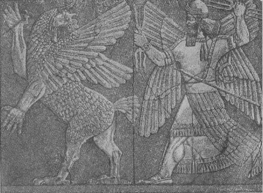
第一図 電光を揮ってティアマートを殺すマルドゥク、大英博物館所蔵ニムロッドの浮彫の一部、フォーシェー・ギューダンの描図による。この図と次の第三図はマスペロの著書より。
マスペロの『古典的東洋民族の古代史』（Masp
ros “Histoire ancienne des peuples de l'Orient classique”）の中にカルデア人の宇宙観を示す一つの絵がある（第二図）。地は八方大洋で取り囲まれた真ん中に高山のように聳え、その頂は雪に覆われ、そこからユーフラテス（Euphrat）河が源を発している。地はその周囲を一列の高い障壁で取り囲まれ、そして地とこの壁との中間のくぼみに何人も越えることのできない大洋がある、壁の向こう側には神々のために当てられた領域がある。壁の上にはこれを覆う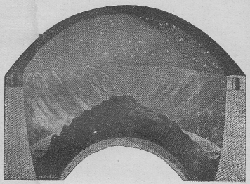
第二図 カルデア人の宇宙観。フォーシェー・ギューダンの描図。中央に大陸が横たわり、それから四方に向かって高まり、いわゆる「世界の山」アララットになっている。大陸の周囲は大洋が取り巻きその向こう側に神々の住みかがある。『世界の山』の上には釣鐘形の天（マルドゥクが造った）が置かれてある。これが昼間は日光で輝き、夜は暗青色の地に星辰が散布される。北の方の部分には管が一本あってその二つの口が図に見えている。朝は太陽がその東の口から出て蒼穹に昇り、午後には再び沈下して夜になるとついに管の西口の中に入ってしまう。夜の間はこの管の中を押しすすみ翌朝になると、また再び東口に現われる。
カルデア人の文化は季節の交互変化と甚だ深い関係があるので、彼らは暦の計算を重要視した。始めには、多数の民族と同様に、算暦の基礎を太陰の運行においたものらしい。しかしそのうちに太陽の方がもっと重要な影響を及ぼすことに気付いたので、上記のごとき太陽年を採用した。それがマルドゥクの業績として伝えられたのであろう。その後、間もなく、星の位置を観測すると種々な季節を決定するのに特別有用であるということを発見した。季節は動植物界を支配する。しかるに人類の存続は結局全くこの有機界による。そういうわけで、結局星辰の力というものが過重視されるようになり、そのために爾後約二〇世紀の間、現代の始まりまでも自然研究の衝動を麻痺させるという甚だ有害な妄信を生ずるに至った。この教理はジュリアス・シーザーと同時代のディオドルス・シクルス（Diodorus Siculus）によって次のように述べられている。『彼ら（カルデア人）は長い年月の間星辰を注目してきて、しかしてあらゆる他国民よりも仔細にその運動と法則とを観察してきたおかげで、将来起るべきいろいろのことを人々に予言することができた。予言をしたり未来を左右したりするのに最も有効なものは、吾人が遊星と名づくる五つの星（水星、金星、火星、木星、土星）であると考えた。もっとも彼らはこれらの星を『通訳者』（Dolmetscher）という名で総称していた。――しかしこれらの星の軌道には、彼らのいうところでは、『助言する神々』と呼ばれる三〇の別の星がある。そのうちでの首座の神々として一二を選み、その一つ一つに一二ヶ月の一つと並びに黄道状態における十二宮星座の一つずつを配布した。これらの中を通って太陽太陰並びに五つの遊星が運行するものと彼らは信じていたのである。』
カルデアの僧侶たちの占星術はなかなか行届いたものであった。彼らは毎日の星の位置を精細に記録し、また直後の未来におけるその位置を算定することさえできた。いろいろの星はそれぞれ神々を代表し、あるいは全く神々そのものと見なされていた。それで誰でもいかなる神々が自分の生涯を支配しているかを知りたいと思う人は、星のことに明るい僧侶について、自分の誕生日における諸星の位置を尋ねる。そうして潤沢な見料と引換に、自分の運勢の大要を教わるのである。何か一つの企てをある決まった日に遂行しようという場合ならば、その成功の見込についてあらかじめ教えを受けることができた。もしこのカルデアの僧侶についてよほど善意な判断を下してみるとすれば、多分こういうふうに言われるであろう。すなわち、彼らの考えの基礎には、すべてのできごとは外界の条件の必然の結果として起るものである、という、今日でも一般に通用している確信があったのであろう。
しかしこの考えと編み交ぜられていたもう一つの考えは全く間違ったものであって、簡単な吟味にも堪えないものであった。すなわち、それは太陰や諸遊星の位置が自然界や人間界にかなりな影響を及ぼすと考えたことである。諸天体は神々であるとの信仰のために天文学は神様に関する教え、すなわち、宗教の一部になった。しかしてその修行はただ主宰の位置にある僧侶階級にのみ限られていた。誰でもこの僧侶階級の先入的な意見に疑いを挿むような者はこの僧侶たちと利害を同じうしていた主権者から最も苛酷な追究を受けた。この忌まわしい風習が一部分古典時代の民族に移り伝わり、そうして中世の半野蛮人において最も強く現われたのである。
カルデアの宇宙構成神話はまた他の方面から見ても吾人にとって重要な意義がある。すなわちそれは、少し違った形でユダヤ人によって採用され、従ってまたキリスト教徒に伝えられたからである。近代の研究において一般に認容されている宇宙創造伝説の推移に関する考えは、ドイツの読者間には『バベルとバイブル』（Babel und Bibel）という書物によって周知のことと思うから、ここではすべてをその書に譲りたいと思う。渾沌はユダヤ人にとってもやはり原始的のものであった。地は荒涼で空虚であった。しかして深きもの（すなわち、原始の水）の上には一面の闇があった。バビロニアの僧侶ベロスース（Berosus）の言葉として伝えられているところでは『始めにはすべてが闇と水であった』ことになっている。この深きものテホム（Tehom）というのがユダヤの宇宙創造の物語では人格視されており、また語源的にティアマートに相当している。その有り合わせた材料から神エロヒーム（Elohim）が天と地とを創造した（あるいは、本当の意味では、形成した）のである。
エロヒームは水を分けた。その上なるものは天の中に封じ込められ、しかしてその下なるものの中に地が置かれた。地は平坦、あるいは半球形であって、その水の上に浮んでいるものと考えられていた。その上方には不動な天の穹窿が横たわり、それに星辰が固定されていた。しかしこの天蓋までの高さは余り高いものではなく、鳥類はそこまで翔け昇り、それに沿うて飛行することができるのである。エノーク（Enoch）は、多くの星が地獄（Gehennas）の火に焼き尽くされたさまを叙している。それはエロヒームの神がこれらの星に光れと命じたときに光り始めなかったからである。このように星辰は『不逞の天使』すなわち、主上の神から排斥された神々であったのである。
カルデアの創世記物語とユダヤのそれとの相違する主要の点は、後者が一神的であるに反し前者が多神的であることである。ただし前者でも太陽神マルドゥクが万象並びにまた諸神の主権者として現われている点から見ればやはり一神的の傾向をも帯びている。
ユダヤの宇宙開闢説の中にはまた世界の卵という考えに関するフェニシアの創世伝説の痕跡のあることは『エロヒームの精霊が水の上に巣籠りした（br
 tete. 通例「浮揺していた」schwebte と訳してある）』という文句からうかがわれる。またマルドゥクとティアマートの争闘の物語の片影はヤフヴェ（Jahve）が海の怪物レヴィアターン（Leviathan）すなわち、ラハーブ（Rahab）を克服する伝説の中に認められる。宇宙開闢論の見地から見ると、ユダヤ、従ってキリスト教における世界の始源に関する表現には何ら特別優れた創意というものはないのである。
tete. 通例「浮揺していた」schwebte と訳してある）』という文句からうかがわれる。またマルドゥクとティアマートの争闘の物語の片影はヤフヴェ（Jahve）が海の怪物レヴィアターン（Leviathan）すなわち、ラハーブ（Rahab）を克服する伝説の中に認められる。宇宙開闢論の見地から見ると、ユダヤ、従ってキリスト教における世界の始源に関する表現には何ら特別優れた創意というものはないのである。世界の始めに関するこの最初のカルデアの記述よりは幾分後になるが、それでもやはり随分古いものとしては、これに対応するエジプトのいろいろの物語である。中で最も重要な、ここでの問題に関する神話を、マスペロ（Masp
ro）の集録によって紹介することとする。すなわち、当時『虚無』の概念はまだ抽象的なものにはなっていなかった。それで、「暗き水の中に」、形は渾沌たるものではあったがとにかく物質的な材料があった。そこで特別な首座の神様が――国が違えばこの神も一々違っているが――世界にありとあらゆる生物無生物を造り出した。その造り方は、その神の平生の仕事次第でいろいろであって、例えば織り出すとか、あるいは陶器の壷などのように旋盤の上でこねて造ったりしている。ナイル川のデルタの東部地方では創世記神話が最もよく発達していた。すなわち、始めには天（ヌイト Nuit）と地（シブ Sibu）とが互いにしっかりと絡み合って原始の水（ヌー Nu）の中に静止していた。創世の日に一つの新しい神シュー（Shu）が原始水から出現し、両手で天の女神ヌイトをかかえてさし上げた、それでこの女神は両手と両足――これが天の穹窿の四本柱である――を張って自分のからだを支え、それが星をちりばめた天穹となったのである（第三図）。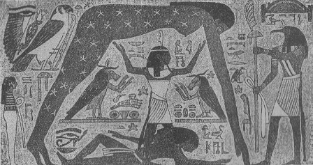
第三図 シューの神がヌイト（天）とシブ（地）を分つ図。チューリン博物館所蔵のミイラの棺に描かれたものをフォーシェー・ギューダンの模写したもの。
そこでシブは植物の緑で覆われ、それから動物と人間が成り出でた。太陽神ラー（Ra）もまた原始水の中で一つの蓮華の莟の中に隠されていたが、創世の日にこの蓮の花弁が開きラーが出現して天における彼の座を占めた。このラーはしばしばシューと同一視せられたものである。太陽がヌイトとシブの上を照らしたので、そこで一列の神々たちが生れ、その中にはナイルの神のオシリスもいた。暖かい日光の下に、あらゆる生けるもの、すなわち、植物も動物も人間も発達した。ある二三の口碑によるとこれは温められたナイルの泥の中での一種の醗酵作用、すなわち、ある自生的過程によって起ったものとされており、この過程は歴史時代に至ってもまだ全く終っていなかったもののように考えられている。多くの人々の信じていたところでは、この最初の人間たち、すなわち、太陽の子供たちは完全なものであり幸福であった。そして後代のものは出来損なったものばかりで、本来の幸福を失ってしまったものである。またある人々の信じていたところでは、この最古の人間たちは動物のような性状のもので、まだ言語をもたず、ただ曲折のない音声で心持を表わしていたのを、トート（Thot）の神が初めてこれに言語と文字とを教えたということになっている。このように、ダーウィンの学説でさえも、ここに見らるるごとく、既にこの文化の幼年時代においてその先駆者をもっているのである。
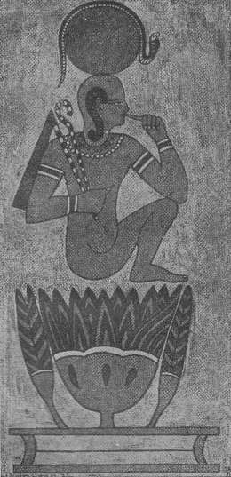
第四図 太陽神が創造の際開きかかった蓮華から出現する図。フォーシェー・ギューダンの描図。この神は頭上に神聖な蛇を乗せた太陽円盤の象徴を頂いている。蓮華と二つの莟とは一つの台から立上がっている、これは通例水盤の象徴であるがここでは暗黒な原始水ヌーをかたどっていると思われる。
古典時代における宇宙始源に関する観念は甚だ幼稚なものであった。ヘシオド（Hesiod 西暦紀元前約七〇〇年）が彼の神統記（Theogonie）及び『日々行事』（Werke und Tage）の中でギリシアの創世記神話を語っている。それによると、すべては渾沌をもって始まった。そのうちに地の女神ゲーア（G
a）が現われ、これが万物の母となった。同様にその息子の天の神ウラノス（Uranos）が通例万物の父と名づけられたものである。天と地とが神々の祖先だという考えは原始民族の間ではよくあることである。ここでこの初心な、子供らしい、また往々野蛮くさい詩を批評的に精査しても大した価値はないのであるから、これをフォッス（Voss）の訳した音律詩形で紹介することとしておく。すなわち、神統記、詩句一〇四―一三〇及び三六四―三七五にこうある。
幸いあれ、ツォイスの子らよ、美しき歌のしらべに、
いざや、永遠に不死なる神々の聖族を讃めたたえよ。
地より、また星に輝く天より成り出で、
暗く淋しき夜よりも。さてはまた海の潮に養われし神々の族をたたえよ。
始めに神々、かくて地の成り出でしことのさまを語れ、
また河々の、果てなき波騒ぐ底ひなき海の、
また輝く星の、遠く円かなる大空の始めはいかなりしぞ。
この中より萌え出でて善きものを授くる幸いある神々は、
いかにその領土を分ち、その光栄を頒ちしか、
またいかに九十九折なすオリンポスをここに求めしか、
時の始めよりぞ、語れ、かの神々の中の一人が始めに生り出でしさまを。
見よ、すべての初めにありしものは渾沌にてありし、さどその後に広がれる
地を生じ、永久の御座としてすべての
永遠なる神たち、そは雪を冠らすオリンポスの峯に住む神の御座となりぬ。
遠く広がれる地の領土の裾なるタルタロスの闇も生じぬ。
やがてエロスはあらゆる美しさに飾られて永遠の神々の前に出できて、
あらゆる人間にも永遠なる神々にも、静かに和らぎて
胸の中深く、知恵と思慮ある決断をも馴らし従えぬ。
渾沌よりエレボス［＃「エレボス」は底本では「エレホス」］（注一）は生れ、暗き夜もまた生れ、
やがて夜より 気
気
両つながらエレボスの至愛の受胎によりて夜より生れたり。
されど地は最初に己が姿にかたどりて
彼の星をちりばめし天を造り、そは隈なく地を覆い囲らして
幸いある神々の動がぬ永久の御座とはなりぬ。
いざや、永遠に不死なる神々の聖族を讃めたたえよ。
地より、また星に輝く天より成り出で、
暗く淋しき夜よりも。さてはまた海の潮に養われし神々の族をたたえよ。
始めに神々、かくて地の成り出でしことのさまを語れ、
また河々の、果てなき波騒ぐ底ひなき海の、
また輝く星の、遠く円かなる大空の始めはいかなりしぞ。
この中より萌え出でて善きものを授くる幸いある神々は、
いかにその領土を分ち、その光栄を頒ちしか、
またいかに九十九折なすオリンポスをここに求めしか、
時の始めよりぞ、語れ、かの神々の中の一人が始めに生り出でしさまを。
見よ、すべての初めにありしものは渾沌にてありし、さどその後に広がれる
地を生じ、永久の御座としてすべての
永遠なる神たち、そは雪を冠らすオリンポスの峯に住む神の御座となりぬ。
遠く広がれる地の領土の裾なるタルタロスの闇も生じぬ。
やがてエロスはあらゆる美しさに飾られて永遠の神々の前に出できて、
あらゆる人間にも永遠なる神々にも、静かに和らぎて
胸の中深く、知恵と思慮ある決断をも馴らし従えぬ。
渾沌よりエレボス［＃「エレボス」は底本では「エレホス」］（注一）は生れ、暗き夜もまた生れ、
やがて夜より
気両つながらエレボスの至愛の受胎によりて夜より生れたり。
されど地は最初に己が姿にかたどりて
彼の星をちりばめし天を造り、そは隈なく地を覆い囲らして
幸いある神々の動がぬ永久の御座とはなりぬ。
（注一） エレボス。原始の闇、陰影の領土。
（注二） エーテル。上層の純粋な天の気、後に宇宙エーテルとして、火、空気、土、水の外の第五の元素とされたもの。
次にゲーアは『沸き上る、荒涼な海』ポントス（Pontos）を生んだ。彼女とウラノスは六人の男子と六人の女子を生じた。それはいわゆるティタンたち（Titanen）で、すなわち『渦巻［＃「渦巻」は底本では「過巻」］深き』大洋のオケアノス（Okeanos）、コイオス（Koios）（注一）とクレイオス（Kreios）（注二）ヤペツス（Japetus）（注三）、ヒュペリオン（Hyperion）（注四）、テイア（Theia）（注五）、レイア（Rheia）（注六）、ムネモシュネ（Mnemosyne）（注七）、テミース（Themis）（注八）、テティース（Thetis）、フォエベ（Phoebe）、及びクロノス（Kronos）（注九）、などその外にキュクロープたち（Zyklopen）（注一〇）などである。ここで、一部は多分ヘシオドのこしらえたと思われるいろいろな名前を目録のように詩句の形でならべたものを紹介しても余り興味はあるまい。――このような単純な詩の種類、すなわち、名前の創作といったようなものは北国民の詩スカルド（Skalden）にも普通である。――ただ星と風との生成に関する次の数行だけはここに掲げてもよいかと思う。
（注一） コイオス。多分光の神、これはヘシオドにだけ出てくる名である。
（注二） クレイオス。半神半人、ポントスの娘の一人、ユウリュビア（Eurybia）の婿である。
（注三） ヤペツス。神々の火を盗んで人類に与えたかのプロメテウス（Prometheus）の父。
（注四） この名の意味は『高く漂浪するもの』である。
（注五） 立派なものの意。
（注六）『神母』、これがすなわちツォイス（Zeus）の母であった。
（注七） 追憶の女神、歌謡の女神たちの母。
（注八） 秩序と徳行の女神。
（注九） 首座の神で、自分の子のツォイスに貶された。
（注一〇） アポローに殺された一つ目の巨人たち。
テイアは光り輝く太陽ヘリオスと太陰セレネを生みぬ、
また曙の神エオスも。これらはあまねく地に住むものを照らし
さては広く円かに覆える天に在す不死なる神をも照らしぬ。
これはかつてヒュペリオンの愛の力によりてテイアより生れぬ。
されど、クリオスはユウリュビアを娶りて力強き御子たち
パルラス（Pallas）とアストレオス（Astros）（注一）を生みぬ、この高く秀でし女神は。
またペルセス（Perses）も、そは、別けて知恵優れし神なりき。
エオスはアストレオスと契りて、制し難き雄心に勇む風の神を生みぬ。
ゼフューロス（Zefyros）（注二）は灰色にものすさまじ、ボレアス（Boreas）（注三）は息吹きも暴し。
ノトス（Notos）（注四）は女神と男神の恋濃かに生みし子なればこそ。
また次に聖なる爽明の女神はフォスフォロス（Fosforos）（注五）を生みぬ。
天に瓔珞とかがやく星の数々も共に。
また曙の神エオスも。これらはあまねく地に住むものを照らし
さては広く円かに覆える天に在す不死なる神をも照らしぬ。
これはかつてヒュペリオンの愛の力によりてテイアより生れぬ。
されど、クリオスはユウリュビアを娶りて力強き御子たち
パルラス（Pallas）とアストレオス（Astr
os）（注一）を生みぬ、この高く秀でし女神は。またペルセス（Perses）も、そは、別けて知恵優れし神なりき。
エオスはアストレオスと契りて、制し難き雄心に勇む風の神を生みぬ。
ゼフューロス（Zefyros）（注二）は灰色にものすさまじ、ボレアス（Boreas）（注三）は息吹きも暴し。
ノトス（Notos）（注四）は女神と男神の恋濃かに生みし子なればこそ。
また次に聖なる爽明の女神はフォスフォロス（Fosforos）（注五）を生みぬ。
天に瓔珞とかがやく星の数々も共に。
（注一） 天の神で風の神々の父。
（注二） 西風。
（注三） 北風。
（注四） 南風。
（注五） 暁の明星―金星（venus）。
『日々行事』（Werke und Tage）において、ヘシオドはいかにして人間が神々によって創造させられたかを述べている。始めには人間は善良で完全で幸福で、しかして豊富な地上の産物によって何の苦労もなく生活していた。その後にだんだんに堕落するようになったのである。
ギリシアの宇宙開闢説はローマ人によって踏襲されたが、しかしそのままで著しい発展はしなかった。オヴィドがその著メタモルフォセス（Metamorphoses）の中に述べているところによると始めにはただ秩序なき均等な渾沌、“rudis indigestaque moles”があった。それは土と水と空気との形のない混合物であった。
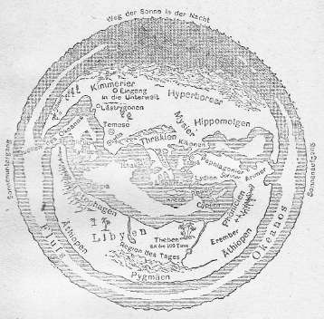
第五図 ギリシア神話における大河オケアノスの概念。
オヴィドの宇宙開闢説はヘシオドのといくらも違ったところはない。本来の稚拙な味は大部分失われ、そしてこれに代わって、実用的なローマ人の思考過程にふさわしいずっと生真面目な系統化が見えているのである。
部分的にはなかなか見事であると思われるオヴィドの叙述の見本を少しばかり、ブレ（Bulle）の翻訳したメタモルフォセス［＃「メタモルフォセス」は底本では「メタルモルフォセス」］（『変相』）の中から下に紹介する。
海と陸の成りしときよりも前に
天がこの両つの上に高く広がりしときよりも古く
全世界はただ一様の姿を示しぬ、
渾沌と名づくる荒涼なる混乱にてありし。
重きものの中に罪深く集いて隠れしは
後の世に起りし争闘の萌芽なりき。
日の神は未だその光を世に現わさず、
フォエベの鎌はまだ望月と成らざりき。
地は未だ今のごとく、
己と釣合いて空際に浮ばず
またアムフィトリートの腕は未だ我が物と
遠く広がる国々の果てを抱かざりき。（注一）
空気あるところにはまた陸あり、陸にはまた
溢るる水ありて空気に光もなく
陸には立ち止まるべきわずかの場所もなく
水には泳ぐべき少しの流動さえなかりき。
いかなる物質にも常住の形はなく、
何物も互いに意のままにならざりき。
一つの体内に柔と剛は戦い、
寒は暖と、軽は重と争いぬ。
ただ、物の善き本性と
一つの神性とによりてこの醗酵は止みぬ。（注二）
陸と海、地と蒼穹とは分たれ、
輝くエーテルと重き空気は分たれぬ。
かくて神がこの荒涼を分ちて
万物をその在所に置きしとき
すべての中に一致と平和を作り出しぬ。
上に高く天の幕を張り巡らせし
そは重量なき火の素質にてありき、
下には深くやがてまた重く空気を伴いぬ。
更に深く沈みて粗なる質量より作られて
地はありぬ、その周囲には水を巡らしぬ。
かく神が物質を分ちしとき――
そは誰なりしか――これに肢節を作り始めぬ。
これが均衡を得るためにまず
地を球形（注三）として空中に浮べたりき。
嵐に慄く海の潮を
次に湖沼を泉を河を造りぬ、
河は谷に従い、岸の曲るに任せて流れぬ。
多くの流れは成りてその波は
海へと逆巻きて下り、多くの河は
やがて再びまた地を呑み尽くし、
また多くは勢いのままに溢れ漲り
渚は化して弓なりに広き湖となり
岸辺は波打ちぬ。神の定めに
また谷々も広き野原も
また岩山も緑茂る森も出できぬ。
神はまた天の左手の側に
二つの帯を作りまた右手に二つ
真ん中には火光に燃ゆる第五帯を作りまた
地にも同じく五つの帯の環を巡らしぬ。
中なる帯は暑さのために住み難く
さらばとて外側の帯は氷雪の虐げあり、
ただ残る二帯のみ暖と冷と
幸いあるほどに正しく交じり合えり。
空気はそのエーテルより重きことはなお
水の土よりも軽きがごとし、
神はこれを雷電の座と定めければ、このときより
多くの人の心はそのために安からず恐れ悩めり。
また神は霧を撒き散らしまた霞と雲を
空中に播き、また稲妻を引連れて、
風の軍勢はかしこに氷の息吹きと飛び行く、
されど神はその止度なく暴るることは許さじ。
天がこの両つの上に高く広がりしときよりも古く
全世界はただ一様の姿を示しぬ、
渾沌と名づくる荒涼なる混乱にてありし。
重きものの中に罪深く集いて隠れしは
後の世に起りし争闘の萌芽なりき。
日の神は未だその光を世に現わさず、
フォエベの鎌はまだ望月と成らざりき。
地は未だ今のごとく、
己と釣合いて空際に浮ばず
またアムフィトリートの腕は未だ我が物と
遠く広がる国々の果てを抱かざりき。（注一）
空気あるところにはまた陸あり、陸にはまた
溢るる水ありて空気に光もなく
陸には立ち止まるべきわずかの場所もなく
水には泳ぐべき少しの流動さえなかりき。
いかなる物質にも常住の形はなく、
何物も互いに意のままにならざりき。
一つの体内に柔と剛は戦い、
寒は暖と、軽は重と争いぬ。
ただ、物の善き本性と
一つの神性とによりてこの醗酵は止みぬ。（注二）
陸と海、地と蒼穹とは分たれ、
輝くエーテルと重き空気は分たれぬ。
かくて神がこの荒涼を分ちて
万物をその在所に置きしとき
すべての中に一致と平和を作り出しぬ。
上に高く天の幕を張り巡らせし
そは重量なき火の素質にてありき、
下には深くやがてまた重く空気を伴いぬ。
更に深く沈みて粗なる質量より作られて
地はありぬ、その周囲には水を巡らしぬ。
かく神が物質を分ちしとき――
そは誰なりしか――これに肢節を作り始めぬ。
これが均衡を得るためにまず
地を球形（注三）として空中に浮べたりき。
嵐に慄く海の潮を
次に湖沼を泉を河を造りぬ、
河は谷に従い、岸の曲るに任せて流れぬ。
多くの流れは成りてその波は
海へと逆巻きて下り、多くの河は
やがて再びまた地を呑み尽くし、
また多くは勢いのままに溢れ漲り
渚は化して弓なりに広き湖となり
岸辺は波打ちぬ。神の定めに
また谷々も広き野原も
また岩山も緑茂る森も出できぬ。
神はまた天の左手の側に
二つの帯を作りまた右手に二つ
真ん中には火光に燃ゆる第五帯を作りまた
地にも同じく五つの帯の環を巡らしぬ。
中なる帯は暑さのために住み難く
さらばとて外側の帯は氷雪の虐げあり、
ただ残る二帯のみ暖と冷と
幸いあるほどに正しく交じり合えり。
空気はそのエーテルより重きことはなお
水の土よりも軽きがごとし、
神はこれを雷電の座と定めければ、このときより
多くの人の心はそのために安からず恐れ悩めり。
また神は霧を撒き散らしまた霞と雲を
空中に播き、また稲妻を引連れて、
風の軍勢はかしこに氷の息吹きと飛び行く、
されど神はその止度なく暴るることは許さじ。
（注一） ここで海神ポセイドン（Poseidon）の配偶アムフィトリートが地の縁辺を腕で抱えるとあるところから見ると、オヴィドは地が球形でなくて円板の形をしていると考えていたことが分る。しかしオヴィドの時代に、教養ある人々の間には一般に地は球状をなすものと考えられていた。
（注二） この神は「温和な自然」である。Hanc deus et melior litem natura diremit.
（注三） この言語 orbis は本来円板の義で、後にはまた球の意にも使われた。
この次には各種の風とその出発点に関する記述があって、それからこの詩人は次のように続けている。
澄めるエーテル、そは明るき遠方に
重量なくまた地にあるごとき限界を知らず
昇りたり――エーテルに今は星も輝き初めぬ。
それまでは荒涼なる濁りの中に隠されし群も。
この数々の星にこそ人間の目は自ら
神々の顔と姿を認むるなれ。
この神々は生のすべてのいかなる部分にも
過ち犯すことなからんために、エーテルの中に光り浮ぶ。
かくて空気は鳥の住みかとなり
魚には海、他の生けるものには陸ありき。
ただ一つの存在、そは理性を享け有ちて
すべての他のものの主たるべきものは
未だこの全眷屬の中にあらざりき、
人だねの生れしまでは、そはこの世界を飾らんため（注）
恐らくは主の命により胚子より
形作られて、秩序をもたらすべき人類の生れしまでは。
恐らくはまた地の土の中にエーテルの
取り残されし一片の火花ありしか、
この土を水に柔らげて神々の姿と容を
プロメテウスの堅き手に作り上げしときに。
その外のあらゆる者は下なる地の方に
眼をこそ向くれ、その暇に人のみこそ振り仰ぎ
その眼は高く永遠の星の宮居に、
かくてぞ人のくらいは類いなきしるしなるらん。
あわれ黄金時代よ、その世は信心深き族の
何の拘束も知らず、罰というものの恐れもなく
ただ己が心のままに振舞いてやがて善く正しかりき。
厳しき言葉に綴られし誡めの布告もなくて
自ら品よき習わしと秩序とは保たれぬ。
また判官の前に恐れかしこまる奴隷もなかりし。
人は未だ剣も鎧も知らず
喇叭も戦を呼ぶ角笛も人の世の外なりし。
未だ都を巡らす堀もなく
人はただ己に隣る世界の外を知らざりき。
檜の船は未だかつて浪路を凌がず、
人は世界の果てを見んとて船材に斧を入るることもなかりき。
静かに平和に世はおさまりて
土はその収穫を稔れよと
鶴嘴と鋤とに打砕かるることもなかりき。
重量なくまた地にあるごとき限界を知らず
昇りたり――エーテルに今は星も輝き初めぬ。
それまでは荒涼なる濁りの中に隠されし群も。
この数々の星にこそ人間の目は自ら
神々の顔と姿を認むるなれ。
この神々は生のすべてのいかなる部分にも
過ち犯すことなからんために、エーテルの中に光り浮ぶ。
かくて空気は鳥の住みかとなり
魚には海、他の生けるものには陸ありき。
ただ一つの存在、そは理性を享け有ちて
すべての他のものの主たるべきものは
未だこの全眷屬の中にあらざりき、
人だねの生れしまでは、そはこの世界を飾らんため（注）
恐らくは主の命により胚子より
形作られて、秩序をもたらすべき人類の生れしまでは。
恐らくはまた地の土の中にエーテルの
取り残されし一片の火花ありしか、
この土を水に柔らげて神々の姿と容を
プロメテウスの堅き手に作り上げしときに。
その外のあらゆる者は下なる地の方に
眼をこそ向くれ、その暇に人のみこそ振り仰ぎ
その眼は高く永遠の星の宮居に、
かくてぞ人のくらいは類いなきしるしなるらん。
あわれ黄金時代よ、その世は信心深き族の
何の拘束も知らず、罰というものの恐れもなく
ただ己が心のままに振舞いてやがて善く正しかりき。
厳しき言葉に綴られし誡めの布告もなくて
自ら品よき習わしと秩序とは保たれぬ。
また判官の前に恐れかしこまる奴隷もなかりし。
人は未だ剣も鎧も知らず
喇叭も戦を呼ぶ角笛も人の世の外なりし。
未だ都を巡らす堀もなく
人はただ己に隣る世界の外を知らざりき。
檜の船は未だかつて浪路を凌がず、
人は世界の果てを見んとて船材に斧を入るることもなかりき。
静かに平和に世はおさまりて
土はその収穫を稔れよと
鶴嘴と鋤とに打砕かるることもなかりき。
（注）“Sanctius his animal mentisque capacius altae-Deerat adhuc et quod dominari in cetera posset- Natus homo est.”
この後に来たのが白銀時代で、黄金時代の永久の春はやみ、ジュピターによって四季が作られた。人間は夏の焼くような暑さ、冬の凍てつく寒さを防ぐために隠れ家を求めることが必要となった。土地の天然の収穫で満足していられなくなったので人間は耕作の術を発明した。
世は三度めぐりて黄銅のときとなりぬ。
心荒々しく武器を取る手もいと疾く、
されどなお無慚の心はなかりき［＃「なかりき」は底本では「かなりき」］。恥知る心、規律と正義の
失せ果てしは四度目の世となりしとき、
そは鉄の時代、嘘と僞りの奴とて
掠め奪わん欲望に廉恥を忘れしときのことなり。
このときより腐れたる世界の暴力は
入りきぬ、詭計や陥穽も。
山の樅樹は斧に打たれて倒れ、
作れる船のは知られざる海を進みゆく。
船夫は風に帆を張るすべを知れど
行方は何處とさだかには知り難し。
農夫は心して土地の仕切り定めぬ、
さなくば光や空気と同じく持主は定め難からん。
今はこの土も鋤鍬の責苦のみか
人はその臓腑の奥までも掻きさぐりぬ。
宝を求めて人は穴を掘りぬ、最も深き縦坑に
悪きものを誘わんとて神の隠せし宝なり。
災いの種なる鉄は夜より現われ
更に深き災いと悩みをもたらして黄金も出できぬ。
これらとともに戦争は生れ
二つの金属はこれに武器を貸し与えぬ。
そは血潮に染みし手に打ち振られて鳴りひびきぬ。
世は掠奪に生き奪えるものを貪り食らいぬ。
かくて客人の命を奪う宿の主も
舅姑の生命に仇する婿も現われ、
夫に慄く妻、妻に慄く夫も出できぬ。
兄弟の間にさえ友情は稀に、
継子は継母に毒を飼われ、
息子は父親の死ぬべき年を数う。
愛の神は死し、ついにアストレアは逃げ去りぬ。
神々の最後のもの、血を好むゲーアさえ。
心荒々しく武器を取る手もいと疾く、
されどなお無慚の心はなかりき［＃「なかりき」は底本では「かなりき」］。恥知る心、規律と正義の
失せ果てしは四度目の世となりしとき、
そは鉄の時代、嘘と僞りの奴とて
掠め奪わん欲望に廉恥を忘れしときのことなり。
このときより腐れたる世界の暴力は
入りきぬ、詭計や陥穽も。
山の樅樹は斧に打たれて倒れ、
作れる船のは知られざる海を進みゆく。
船夫は風に帆を張るすべを知れど
行方は何處とさだかには知り難し。
農夫は心して土地の仕切り定めぬ、
さなくば光や空気と同じく持主は定め難からん。
今はこの土も鋤鍬の責苦のみか
人はその臓腑の奥までも掻きさぐりぬ。
宝を求めて人は穴を掘りぬ、最も深き縦坑に
悪きものを誘わんとて神の隠せし宝なり。
災いの種なる鉄は夜より現われ
更に深き災いと悩みをもたらして黄金も出できぬ。
これらとともに戦争は生れ
二つの金属はこれに武器を貸し与えぬ。
そは血潮に染みし手に打ち振られて鳴りひびきぬ。
世は掠奪に生き奪えるものを貪り食らいぬ。
かくて客人の命を奪う宿の主も
舅姑の生命に仇する婿も現われ、
夫に慄く妻、妻に慄く夫も出できぬ。
兄弟の間にさえ友情は稀に、
継子は継母に毒を飼われ、
息子は父親の死ぬべき年を数う。
愛の神は死し、ついにアストレアは逃げ去りぬ。
神々の最後のもの、血を好むゲーアさえ。
ジュピターが大洪水を起してこの眷属を絶滅させ、後にデゥカリオン（Deukalion）とピュルラ（Pyrrha）とが生き残った。その前に二人はデゥカリオンの父なるプロメテウスの教えに従って一艘の小船を造ってあったので、それに乗って九日の間漂浪した後にパルナッソス（Parnassos）の山に流れ着いた。そこで二人が後向きに石を投げると、それが皆人間になった。他の万物は、日光が豊沃な川の泥を温めたときに自然に発生した、というのである。この伝説は大洪水に関する楔形文字で記された伝説や、聖書にあるノア（Noah）の物語やまた生物の起源に関するエジプトの神話と非常によく似たところがある。
神々の数はたくさんにあるが、それはほとんど全部余り栄えた役割は勤めていない。ただ神の名で呼ばれている『温柔な自然』がすべて全部を秩序立てまた支配しているのである。
［＃改ページ］
相当に開けていた諸民族もまた一般には前条に述べたような考えの立場に踏み止まっていた。
また、多分、エジプト僧侶の中に若干の思索家があって、それらは前述のエジプトの創世伝説に現われたような原始的な立場をとうに脱却していたであろうと考えられる。しかし彼らはこの知識を厳重にただ自分らの階級の間にのみ保留し、それによって奴隷的な民衆に対する彼らの偉大な権力を獲得していたのである。
ところが、西暦紀元前約一四〇〇年ごろに、アメンホテプ四世（Amenhotep
）と名づくる開けた君主が現われて一大改革を施し、エジプト古来の宗教を改めて文化の進歩に適応させようとした。彼はかなり急進的の手段を採った。すなわち、古来の数限りもない神々の眷属は一切これを破棄し、唯一の神アテン（Aten）、すなわち、太陽神のみを認めようという宣言を下した。そして古い神々の殿堂を破壊し、また忌まわしい邪神の偶像に充たされたテーベ（Thebe）の旧都を移転してしまった。しかしそれがために当然彼は権勢に目のない僧侶たちから睨まれた。そして盲目な民衆もまた疑いもなく彼らの宗教上の導者たちに追従したに相違ない。それでこのせっかく強制的に行われた真理の発揚もこの賢王の死後跡方もなく消滅してしまった。しかしてその王婿アイ（Ai）は『余は余の軽侮する神々の前に膝を屈しなければならない』と歎ずるようなはめに立至ったのである。アメンホテプ――またクト・エン・アテンス（Chut-en-atens）すなわち『日輪の光輝』――の宗教の偉大であった点は、天然の中で太陽を最高の位に置いたことである。これは吾人の今日の考えとほとんど一致する。地球上におけるあらゆる運動は、ただ僅少な潮汐の運動だけを除いて、全部そのエネルギーを太陽に仰いでいる。またラプラスの仮説から言っても、地球上のすべての物質は、ただその中の比較的僅少な分量が小さな隕石の形で天界から落下しただけで、他は全部その起源を太陽にもっている。それで、言わば、太陽は『すべての物の始源』であって、これは野蛮人の考えるように地上の物だけについてもそう言われ、また全太陽系についても言われ得ることである。以下に太陽神に対する美しい賛美歌を挙げる。ここではこの神はレー（Re）及びアトゥム（Atum）という二つの違った名で呼ばれている。
汝をこそ拝め、あわれ、レーの神の昇るとき、アトゥムの神の沈むとき。
汝は昇り、汝は昇る。汝は輝き、汝は輝く。
光の冠に、汝こそ神々の王なれ。
天の、地の君にて汝は在す。
汝は、かしこに高く星、ここに低く人の数々を作りぬ。
汝こそは、時の始めに既に在せし唯一の神なれ。
地の国々を汝は生み、国々の民を汝は作りぬ。
汝は大空の雨を、やがてニイルの流れを我らがために作り賜いぬ。
河々の水を汝は賜い、その中に住む生物を賜いぬ。
山々の尾根を連ねしは汝、かくて人類とこの地上の世を作りしは汝ぞありし。
汝は昇り、汝は昇る。汝は輝き、汝は輝く。
光の冠に、汝こそ神々の王なれ。
天の、地の君にて汝は在す。
汝は、かしこに高く星、ここに低く人の数々を作りぬ。
汝こそは、時の始めに既に在せし唯一の神なれ。
地の国々を汝は生み、国々の民を汝は作りぬ。
汝は大空の雨を、やがてニイルの流れを我らがために作り賜いぬ。
河々の水を汝は賜い、その中に住む生物を賜いぬ。
山々の尾根を連ねしは汝、かくて人類とこの地上の世を作りしは汝ぞありし。
ラプラスの仮説によっても、やはり、太陽がエジプト人の最も重要な星と見なしたもの、すなわち、遊星の創造者であると見なすことができる。もし遊星を神的存在であるとするならば、太陽は当然一番始めに存在した唯一の神と言ってもよいわけである。
それから一〇〇年ないし二〇〇年の後に現われたツァラトゥストラ（Zarathustra）の宇宙観は正にこのアメンホテプのそれを想出させるものである。この考えによると、無窮の往昔から、いわゆる渾沌に該当する、無限大の空間が存在し、また光と闇との権力が存在していた。そして、光の神なるオルムズド（Ormuzd）は当時有り合わせた材料によって、次のような順序で、万物を形成した。この順序を、バビロニア及びユダヤの伝説による創造の順序と比較してみよう。
オルムズド マルドゥク エロヒーム（創世記、一）
１ アムシャスパンデン（注） １ 天 １ 天
２ 天 ２ 諸天体 ２ 地
３ 太陽、太陰及び星 ３ 地 ３ 植物
４ 火 ４ 植物 ４ 諸天体
５ 水 ５ 動物 ５ 動物
６ 地と生物 ６ 人間 ６ 人間
１ アムシャスパンデン（注） １ 天 １ 天
２ 天 ２ 諸天体 ２ 地
３ 太陽、太陰及び星 ３ 地 ３ 植物
４ 火 ４ 植物 ４ 諸天体
５ 水 ５ 動物 ５ 動物
６ 地と生物 ６ 人間 ６ 人間
（注） アムシャスパンデン（Amschaspanden）はオルムズドに次いで最高位にある六つの神々である。彼らは一人一人重要な倫理的概念を代表している。
ツァラトゥストラの信徒にとっては、太陽が、最も重要な光として、その崇拝の主要な対象であったことは、ちょうどバビロニア人における太陽神マルドゥクと同様であった。他のいろいろの民族でもまた本能的に多神崇拝から太陽礼拝に移っていったので、その一例は日本人である。
時代の移るとともに、ペルシアにおけるツァラトゥストラの教えは変化を受け、数多の分派を生じた。その中で次第にツァラトゥストラの帰依者の大多数を従えるに至ったゼルヴァニート教の人たち（Zervaniten）の説いたところによると、世界を支配する原理は無窮の時“zervane akerene”であって、これから善（Ormuzd）の原理もまた悪（アフリメン Ahrimen）の原理も生じたというのである。
ツァラトゥストラの教理は回々教及びグノスチック教の要素と融合して更に別の分派を生じた。すなわち、イスマイリズム（Ismailismus）と称するものであって、一種の哲学的神秘主義の匂いをもったものである。その教えによると、世界の背後にはある捕えどころのない、名の付けようもない、無限の概念に該当する存在が控えている。この者に関しては我々は言うべき言葉を知らず、従ってまたこれを祈念し礼拝することもできない。この者から、一種の天然自然の必要によって、いわゆる放射（Emanationen）と称するものが順次に出てくる。すなわち（一）全理性（Allvernunft）、（二）全精神（Allseele）、（三）秩序なき原始物質、（四）空間、（五）時間及び（六）秩序組織の整えられた物質的の世界、この中の最高の位置に人間がいるのである。この宗教では物質、空間及び時間の方が、秩序立った組織を有し、従って知覚され得る感覚の世界よりももっと高級な存在価値のあるものとしようというのであるらしい。これはあたかも物質、空間及び時間を無限なりとする近代の考えに相当しているのである。またいわゆる全精神なるものにも同様な属性があるものとされている、これは同じ考えを生命の方へそのまま引き写しに持ち込んでいったものと見ることができよう。
ツァラトゥストラ教に従えば、アストヴァド・エレタ（Astvad-ereta）がすべての死者を呼びさまし、そしてすべてが幸福な状態に復するということになっている。イスマイル教徒に言わせると、この復活並びに最後の審判に関するゾロアスター教の教えは、単に宇宙系における周期的変転を表現する影像にすぎないというのである。この後者の考えはことによるとインド哲学の影響によって成立ったのかも知れないと思われる。
東洋の諸民族の中で、インド人はその古い宗教をもつ点で他民族の中に独自の地位にある。この宗教は永い間に僧侶階級によってだんだんに作り上げられ、永遠に関する一つの教理となった。この教理は哲学的に深遠な意義のあるものであり、また現代の自然科学研究の基礎を成す物質並びに勢力不滅の観念と本質的に該当し、また、その永遠に関する概念は現代の宇宙開闢説の主要な部分を成すものと同じである。
世界万有の中に不断の進化の行われているということは誰が見ても明らかである。それで、この進化は周期的に行われるものであって、何度となく同じことを繰返すものだということを仮定して、始めてこの世界の永遠性ということが了解される。昔のインドの哲学者らがこの過程をどういうふうに考えていたかということは次の物語から分るのである。
マヌ（Manu ヴェダの歌謡の中に現われるマヌは人類の元祖、すなわち、一種のノアである）はじっと考えに沈んでいた。そこへマハルキーン（Maharchien）がやってきて、恭しく御辞儀をしてこう言った。『主よ、もし御心に叶わば、どうか、物の始まりがいかなる法則によって起ったか。またそれが混じり合ってできた物はいかなる法則に支配されたか、こと細かに、順序を立てて御話して下さるように願います。主よ。この普遍な法則の始まり、それの意味またその結果を知っているのはあなたばかりであります。この根元の法則は捕えどころもなく、その及ぶ範囲も普通の常識ではとても測り知ることができません。ただヴェダであらせられるあなただけが御分りでありましょう。』これに対してこの全能なるものの賢い返答は次の通りであった。『では話して聞かそう。この世界はその昔暗黒に包まれて、捕えどころなく、物と物とを差別すべき目標もなかった。悟性によってその概念を得るということもできず、またそれを示現することもできず、全く眠りに沈んだような有様であった。この溶合の状態（宇宙はここでは完全に均質に溶け合った溶解物のように考えられているのである）がその終期に近づいたときに、主（ブラーマ Brahma）、すなわち、この世界の創造者でしかも吾人の官能には捕え難い主は、五つの元素と他の原始物質とによってこの世界を知覚し得るようにした。彼は至純な光で世を照らし闇を散らし、天然界の発展を始めさせた。彼は自己の観念の中に思い定めた上で、様々の創造物を自生的に発生させることとした。そして第一に水を創造し、その中に一つの種子を下ろした。この種子がだんだん生長して、黄金のように輝く卵となった。それは千筋の星の光のように光っていた。そしてそれから生れ出たのが、万物の始源たる、男性、ブラーマの形骸を備えた至高の存在であった。彼がこの卵の中で神の年の一年間（人間の年で数えると約三〇〇〇〇億年余）休息した後に、主はただ自分の観念の中でこの卵を二分し、それで天と地とを造った。そして両者の中間に気海と八つの星天（第六図、対一〇五頁）と及び水を容るべき測り難い空間を安置した。かくして、永遠の世界から生れたこの無常の世界が創造されたのである。』なお主なる彼はこの外にたくさんの神々と精霊と時期とを創造した。この永遠の存在にもまた同時にあらゆる生ける存在にも覚醒と安息との期間が交互に周期的にやってくる。人間界の一年は霊界の一日に当り、霊界の一二〇〇年（この毎年が人間の三六〇年を含む）が神界の一紀であり、この二千紀が一ブラーマ日に当る。この――八六億四〇〇〇万年の長きに当る――日の後半の間はブラーマもまたすべての生命も眠っている。しかして彼が眼を覚ますとそれからまたその創造欲を満足させるのである。この創造作業と世界破壊作業との行われる回数は無限である。そうしてこの永遠の存在なる神はこれをほとんど遊び仕事にやってのけるのである。
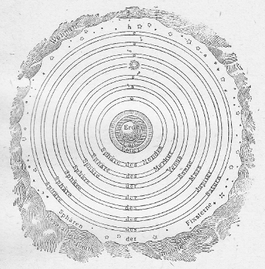
第六図 プトレマイオスの宇宙系
このインド哲学の偉大な点は、永遠の概念の構成の当を得ている点である。すなわち、天然の進展に周期的交代すなわち輪廻があるとする点にある。もっともその他の点では、その考え方はペシミスティックである。すなわち、毎周期の進展は不断の後退であって、特に道徳的方面で堕落に向かうものと見なされているのである。
このペシミスティックな考え方は既に前述のエジプトの伝説にもあり、また元は人間に黄金時代があったとする古典的ギリシアの昔にもあったものであり、更にまた天上の楽園並びに罪過による失墜に関するカルデアの伝説にも見出さるるものであるが、これは自然の研究に基づいて構成された近代の進化論の学説とは甚だしく背馳する考えである。この説の先駆者とも見るべきものはエジプト伝説の中にもまたホーマーの中にもあるのであるが、これによると事物（人間）は次第次第に改善されていくのである。進化論によるとただ最も力強くかつ最も良く環境に適応するもののみが生存競争に堪え、従って絶えずますます生存に適する物が現われてくるというのである。
一つの観念、あるいは意志の働きが、何ら以前から存在するエネルギーあるいは物質を消費することなしに作業あるいは物質の生因となるという考え、換言すれば全くの虚無から本当の意味での創造が可能であるという考えの明白に表明されているのは前に紹介した物語が最初のものである。この信仰には以来多数の追従者ができた。しかして彼らはこの考えの方が、すべての民族に本来共通な、ただ改造のみが行われたという考えよりはるかに優れたものと考えた。しかしある物が虚無から生じ得るという（本文一〇頁を見よ）この考えは単に科学的のみならずまた哲学的の見地からも支持し難いものである。ここではただこの問題に関するスピノザとハーバート・スペンサーの意義明瞭な表出を挙げるだけで十分であると思う。すなわち、スピノザはその著倫理学（Ethik）の第三篇の緒言の中でこう言っている。『すべての出来事並びにすべての物の形の変転を支配する自然界の法則と規則は常にかつ至る所同一である。』スペンサーはその生物学原理（Principles of Biology 第一巻三三六及び三四四頁）において次のように言っている。『恐らく多くの人々は虚無からある新しい有機物が創造されると信じているであろう。もしそういうことがあるとすれば、それは物質の創造を仮定することで、これは全く考え難いことである。この仮定は結局虚無とある実在物との間にある関係が考えられるということを前提するもので、関係を考えようというその二つの部分の一方が欠如しているのである。こういう関係は全く無意味である。エネルギーの創造ということも物質の創造と同様にまた全く考え難いことである。』また『生物が創造されたという信仰は最も暗黒な時代の人類の間に成立った考えである。』もっともこの終りの判断は幾分修正を要するかも知れない。なぜかと言えば、虚無からの創造が可能であるという考えはかなり進んだ発達の段階において始めて現われたものであるからである。
あらゆる宇宙創造伝説中で最も立派に仕立て上げられているのは、不思議なことに、スカンジナビアの古代の民のそれである。これは奇妙なことと思われるかも知れない。しかしこの北方における我々の祖先が既に石器時代以来、すなわち、数千年間スカンジナビアに住居していたということ、また青銅器時代の遺物の発見されたものから考えても、この時代にスカンジナビアに特別な高級の文化の存在したことが分るということを忘れてはならない。それで疑いもなく彼らもまた古代の文化民族の種々の観念を継承し、かつ独自にそれを敷衍してきたものに相違ない。
古代のカルデア人とエジプト人の場合では、大概の原始民族の場合と同様に、水が最も主要な元素であって、固体の地はこれの対象として造られたものとなっているのであるが、我が北方民族の祖先の場合では、温熱が一番本質的なものであって、これの対象として寒冷が対立させられているのである。ところが温度というものは疑いもなく物理学的の世界で最も重要な役目を務めるものである。従ってこの北国人の宇宙創造説は自然界の真理という点から見て、これまでに述べたすべての説よりも傑出している。この伝説が我々の現今の考えといかに良く適合するかは実に驚くべきほどである。この説の中には東洋起源また古典時代の思想の継承と思われる成分も多数に見出されはするが、しかしこの北方の創造伝説の特徴と見るべきものは自然界の諸特性を異常に理知的に把握していることである。
この伝説を紹介するに当って私は主としてヴィクトル・リュドベルク（Viktor Rydberg）の『祖先の神話』（G
ttersage der Vter）によることにする。我々の生息するこの世界は永遠に継続するものではない。これにはある始めがあった。そしてまたある終りがあるであろう。時の朝ぼらけには
砂もなく海もなく
冷たき波もなく
またその上を覆う［＃「覆う」は底本では「覆ふ」］天もなかりき。
冷たき波もなく
またその上を覆う［＃「覆う」は底本では「覆ふ」］天もなかりき。
空間（ギンヌンガガップ Ginnungagap）があった。しかしてその北の方の部分に寒冷の泉が生じ、その付近を氷のような霧が包囲していた。――この地方をニーフェルハイム（Nifelheim 霧の世界）と名付けたのはそのためである――。また、この空間には温熱の泉、ウルド（Urd）が生じた。この二つの中間の真ん中に知恵の泉、ミーメス・ブルン（Mimes Brunn）が流れていた。ニーフェルハイムからは霧のような灰色をした寒冷の波が空間に流れ出し、そこでウルドの泉からの温熱の波と出合った。この二つの混合によって基礎物質が生成し、それからこの世界、またそのあとから神々や巨人たちが発生した。ミーメス・ブルンの横たわっている空虚の空間から人間の目には見えぬ世界の樹イュグドラジール（Yggdrasil）がその種子から生長し、その根は延びてこの三つの泉に達していた。
この伝説の偉大な点は、この生物の住家としての世界を温熱と寒冷の泉（太陽と雲霧とに相当する）に影響さるるとしたところにある。生物の生息する世界はこの二つの間に存し、生命はこの二つに依帰する、すなわち、現代の考え方に従えば、熱い太陽からの温熱の供給と、並びに寒冷な雲霧へのそれの流動に依帰するのである。
北方の伝説は、それから先では、一つの死体の肢節から世界が創造されたという普通の考え方に結び付いている。一つの神ウォータン（Wotan これはカルデアのマルドゥクに当る）が巨人イューメル（Ymer すなわち、ティアマートに当る）を殺し、その体躯から天と地を造りまたその血から大洋を造ったというのである。しかし、ここで北国民は一つの独創的な変更を加えている。すなわち、イューメルの五体が生命あるもののよりどころとなり得るためには、その前に一度微塵に粉砕されなければならなかった。その目的のために特別な洞窟仕掛の粉磨水車が造られ、これは寒冷の泉から来る水の力で運転され、その水は一つの溝渠を通って大洋の中へ流れ込むようになっていた。これは明らかに、水の作用によって堅い岩石が磨り削られて土壌と成る、いわゆる風化の現象を詩化して表現したものである。この大きな巨人的水車はまた天の蒼穹とその数々の恒星を回転させるためにも役立ったことになっているのである。
バビロニアの伝説では、体躯が魚で頭と腕と足は人の形を備えた海の怪物オアンネス（Oannes）が海の波から出現し、人間にあらゆる技芸や学術を教えた後に再び海中深く消えたというのであるが、それと同様にこの巨人的磨臼の石の火花から生れた、優しい金髪の若者の貌をした、驚くべく美しい火の神ハイムダル（Heimdall）が、小船に乗って人間界をおとずれ、そうして文明の祝福をもたらしたことになっている。この船で五穀の禾束や、いろいろの道具や、武器などが運ばれてきた。彼はだんだんに成人して人間の首長となり、発火錐で作った火を彼らに授け、また種々のルーネン（Runen）や芸術を教えた。農業、牧畜、鍛冶その他の手工、パン製造、それから建築術や狩猟やまた防御の術を授けた。彼は結婚の制を定め、国家の基礎を置き、また宗教を創設した。多年の賢明な治世の後にハイムダルがある冬の日に永遠の眠りについたときに、始めに彼を人間界に載せてきた小船が海岸で見出された。彼の恩を忘れぬ人間たちは、霜の花で飾られたこの小船にハイムダルの亡骸を収め、それに様々な高貴な鉄工品や金銀細工を満載した。小船は、始めに来たときと同じように、目に見えぬ橈の力で矢のように大海に乗り出して遠く水平線の彼方に消え失せた。そこでハイムダルは神々の宮居に迎えられ、そうして輝くような神の若者の姿に復活した。その後、彼の息子のスコェルド・ボルゲル（Sk
ld-Borger）が彼に次いで人間の首長となったのである。スコェルド・ボルゲルの治世の間に世界は著しく悪くなってきた、そしてその末期に近いころに、光の神バルデル（Balder）の死に際会した。そのために恐ろしいフィムブルの冬（Fimbul-Winter）が襲来して、氷河と氷原がそれまでは人の住んでいた土地を覆い、氷を免れた部分では収穫はだんだんに乏しくなった。飢餓は人間を支配し彼らを駆って最も恐ろしい罪業に陥れた。『暴風時代』『斧と刀の時代』（Sturm-Zeit, Axt-und Messer-Zeit）という名で呼ばれる時代がこのときから始まった。北国人は剣戟を手にして彼らの近親民族をその住居から放逐したためにこれら民族はやむを得ず次第に南下して新しい住みかを求めなければならなかった。それからある時期の後に始めてこのフィムブルの冬が過ぎ去って氷雪が消え失せたというのである。
誰でも気の付く通り、この伝説は著しい気候の悪化、その結果として氷河が陸地を覆い、民族の移動の起ったことを最も如実に表現している。それで、北国人らが、いつかはまたもう一度フィムブルの冬が襲来して、彼らがラグナロク（Ragnarok）と名づけるところの没落期となるであろうと信じていたのは怪しむに足りない。この時代が近よると無秩序の不安な状態が再び立帰ってくるであろう。氷雪の国から巨人らが現われて神々の宮殿に攻め寄せ、人間は寒冷と飢餓と疫病と争闘のために死んでゆくであろう。太陽はそのときでもやはり同じ弧状の軌道を天上に描きはするが、その光輝は次第に薄らぐであろう。いよいよ巨人軍と神々との戦闘が始まると双方に夥しい戦没者ができる。そうしてかの火の神ハイムダルも瀕死の重傷を受けるであろう。すると太陽もまた光を失い、天の穹窿は割れ、地底の火を封じていた山嶽は破れ、火焔はこの戦場を包囲するであろう。この世界的大火災の跡から、新しく、より善く、麗しい緑で覆われた地が出現するであろう。ただミーメの泉の傍のホッドミンネの神苑（Hoddminnes Hain）だけがこの世界的の火災を免れるので、そこに隠れていた若干の神々と、人間の一対ライフトラーゼルとリーフ（Leiftraser und Lif）とだけが救われるであろう。この二人がこの地上に帰ってくる。地は労耕せずして豊富な収穫を生ずるので、何の苦労もない幸福な新時代が始まるであろう。
あるいは古代ギリシア、ローマ並びにキリスト教関係の説話からの影響を受けたかと思われるこの注意すべき伝説は、太陽が徐々に消え、そのために地球上の生物が減少するという近代の観念と全く一致している。太陽（神々）は寒冷の世界（巨人）すなわち、宇宙星雲及びその中に包有せらるる数多の消えた太陽と衝突するであろう。その衝突の際に地殻内に封じられた火焔が噴出しそのために地上は荒廃に帰する。しかしある時期の後にはまた新しい地が形成され、そして生命（神々）は宇宙空間にある不死の霊木イュグドラジール（Yggdrasil）から再び地上に広がるであろう。
この驚くべく美しい、しかもまた真実なエッダ（Edda）の世界伝説は、他の自然民族間に伝わったあらゆる同種類の伝説に比べてはるかに優れたものである。この美しいハイムダル伝説が暗示するように、最初の文明、並びにこれと一緒に、世界創造伝説の原始的要素が、外国、多分東洋から海を越えて渡来したものであることには疑いない。しかしいかなる創造伝説でも自然に対する見方の忠実さという点においてこの北方民族のそれに匹敵するものは一つもないであろう。
以上私は、自然現象の経過に関する知識を得るために直接観察の方法を講じるというようなことは何もしなかったような、そういう時代における自然の見方がいかなるものであったかを述べたつもりである。こういう時代には自然科学はおのずから神話の衣裳を着ている。もっと程度が高くなればそれは
人間にとって特別に重要であるために最も周到な観察の目的物となるものはまず第一に時間の知識であった。そこから多分各種天体の本性に関する観念が生れ、これらを手近な地上の物体のそれと分りやすく比較するようになったものと思われる。このようにして次第に最も簡単な天文、物理及び化学的の概念が形成されたのである。こういう時代になると以前の時代におけるとは反対に、多様な考え方の中で最も秀でた代表的のもののみが挙げられ、そうしてこれら概念の発達を歴史的に通覧することができるようになってくるのである。
以下に述べる宇宙の見方は、これまで述べてきた神話時代に属するものと反対に、いずれも歴史時代に属するものである。
［＃改ページ］
開化程度の最も低い人間にとっては暦などというものの必要がなく、従ってまた時の尺度を自然界に求めようとする機縁にも接しないのである。最古の人間は疑いもなく狩猟と漁労によって生活していたであろう。ただ飢餓に迫られ、しかも狩猟の獲物の欠乏のために他の栄養物を求めるような場合に至って、そこで初めて草木の実や、食用に適する根の類をも珍重することを覚えたのであろう。もっともこれらはただ応急のものであって、多分主として婦人たちがそれで間に合わせなければならなかったかも知れない。男子らはその仕留めた野獣や魚の過剰なものよりしか婦人たちには与えなかったろうと思われるからである。それでこれら民族は野獣の放浪するに従って放浪しなければならなかった。そうして、ただ差し当ったその日その日の要求ということだけしか考えなかったのである。その後に人間がもう少し常住一様な栄養品の供給を確保するために、なかんずく必要な野獣を飼い馴らすことを覚えるようになっても、事情はまだ大して変らなかった。ところがこの獣類を飼養するには、季節に応じて変ってゆく牧場を絶えず新たに求める必要があるので、こういう遊牧民の居所は彼らの家畜によって定まることになっていった。決してその逆ではなかったのである。
しかし人口が増殖してきたために、気紛れでなしに本式に土地の耕作をする必要が起るとともに、事情は全くちがってきた。すなわち、固定した住居をもつ必要を生じ、また本来の目的とする収穫を得るための準備として一定の季節にいろいろな野良仕事をしなければならなくなった。しかるに季節の循環は地球に対する太陽の位置の変化によるのであるから、この変化を詳しく知ることが望ましくなってきた。そのうちに間もなく、季節によっていろいろな星の出没の時刻の違うことに気が付き、しかしてこれを正確に観察する方がずっと容易であることを知った。すでに古い昔から、新月と満月との規則正しい交代が、二九・五三日という短い周期で起るので、これが短い期間の時の決定に特に好都合なものとして人間の注意をひいたに相違ない。この周期に基づいて一月の長さを定め、端数を切り上げて三〇日とした。更にこの一ヶ月を各々一〇日ずつの三つの期間に区分した。一年の長さはほぼ一二ヶ月に当るので、最初はこれを三六〇日と定めたのであった。
最古の文明は、時の決定、すなわち、暦と最も密接な関係をもっている。この決定は非常に規則正しく復帰する各種の周期的現象に基づくものである。既に述べた通り、中でも太陰の光度の交互変化は自然民にとっては最も目に付きやすいものであった。それは比較的短い期間に同一の現象が立帰ってくるために特にそうであったのである。アリアン系の言語では、計量（Mass）、測定する（messen）及び太陰（Mond）の観念を表わす言葉は同一の語根からできている。梵語で太陰をマース（M
 s）というが、これは計量者、計量器（der Messer）の意でラテンの月（mensis）及び計量器（mensura）と関係している。我々の国語でのこの言葉もやはり古くここから導かれてきたものである。すなわち、太陰はその規則正しくかつ観察に恰好な光度の輪回のために最初の測定術の出発点を与えた。一方また太陰は昔バビロニア人の間では神々の中での首長と見なされていたものである。ある古い楔形文字で記された古文書に、こんなことがある。
s）というが、これは計量者、計量器（der Messer）の意でラテンの月（mensis）及び計量器（mensura）と関係している。我々の国語でのこの言葉もやはり古くここから導かれてきたものである。すなわち、太陰はその規則正しくかつ観察に恰好な光度の輪回のために最初の測定術の出発点を与えた。一方また太陰は昔バビロニア人の間では神々の中での首長と見なされていたものである。ある古い楔形文字で記された古文書に、こんなことがある。
おお、シン（月神）の神よ、汝のみひとり高きよりの光を
汝こそ光を人の世に恵み給わめ、
………………………………………
汝が光は、汝の初めの御子なるシャマシュ（太陽）の輝きのごとく麗わしく［＃「麗わしく」は底本では「麗しわく」］、
汝が御前には神々も塵の中に横たわる。
おお汝よ、おお運命の支配者よ。
汝こそ光を人の世に恵み給わめ、
………………………………………
汝が光は、汝の初めの御子なるシャマシュ（太陽）の輝きのごとく麗わしく［＃「麗わしく」は底本では「麗しわく」］、
汝が御前には神々も塵の中に横たわる。
おお汝よ、おお運命の支配者よ。
このシン（Sin）というのは月の神で、シャマシュ（Shamash）は太陽神である。紀元前二〇〇〇年ころに至って、初めて、以前にあの木星の支配者であったところの、バビロンでは特別に大事な神様マルドゥクが、シンやシャマシュに取って代わり、自ら太陽神として何よりも崇ばれるようになったのである。
もう少し長い周期が望ましくなってくるので、何かしら太陰周期すなわち、太陰の一ヶ月と関係の付けられるものを求めるようになった。そこで一ヶ年、すなわち、太陽の輪回を、近似的に一二ヶ月に等しいと定めた。古代メキシコ人の間に行われた、トナラマトル（Tonalamatl）と名づける二六〇日の珍しい周期はほとんど太陰月の九ヶ月（すなわち、二六五・七日）に等しい。これは多分二〇で割り切れるために二六〇日としたものであるらしい。
太陰が暦の決定に役に立つということが分ると同時に、これと同じ目的に役に立つような他の天体を求めるようになったのは当然のことである。この目的には金星は特に全くあつらえ向きにできていた。この星の光は強くて、暗夜には物の陰影を投げるほどであり、またその一周の周期はかなり短くてわずかに五八四日（すなわち、一・六年）である。文化の進歩するにつれて、数年という長さの期間で年代を数えるようになったころには、太陽の輪回八回が金星の周期の五倍にほとんど等しいという事実が非常に便利に感ぜられた。またメキシコ人はこれよりもずっと長い、一〇四太陽年という周期を設定した。これは一四六トナラマトル、あるいは金星周期の六五倍に当るのである。
上記三つの計測術の支配者とも言うべき天体は、いわゆる旧世界でも新世界でも、最古の文化民族の間で神々の中の首長として尊崇せられていた。バビロニア人はシン、シャマシュ及びイシュタール（Ishtar 金星に当るアスタルテ Astarte）の三神を仰いでいた。アラビア人は太陰（ワッド Wadd ホバル Hobal またはハウバス Haubas）を父として、太陽（シャムシュ Shamsh）を母、また金星（アッタール Atthar）をその子として礼拝した。アッシリアの諸王はその尊貴の表象として掛けていた首輪から三つの護符を胸に垂らしていたが、その一つは月の鎌の形をしており、第二のものは輻を具備した車輪か、あるいは十字（太陽の象徴）の形をしており、また第三のものは一つの輪で囲まれた星の形（金星の象徴）をしていた。
最古の文化民族の宗教は確かに、暦日の予算という、すなわち、最古の科学というべきものを神聖視し尊崇したところから発達したものと思われる。このようにして星の学問が始まって以来、次第に他の遊星も観察されまた神々の数に加えられるようになった。そしてこれら遊星の天上の位置を定めるために星辰を幾つかの星座に区分するようになった。その分け方となると、もはやバビロニア人の区分法とメキシコ人のそれとが全く一致するはずのないことは言うまでもない。
カルデア人が最古の規則正しい天文観察を行ったのは
カリステネス（Kallistheness）はアリストテレスのために、紀元前二三〇〇年に亘るこの種の観測資料を収集した。カルデアの僧侶たちは毎夜の星辰の位置とその光輝の強弱を粘土版に記銘し、またこれらの星の出没並びに最も高くなるときの時刻をも合わせ記録した。いわゆる恒星は規則正しい運動をするから、その将来の位置を完全に正確に予言することができた。また太陽が一年の間に黄道に沿うて運行する時々の位置もまた特に規則正しく、すなわち、毎日約一度ずつ前進する。カルデア人が円周を三六〇度に分けたのは畢竟ここから起ったことである。その後になって、太陽は冬（近日期）は夏よりも早く動くということに気が付いたので、この不規則を勘定に入れるために、太陽は冬期は毎日一・〇一五九度。夏期はこれに反して毎日〇・九五二四度ずつの円弧を描いて進行するものであると仮定した。最も著名なバビロニアの星の研究者キディンヌ（Kidinnu）は紀元前第二世紀の初めごろの人であるが、彼は太陽の速度が月毎に変るという仮定をしてこの算暦法に重要な改良を加えた。彼は重要な観測を非常にたくさんに行った。彼がこの観測に基づいて作った太陰の運行に関する表は特別に正確なものである。
諸遊星の運行を予報する立派な暦表ができていて、その中のあるものは今日まで保存されている。たとえば紀元前五二三年の分がそうである。この暦を作るために使われた長い周期は、太陽とある遊星とが地球並びに相互に対して全く同じ位置に復帰するまでの期間である。たとえば八太陽年は金星の五周行に当る、従ってこの金星と太陽とに関する長周期は八年の長さをもっている。木星に関する同様の周期は八三太陽年である。それでこのような周期の間における当該遊星の位置を一度詳細に記しておけば、次の周期の間のその星の位置を完全に予報することができた。もっとも周期の長さが全く精密でないために少しの食違いがあるが、これは精細な観測に基づいた補正を加えることになっていたのである。
これらの周期中に最も重要なるものは太陰の運行に関するもので、これはメトンの周期（Metonische Periode）と名付けられていた。太陰が地球の周りを二三五回運行する期間が六九三九・六日に当り、これを一九年と比べるとその差は一日の一〇分一程度である。すなわち一九年経過すれば太陽と太陰との地球に対する位置はほとんど初めの状態に帰ってくる。それで一度月食があったとすれば、それから一九年後にまた同じ現象を期待することができる。この周期がバビロニア人の間に良く知られていたということは、クーグラー（Kugler）が紀元前四世紀の初めにおけるバビロニア時代の天文学上の計算によって確証した。この時代は、同じ周期がメトン（Meton 紀元前四三二年）によってギリシアに紹介されてから約五〇年後に当る。当時ギリシアとバビロンの間には、主にフェニシアを通じて、交通があるにはあったが、恐らくこの周期は両国で独立に見出されたものであろうと思われる。ミレトスのタレース（Thales von Milet）がバビロンの天文学の知識を得たのはやはりフェニシアを経てのものであったらしい。後年アレキサンドリアでギリシア人がバビロニアの科学を学んだのも同様であった。
日食についても同様であるが、この場合の予報はそれほど容易く確実にはできない。食の現象、特に日食はただに人間のみならずあらゆる生物に異常な深い印象を与えるものであるから、もし天文に通じた僧侶があって、この自然現象を正確に予言することができたとしたら、その人に対する一般の尊崇の念は甚だしく高まったに相違ない。日食が地球と太陽との中間における太陰の位置によるものであるということはよほどの昔から既に天文学者には明らかに分っていたはずである。このことを認めれば次にはまた、月食の起るのは太陰が地球の陰影の中に進入するためであるということに気が付く順序になるはずである。しかるに月面に投じた影の輪郭が円形であるから、従って地球は円いものであるという結論をしたに相違ない。ところが地球のどちら側が月に面していても月面における影は円形であるということから、更に進んで、地球は円板のようなものではなくて球形のものであるという結論を得たであろう。これらの観察の結果として、地球の形並びに地球が天体として太陽太陰に対する近親関係についても正しい観念を作り上げる端緒を得たわけである。カルデア人が地球大円周の長さの測定を行ったらしいと思われることがある。紀元前五世紀の人でアレキサンドリア出のギリシアの著者アキレス・タティオス（Achilles Tatios）の記したところによると、カルデア人はこういうことを主張していた。それは、もし少しも休むことなしに毎時間三〇スタディア（すなわち、約五キロメートル）の速度で歩きつづけることのできる人があったとしたら、一年で地球を一回りすることができるというのである。この見積りに従えば、地球の大円周の長さは四三八〇〇キロメートルになるが、これは実にほとんど正しいのである。
カルデア人の宇宙の構造に関する観念はこれ以上には進まなかったらしい。遊星の運動は実際ある点までは確かに規則正しいのであるが、しかしそれらの位置に関する一定の法則を設定することはできなかった。それでこれらの星は多分自由意志をもっており、その出現は人間の企図や出産、死亡またそれに次いで起る相続問題などに際して幸運あるいは不幸の兆を示すものと信じられていた。こういう吉凶の前兆は必ず事実となって現われるもので避けることは不可能であるが、しかし呪法や祈願や犠牲を捧げることによって幾分かその効果を柔らげ、ともかくも一寸延ばしにすることはできると考えられた。こういう方法を知っているものは天文に通じた僧侶だけであったので、彼らは王侯や人民に対して無上の権力を得るようになった。この信仰は実に今から数世紀前までも迷信的な人類を支配し、そのためにこれら輪廻現象の本然の解説の探求、従ってほとんどあらゆる科学的の研究を妨げたのである。
カルデア人が、もっと短い時間を測るに用いたものはクレプシュドラ（Clepsydra）と名付ける水時計と、それからポロス（Polos）と名づける日時計である。後者は一本の垂直な棒の下へその棒と同長の半径を有する凹半球に度盛をした盤を置いたものである。水時計は水かあるいは他の液体が大きな容器から一つの小さな穴を通じて流出するようになっており、その流出した液量を測って経過時間を測定するのであった。ポロスは南北の方位を定め、また冬期夏期における太陽の高度や世界の回転軸の位置を定め、また正午における陰影の長さから春分秋分の季節を定めるために使われた。メソポタミアの都市の廃墟で水晶のレンズが発見されたことから考えると、当時の学者は光学に関する知識もかなりにもっていたことが分かる。しかし外の学問の方面までも余り進んでいたわけではないらしい。
エジプトの伝説ではトート（Thot）の神が人間に天文、占筮と魔術、医療、文字、画法を教えたことになっている。太陽や遊星が十二宮の獣帯に各一〇日ずつに配された三六の星宿の間を縫うて運行する経路が図表中に記入され、そういうものが最も古い時代から太陽神ラー（Ra）の神殿に仕える僧侶たちによって集積された。後にはまた他の神々の神殿にも天文学者等が仕えるようになり、彼らは『夜の番人』として天界の現象を精確に観察しそれを記録する役目を務めた。彼らはちゃんとした星界図さえ作っていたので、それが彼らの図表と同様に一部分現在保存されている。エジプトでも暦法の基礎としてやはり一年は一二月、一ヶ月は三〇日より成るとしてある。歳の初めは今の八月に当る。一年を三六五日にするために歳の終りへもってきて『五日の剰余日』を置いた。太陽の一周行の期間は三六五日より五時間四分の三だけ長いから、だんだんと食違いができるので、時々、天体、特に『狼星』シリウスの観測によって修正を行っていた。
以上述べたことから考えてみると、エジプトの暦年はある点で我々現在のよりも優れていた。すなわち、毎月一様に三〇日という長さであったのに反して、我々の暦では二八日ないし三一日といういろいろな月の不合理な混乱が支配している。よく知られている通り、元来二月は三〇日であったのが、そのうちの一日を取り去り、それを、ジュリアス・シーザーの名誉のために七月（Juli）へ持って行ったのである。そこでオーガスタス大帝も負けてはならぬとばかり、二月から更にもう一日を引抜いて八月（August）へ持ってきた。後代のものの眼から見るとこの仕方は彼らのせっかくの目的とは反対の効果を招くことになってしまったのである。
太陽の周期が正しく三六五日でないために生ずる困難は時が進むに従って加わる。これを避けるために、エジプトでは、初めのうちは、折々に暦をずらせ狂わせて間に合わせていた。そうしてナイル河の氾濫期がちょうど歳の初めにくるように合わせたのである。しかしこの方法はかなり出任せであるので、プトレミー（Ptolemy）朝に至って閏年（四年目毎に三六六日の年）というものを定めた。この暦法の改正がローマでは少し後れて、ジュリアス・シーザーの命令で行われた。これにはギリシア-エジプト派の天文学者、ソシゲネス（Sosigenes）が参与したのである。それでこの改正暦のことをジュリアン暦と名づける。しかしこの暦も永い間には不完全なことが分ってくるので、紀元一五八二年に法王グレゴリー一三世の命令で更に新しい暦が設定された。この暦の誤差は三千年経ってわずかに一日となるだけである。
エジプトでは天文学者は非常な尊崇を受けていた。彼らは天文学の方ではカルデア人を凌駕するほどではなかったであろうが、彼らの知識はそれだけではなかった。その上に医術や化学を知っていてこれらの科学でははるかにカルデア人よりも進んでいたらしい。アジアの王侯たとえばバクタン（Bakhtan）王のごとき人々すら、わざわざエジプトの医師の処方を求めによこしたくらいである。後代にはまたペルシアの諸王も彼らの医学上の知識の助けを求めた。ホーマーはエジプトの医師を当代の最も熟達したものとして賞讃している。彼らの処方は今日でもかなりたくさんに残っている。彼らの医薬の処方や健康回復法の心得書のあるものはラテン語の詩句中にそのままの言語で出ており、これは中世における最高の医学専門学校であったサレルノ（Salerno）の大学で教授されたものである。そういうわけで部分的には民衆医術の中にも伝わり今日まで保存されてきたのである。彼らの用いた薬剤は、現今でも支那の薬屋で売っているような無気味な調剤とかなりよく似た品物であったらしい。
しかしあらゆるエジプトの学問のうちでも一番珍重されたのは占筮術と魔術であった。エジプトの学者たちは、ある一定の方式の呪文を唱えると河の水をその源へ逆流させ、太陽の運行を止めたりまた早めたり、またまじないを施した蝋製の人間や動物の姿を生かし動かすことができたとされている。彼らは宮廷に出入し、往々『天の秘密の司官』という官名で奉職していた。彼らの位階は近衛兵の司令官や枢密顧問官（『王室の秘密の司官』）と同様であった。そしてこれらの高官と同様に、階級の低い役人等とは反対に、王宮の中でサンダルを履いたまま歩くことを許され、またファラオの足でなくて膝に接吻してもいいという光栄を享楽していた。そしてこの大きな栄誉を担う人々の徽章として豹の毛皮（今ならヘルメリンの毛皮に当る）をまとうことを許されていたのである。
これらの学者たちには、およそ大概のことでできないということはないと、民衆が信じていたという証拠としてマスペロ（Masp
ro）に従って次の物語をしよう。ケオプス王（Cheops）が彼らの一人に『お前は切り取った首を再び胴体につなぐことができるという話だが、それは本当か』と聞いた。その通りだと答えたので、ファラオは、その実験をさせるために牢屋から一人の囚人を連れてくるように命じた。すると、この宮廷占星官は、こういう実験に人間を使うのは惜しいことである、これには動物一匹あればたくさんである、という、甚だ人間味のある返答をした。そこで鵝鳥を一羽連れてきて、その首を切り放して室の一方に、その胴体を他方の側に置いた。占星官はかねて魔術書で学んでいた二三の呪文を唱えた。すると鵝鳥の胴体は首のある方へと飛び飛びをしながら動き始める、首の方でもまた胴の方へ動いてゆき、結局両方が一緒にくっついて、しかしてこの鵝鳥がガアガアと鳴き立てた。もちろん、たいていの伝説で御定まりのように、こういうことは三遍行われなければならないので、次には一羽のペリカン次には一頭の牡牛でこの術を行い、完全に成功してみせたというのである。王子たちのみならずファラオ自身も時々この宮中占星官から科学や魔術の教授を受けたという話である。エジプト人は地中海から紅海へかけてかなり手広く航海を営んでいた。それには彼らの星学の知識が航路を定める役に立った。ホーマーがオディセイのカリュプソ（Kalypso）の島からコルフ（Korfu）への渡航を歌っているが、全くあの通りであった。疑いもなく当時は、ことにまだ十分な経験を得なかったころは、なるべく沿岸航路に限るようにしていたではあろうが、しかし時には嵐のために船が沖合へ流されるようなこともあったであろう。そういうときに航海者等は、陸地に近づくに従って海岸が次第に波の彼方から持上ってくるということや、また甲板で見るよりも帆柱の上で見た方が早く陸が見え初めるということを観察したに相違ない。同様にまた陸から見ている人には初めに船体の低い部分が海に隠れ最後に帆柱の先端が隠れることを知ったであろう。これらの事実から船乗りやまた海岸の住民らが、海面は中高に盛り上っており、多分球形をしているであろうという考えを抱くようになったのは明白である。
エジプト人がケオプスの大金字塔（紀元前約三〇〇〇年）を建築したとき、その設計のために、彼らの中でも最も優れた大知識にのみ知られていた科学的経験の一部を役立ててその跡を止めたという、スコットランドの星学者ピアッチ・スミス（Piazzi Smyth）の説は多くの自然科学者も同意したところである。この金字塔は、他の同種の建築物と同様に、その精密に正方形をした底面の辺が正しく東西にまた南北に向かうような位置に置かれていて、その誤差はわずかに七五〇分の一にすぎない。この金字塔は、緯度三〇度に甚だ近く、ただ二キロメートルだけ南に外れている。その北側の真ん中に入口があって、そこから長い、狭い、水平線に対して三〇度傾斜した通路に入る。従ってこの通路はほとんど地球の回転軸と並行していることになる。すなわち、この通路の長さの方向はちょうど天の極に向かう。しかも極は、大気による光線の屈折のためにわずかばかり実際よりも地平線に対して浮上って見えるから、なおさらちょうどよく極を指すことになるのである。それで、エジプト人が耶蘇紀元前ほとんど三〇〇〇年前に既にかなり進んだ数学並びに星学上の知識をもっていたということは、この通路の位置から見てもまた金字塔の辺の南北方位の正確さから考えても、疑いもないことである。しかしピアッチ・スミスとその賛成者たちの考えにはこの点について甚だしい誇張があるようである。この大金字塔の当初の高さは一四五メートル、またその四辺の周縁の全長が九三一メートルであった。この二つの数量の比は一対六・四二で、すなわち、円の半径と円周との長さの比、一対六・二八よりも約二パーセント強だけ小さい。このことからして、スミスは、金字塔の高さと周囲との比をもって円の半径と円周との比を表わそうとしたものであるということを、十分な根拠らしいものなしに結論している。ヤロリメク（Jarolimek）の調べたところによると、ケオプス金字塔の建築者は、その造営に当っていわゆる黄金截（〇・六一八）の比例を使ったらしいが、それにはともかくも一通りならぬ幾何学の知識がなくてはならないはずである。
我々が人間文化の最古の表象の跡を尋ねるような場合には、いつも、自然に支那の方に注目することになるのであるが、しかしかの国の思索家らは宇宙創造の問題に関しては割合に少ししか手を着けていない。孔夫子は紀元前五五一―四七八年の人であるが、彼自身に、自分はただ古い知識を集めただけだと断っている。彼は全く道徳問題だけを取扱って宇宙成立の問題というような非実用的な事柄に係わることは故意に避けたのである。紀元前六〇四年に生れて孔子と同時代であり道教の始祖となった老子の方にはいくらかの材料が見付かる。一体『道』とは何であるかということは余り簡単に説明ができない。近ごろ古代支那哲学の通覧を著わした鈴木の説に従えば『道は宇宙に形を与える原理であると同時に、また「天と地の未生以前に存在した渾沌たる組成のある物」、すなわち原始物質を意味するもののようである。』（この「 」の文句は老子の道徳教の第二五章の引用である。）『道』は『道路』の義であるが、しかし単に道路だけでなくまた『さまよう者』を意味する。道はあらゆる生あるものと生なきものの放浪すべき無窮の道路である。これは何ら他の物から成立ったのではなくそれ自身に永遠の物である。それはすべてであるが、しかしまた虚無でもある。それは天地万有の原因であり始源である。老子自身の言葉によれば『道は深く不可思議で、万有の始源である。道は静かに明らかで永遠に輝く一つの観念である。道は何者の子として生れたものか、私は知らない。彼は神（Ti）よりも以前からあったように見える。』『天地は不朽である。それは自分自身を作り出したものでもなく、また自身のために存在するものでもないからである。』道はまたしばしば玄妙中のまた玄妙なるものと名付けられる。この天地が不朽だとするその理由がまたよほど特別なものである。道は自分自体から生ぜられたものでないという命題を与えて、それからまずこれは絶滅することのできないものであるという結論を引き出すことができるというのである。
紀元前五世紀の道教学者列子は『始めに、一つの組織のない団塊、すなわち、渾沌があった。これは、後に形態、精神及び物質に進化し得る可能性を備えた混合物であった』と書いている。この哲学者は自分自身について次のような話をしている。『杞の国にある男があった。彼は天と地が崩壊するかも知れない、しかしてそれがために自分が破滅するかも知れないということを心配して寝食を廃するに至った。一人の友人がやってきて、こう言って彼を慰めた。「天地はただ一種の霊気の凝結したものにすぎない。しかして日月星辰はただこの霊気の中に輝く団塊である。これらが地上に墜ちたところで大した損害はないであろう。」こういって二人とも安心していた。ところが、この考えに対して長廬子という男が反対説を出した。その説によると、天地は実際にいつか一度は粉微塵に砕けなければならないというのである。この話を聞いたときに列子は大いに笑ってこう言った。天地が砕けるというのも、砕けないというのも、いずれも大きな間違いである。我々はそれを判断すべき手段を一切持っていない。……世界が破壊しようがしまいが、それは何も自分に関係したことではない。』鈴木が言っているように『支那人はギリシア人やインド人のように
こういう哲学的な霧中のまぼろしはこのくらいに切り上げてもいいと思う。これらは畢竟、前提なしの抽象的思索で宇宙の謎を解こうとしてもそれは不可能だということを示すだけである。
支那でも寺院に職を奉ずる天文学者らがいて、星の運行を追跡して日月食を予報する役目を司っていた。吾人の知る限りでは彼らの天文学は余り大して科学的に進んだものではなかったらしい。多分カルデア人が西洋の知識と接触する以前とほぼ同程度のものであったかと思われる。
［＃改ページ］
エジプト、バビロニアのみならず一体に西方諸国の科学がついに民衆の共有物とならずにしまったのは非常な損失であった。もしこれがそうなっていたとしたら、これら国民の文化は疑いもなく今日我々が賛歎しているあの程度よりも一層高い程度に発達したであろうし、また我々の今日の文化もまたそれによって現在よりももっと優れたものになったかも知れない。
紀元前四〇〇年から六〇〇年に亘る、最古のギリシア文化の盛期における最も古い文化圏はエジプトであった。しかして、当代における最高の知識を修めようと思う若いギリシア人、タレース、ピタゴラス（Pythagoras）、デモクリトス（Demokrit）、ヘロドトス（Herodot）のごとき人々は皆このナイル河畔の古き国土をたずね、その知恵の泉を汲んで彼らの知識に対する渇きをいやそうとした。そうして古代における科学の最盛期というべきものはアレキサンドリアのプトレミー朝時代に当って見られる。ここでギリシア文化がこの古典的地盤の上でエジプト文化と融合されたのであった。
紀元前六四〇―五五〇年の人、ミレトスのタレースがあるとき日食を予言して世人の耳目を驚かしたという話が伝えられている。疑いもなく彼はこの日月食を算定するバビロニア人の技術をフェニシア人から学んだであろう。また彼がエジプト人から当代科学の諸学説を学んだという説もある。実際、万物の始源は水なりとする彼の学説は、世界の原始状態に関するエジプト人の観念に縁を引いているようである。このタレースの弟子であったと思われるアナキシマンドロス（Anaximandros 紀元前六一一―五四七年）は、各種元素より成る無限に広大な一団の渾沌たる混合物から無数の天体が生ぜられたと説いている。もう一人の哲学者アナキシメネス（Anaximenes 紀元前五〇〇年ころ）は、これもタレースと同じくいわゆるイオニア学派の人であるが、空気を始源元素であると考えた。彼はこの空気が密集して大地となったと考え、この大地は盤状のものであって、圧縮された空気の塊の上に安置されていると考えた。太陽も太陰も星もまた同様な形状をしたものであって、しかしてこれらが地の周囲を回っているとした。このアナキシメネスの説にはエジプト派の痕跡が全くない。
ピタゴラスは紀元前六世紀の後半（五六〇―四九〇年）の人でいわゆるピタゴラス学派の元祖であるが、この人となるとまたエジプトの学風の余弊がかなりに強くひびいているようである。彼はサモス（Samos）島に生れたが後に南イタリアのクロトン（Kroton）に移った。彼もエジプトの学者たちと同様に、自分の知識をただ弟子の間だけに秘伝するつもりであったが、弟子の方ではもっと西洋流の気分があったのでこれらの秘密をかまわず周囲に漏らし伝えた。これらの自然科学者の諸説（多くはフィロラオス Philolaos の説として伝えられたもの）については遺憾ながら原著は伝わらず、ただ二度あるいは三度他人の手を経たものしか知ることができない。これらの所伝によると、宇宙におけるあらゆるものの関係は数によって表わすことができる。そうしてそれには
ピタゴラス派の学説は次第に進歩するとともにその明瞭の度を増した。現象の物理的原因にだんだん立ち入るようになった。エフェソス（Ephesos）のヘラクリトス（Heraklit 紀元前約五〇〇年）は何物も完全に不変ではないと説いた。シシリア人エムペドクレス（Empedokles 紀元前約四五〇年）は、何物でも虚無から実際に生成されること（すなわち、創造）はあり得ないということ、また物質的なものである以上何物でもそれを滅亡させることは不可能であるという、我々現代の考えと全く相当する定理に到達している。すべての物は土、空気、火及び水の四元素から成立つ。ある物体がなくなるように見えるのは、ただその物の組成（この四元素の混合関係）が変るためにすぎない、というのである。ペリクレス（Perikles）の師であったアナキサゴラス（Anaxagoras）は紀元前約五〇〇年に小アジアで生れ、ペルシア戦争後アテンに移った人であるが、彼は以上の考えを宇宙全体に適用し、すなわち、宇宙の永遠不滅を唱道した。原始の渾沌が次第に一定の形をもつようになった、太陽は巨大な灼熱された鉄塊であり、その他の星もやはり灼熱していた――それはエーテルとの摩擦のためであったというのである。アナキサゴラスはまた太陰にも生物が住んでいるという意見であった。また彼が、地球は諸天体の中で何ら特別に選ばれたる地位を占めるものでないという説の最初の言明をしているのは注意すべきことである。これは後代復興期の天文学者らによって唱えられた考えと非常に接近したものである。
プラトンやアリストテレスを読めば分る通り、アテン人は星を神様だと思っていたのであるから、アナキサゴラスは、彼の弟子クレアンテス（Kleanthes）の申立てによって、神の否認者として告訴され監獄へ投げ込まれ、あのソクラテスと同じ運命に陥るはずであったのをペリクレスの有力な仲介によってようやく免れることができた。そこで彼は用心のために亡命しランプサコス（Lampsakos）の地で一般の尊敬を受けつつ七二歳の寿を保った。アテンにおける最も優秀な人たちが彼らの哲学上の意見に対する刑罰（死罪）を免れるために次々に亡命したという史実を読んでみていると彼の賛歎されたアテンの文化というものがはなはだ妙なものに思われてくるのである。ソクラテスは亡命を恥としたために毒杯を飲み干さなければならなかった。彼の死後プラトンはその師と同じ厄運を免れるために一二年の歳月を異境に過ごさなければならなかった。それで彼の教えはピタゴラス派と同様イタリアで世に知られるようになった。プラトンの弟子のアリストテレスはあるデメーテル僧から神を冒涜したといって告訴され、大官アレオパガスから死刑を宣告されたが、際どくもユーボェア（Eub
a）のカルキス（Chalkis）に逃れることを得て、そこに流謫の余生を送り六三歳で死んだ（紀元前三二二年）。神々の存在を否認したディアゴラス（Diagoras）もやはり死刑を宣告された後に亡命し、またかの哲学者プロタゴラス（Protagoras）もその著書は公衆の前で焼かれ、その身は国土から追われた。神々は自然力を人格化したものだと主張したプロディコス（Prodikos）は処刑された。――自由の本場として称えられてきたアテンがこういう有様であったのである。当時のアテン人の間には奴隷使役が広く行われていた。それで今日保存されている古代の文書の大部分も、遺憾ながら、そういう自然研究などには縁の薄い人々の手になったものである。思うに、当時アテンに在住していた哲学者らは、狂信的な多数者の迫害を避けるために、自分の所説に晦渋の衣を覆っていたものらしい。エムペドクレスとアナキサゴラスの次にデモクリトス（Demokrit）が現われた。彼は後日我々の承継するに至った原子観念の始祖である。アナキサゴラスの生後約四〇年にトラキア（Thrakien）のアブデラ（Abdera）に生れ長寿を保って同地で死んだ。巨額の財産を相続したのを修学のための旅行に使用した。そして、彼自身の言うところによると、同時代の人で彼ほどに広く世界を見、彼ほどにいろいろな風土を体験し、また彼ほどに多くの哲学者に接したものは一人もなかった。幾何学上の作図や証明にかけては誰一人、しかもまた彼が満五ヶ年も師事していたエジプト数学者でさえも匹敵するものがなかった。彼は古代の思索者中での第一人者であったらしいが、しかし数多い彼の著述のうちで今日に伝わっているものはただわずかな断片にすぎない。彼の考えによると、原子は不断に運動をしており、また永遠不滅のものである。原子の結合によって万物が成立し、そうして万象は不変の自然法則によって支配される。また、デモクリトスの説では、太陽の大きさは莫大なものであり、また銀河は太陽と同様な星から成立っている。世界の数は無限であり、それらの世界は徐々に変遷しながら廃滅しまた再生する運命をもっている、というのである。ところが、このデモクリトスに至って他の哲学者からはとうに捨てられていた、大地は平坦で海に囲まれた円板だという考えが再現されているのである。
この哲学者に関して知られている事柄の大部分は、たとえばアリストテレス（紀元前三八五―三二三年）のごとく、彼の学説に反対したアテン派その他の学者らの仲介によるものである。ソクラテスなどは、天文学というものは到底理解ができないものである、こんなことにかかわり合っているのは愚かなことであると言っている。プラトン（紀元前四二八―三四七）はデモクリトスの七二種の著書を焼払いたいという希望を言明している。プラトンの自然科学の取扱い方は目的論的であって、我々の見地から言えば根本的に間違っている。一体彼がこの偉大な自然科学者デモクリトスの説を正当に理解し得たかどうか疑わしいと言われても仕方がない。当時の哲学は我々の目からは到底把握しがたい形而上学となってしまっていた。天が球のごとく丸く、星の軌道が円形であることの原因としてはたとえばアリストテレスはこう言っている。『天は神性を有する物体である。それゆえにこれらの属性をもつべきはずである。』彼はまた、遊星は運動器官をもたないから自分で動くことはできないと言っている。世界の中心点に位する大地が球形であるということは、彼もまた、月食のときに見える地球の影の形から正しく認めてはいたが、しかし地球が動いているという説には反対した。プラトンはまた地球が天界の中で最古の神的存在であると言っている。大先生たちがこういう意見を述べているくらいであるから、その余の人々から期待されることはたいてい想像ができるであろう。自然科学的の内容はなくていたずらに威圧的の言辞を重ねるのが一般の風潮であった。詭弁学者らはすべてのもの、各々のものを、何らの予備知識なしに証明するということを問題としていた。これらの哲学者の書物は中世に伝わり、そうしてほとんど神のごとく尊崇された。アリストテレスの諸説は全く間違のないものと見なされた。そうしてこれが中世における自然界の考え方の上に災の種を植付けた。――たとえばスコラ学派の奇妙な空想を見ただけでも分ることである――そうしてこれが科学的の考察方法に与えた深い影響は実に僅々数十年前までも一般に支配していたのである。
シラクス（Syrakus）とアレキサンドリア（Alexandria）における自然研究は、これから見るとずっと健全に発達していた。キケロ（Cicero）に従えば、シラクスのヒケタス（Hicetas）は、天は静止している、しかし地球が自軸の周りに回転していると主張したそうである。しかしこれ以上のことは伝わっていない。彼の偉大な同郷人アルキメデス（Archimedes 紀元前二八七―二一二年）についても伝わっていることは更に少ない。彼は平衡状態にある液体は球形となり、また一つの重心をもつことちょうど地球も同様であると説いた。この理由によって海面は平面ではないというのである。
地球の形とその宇宙における位置に関してついに明瞭な観念を得るに至ったのはアレキサンドリアの自然科学者の功に帰せられねばならない。クニドス（Knidos）のユウドキソス（Eudoxus 紀元前四〇九―三五六年）は初めエジプトで人に教えていたが、後にアテンで一学派を立てた人である。この人は遊星運動に関する一つのまとまった系統を立てた。エラトステネス（Eratosthenes 紀元前二七五―一九四年）はアレキサンドリアで、夏至と冬至の正午における太陽の高度を測定し、それを基にして南北回帰線間の距離が地球大円周の八三分の一一に当るということを算定した（この値は実際より約一パーセント強だけ大きい）。またアレキサンドリアとエジプトのシェナ（Syene）とで太陽の高度を測定し、両所間の緯度の差が地球周囲の約五〇分の一に等しいことを知った（この値は約一五パーセント小さすぎる）。この二ヶ所の距離を、駱駝を連れた隊商の旅行日数から推定し、それによって地球の円周を二五万スタディア（四二〇〇〇キロメートル）と算定した。これはかなり実際とよく合っている（アリストテレスは四〇万、アルキメデスは三〇万スタディアを得た、とあるが何を根拠にしての算定であるか分っていない）。ポセイドニオス（Poseidonios 紀元前一三五年シリアに生れ、同五一年ローマで死んだ）はアレキサンドリアで恒星カノプス（Canopus）の最大高度を測って七・五度を得た。ロドス（Rhodos）島ではこの星が最も高く上ったときにちょうど地平線上に来る。ところがロドスとアレキサンドリア間の距離はあるいは五〇〇〇あるいは三七五〇スタディアと言われていたので、これから計算して地球の周径は二四万、あるいは一八万スタディア（四万あるいは三万キロメートル）となった。
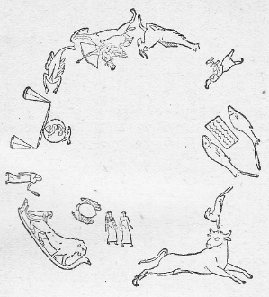
第七図 エジプトのデンデラー（Denderah）の獣帯。西暦紀元の初めごろのもの。
アリスタルコス（Aristarchos 紀元前約二七〇年生）は食の観測と、太陰がちょうどその半面を照らされているときのその位置とから太陽と太陰との大きさを定めた。しかして太陰の直径としては地球直径の〇・三三（正当の値は〇・二七であるから、〇・三三にかなり近い）を得たが、しかし太陽の直径としては一九・一を得た（実は一〇八であるからアリスタルコスのこの値は余り小さすぎる）。
アレキサンドリア学派とは密接な関係のあったアルキメデスがアリスタルコスに関してこういっている。『彼は恒星及び太陽を静止するものと考え、地球は太陽を中心とする円形の軌道に沿うて運行すると仮定している。』プルターク（Plutarch）の著として誤伝されている一書によると、アリスタルコスは、天を不動とし、地球はその軸のまわりに自転しつつ黄道に沿うて太陽の周囲を運行すると説いたというので、神を冒涜するものとしてギリシアで告訴されたとある。恒星は太陽からばく大な距離にあると考えられていて、この書には七八万スタディアとなっている。――一三万キロメートル、すなわち、地球半径の二〇倍に当り、これは全く事実に合わない（アレキサンドリアのヒッパルコス（Hipparchos）紀元前約一九〇―一二五年――は古代天文観測者中の最も優秀な者であったが、この人は太陰の距離をほぼ正しく地球半径の五九倍と出している）。そうしておもしろいことには太陽の距離の方はほとんど正しく八〇四〇〇万スタディア（一三四六六六〇〇〇キロメートルに当る、実際は一四九五〇万キロメートル）となっている。ヒッパルコスの方は地球半径の一二〇〇倍という、すなわち、ずっと不当な値を出しているのである。ポセイドニオスは水時計の助けを借りて太陽の直径を測り、角度にして二八分という値を得、それから長さに換算して地球半径の七〇倍を得ている。これはいくらかよく合っている方である。彼はまた太陰が潮汐の現象の原因であるということも説いているのである。
これらの記事を読んでみると、アレキサンドリアにおけるギリシア人の天文学がいかに程度の高いものであったかということに驚かざるを得ない。しかるに他の方面の科学、特に物理化学の方の知識は到底これとは比較にならない劣等なものであった。アリスタルコスはコペルニクスに先立つことほとんど二〇〇〇年にして既にいわゆるコペルニクス説の系統の基礎をおいたのであるが彼の考えはいったんすっかり忘れられてしまった。彼の同時代の人々は彼の宣言した偉大な真理を正当に了解することができなかったのである。その著書アルマゲスト（Almagest 紀元一三〇年ころの著）によって天文学方面での唯一の権威となっていた――また優れた光学者でもあった――プトレマイオス（Ptolem
us）は、これに反して、地球は太陽系の中心にあり諸遊星も太陽もまた太陰もこの中心の周囲をいわゆるエピチケル形軌道を描いて運行すると考えたのである（第六図）。その後ローマ帝政の抑圧が世界を支配するようになって、科学にも悪い影響を及ぼした。ローマ人らは科学に対して何らの正当な理解がなかった。――彼らの眼をつけたのはただ直接の実利だけであった。ランゲ（F. A. Lange）はその著マテリアリズムの歴史中に次のように述べている。『彼らの宗教は深く迷信に根ざしていた。彼らの全公生活は迷信的な方式で規約されていた。伝統的な習俗を頑固に保守するローマ人には、芸術や科学は感興を刺激することが少なかった。まして自然そのものの本質に深く立入るようなことはなおさらそうであった。彼らの生活のこの実用的な傾向はまたすべての方面にも及んだ。……初めてギリシア人と接触して以来、数世紀の後までも、国民性の相違から来る忌避の感情が持続していた。』しかしギリシア国土の征服後掠奪された貴重な芸術品や書籍がたくさんにローマへ輸入され、またそれらと一緒に、この戦敗者ではあるが文化の方でははるかに優れた国民の種が入り込んできた。ローマ人中にもまた精選された分子はあったので、それらの人々はこの自分らよりも優れた教養に心を引かれ、しかしてそれを自分のものにしようと勉め、また昔の先覚者に倣おうと努力した。その一例としてはルクレチウス（Lucrez 紀元前九九―五五年）の驚嘆すべき詩『物の本性』（De Rerum Natura）がある。彼はこの書中にエピキュリアン派（Epicur）の人生哲学と、エムペドクレス及びデモクリトスの宇宙観自然観を賛美し唱道している、その中に物質の磁性に関する記事解説もある。これに関する彼の知識は多分デモクリトスから得たものらしい。このように、ギリシアの哲学ことにかの巨匠デモクリトスの哲学を賛美していた美なるものの愛好者中には、ポセイドニオスの弟子であったキケロ（Cicero 紀元前一〇六―四三年）もいた。また兄の方のプリニウス（Plinius 紀元二三―七九年）やセネカ（Seneca 紀元一二―六六年）もいた。第六図 プトレマイオスの宇宙系
しかしこれらの人々も結局はただ師匠を模倣するに止まっていた。ローマ人らは自分らに独特なものは何も持出さなかった。自然科学的教養はただ薄い仮漆にすぎなかったのである。そうして国民の先導者らは文化に対する最も野蛮な暴行を犯した。たとえばシーザーはアレキサンドリア市を占領した後でそこの図書館を焼払った。彼の後継者たる代々の皇帝はひたすらに狂気じみた享楽欲に耽溺の度を深めていった。こうして自然の研究者らは次第に跡を絶ってゆくのであった。キリスト教徒らはまた一層自然科学に無関心であった。シーザーから三〇〇年後に彼らは大僧正テオフィロス（Theophilos）の指図によっていったん復興されていたアレキサンドリアの図書館を掠奪し、更に三〇〇年後にはアラビアの酋長カリフ・オマール（Chalif Omar）がこの図書館のわずかに残存していた物を灰燼に委してしまった。もっともアラビア人らは、後に彼らの文化が洗練されるようになってからは、科学に対する趣味を生じ、そうして特にアレキサンドリア学派の著述、もちろん断片のようなものではあったが、それを収集するようになった。しかしアラビア人一般の心情は、元来異教に対して容赦のなかった僧侶らのために大分違った方へ導かれていたために、決して科学向きにはなっていなかった。そうして聖典コーランこそ完全に誤りのない典拠だということになっていたのである。しかし本来から言えばマホメットの教えは科学に対して敵意をもたないはずのものである。すなわち、この預言者が弟子たちにこう言ったという話がある。『知識の学問が全く滅亡される日が来れば、そのときにこの世の最後の日が来るであろう。』ハルン・アル・ラシード（Harun al Raschid）は東ローマ皇帝に哲学書の下賜を願った。その望みは快く聞き届けられたのでこの賢明な君主はこれらの書をことごとく翻訳させ、特にそれを読むための役人を定め、また外に三〇〇人以上の人々を遊歴のために派遣して知識を四方に求めさせた。その子アブダラー・アル・マムン（Abdallah al Mamuu）は古典的の手写本を求めて、それを翻訳し、図書館や学校を創設して民衆の教養の普及に努めた。紀元八二七年にはまたアラビア湾に臨むシンガール（Singar）の砂漠で、子午線測量を行わせ、一度の長さがアラビアの里程で五六・七里に当るという結果を得ている。遺憾ながらアラビアの一里は四〇〇〇エルレに当るというだけで、それ以上のことが知られていない。この子午線測量は前に述べたものよりはずっと優れたものであったのかも知れない。またこれと同時に赤道に対する黄道の傾斜角を測定した結果が二八度三五分となっている。
当時の最も顕著な天文学者はシリアの代官を務めていたアルバタニ（Albatani 約紀元八五〇―九二九年）であった。彼は一年の長さを算定して三六五日と五時間四六分二二秒とした（これは二分二四秒だけ短すぎる）。また諸遊星を観測しその結果から計算してそれらの星の軌道に関する立派な表を作った。この人より少し後れてペルシアにアブド・アル・ラフマン・アル・スフィ（Abd-al-rahman Al-Sufi 紀元九〇三−九八六年）がいた。彼は一〇二二個の星のカタローグを編成したが、彼のこの表はかのプトレマイオスのものよりもずっと価値の高いものとされ、彼我ともに古代から伝わったものの中で最も良いものとされている。彼はまた今日のいわゆる
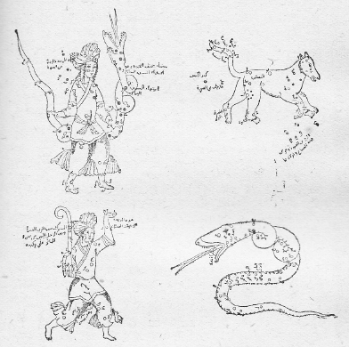
第八・九・十・及び第十一図
四つの星座図――蛇遣い、大熊、オリオン、龍――アル・スフィの恒星表による。
四つの星座図――蛇遣い、大熊、オリオン、龍――アル・スフィの恒星表による。
これよりも以前に、メソポタミア生れのジャファル・アル・ソフィ（Dschafar al Sofi 七〇二―七六五年）という人が、化学の学問を従来考え及ばなかった程度に進歩させていた。彼はセヴィリア（Sevilla）の高等学校の教師として働いていたのである。
アル・マムンの後約一〇〇年を経て、バクダットにおけるカリフの権勢が地に堕ちて、アラビア文化の本場はスペインのコルドヴァ（Cordova）に移った。ハーケム（Hakem）第二世はこの地に（多分誇張されたとは思われる報告によると）蔵書六〇万巻を算する図書館を設立したことになっている。この時代にかの偉大なアラビア人の天文学者イブン・ユニス（Ibn Junis）が活動していてこの人はガリレオより六〇〇年余の昔既に時間の測定に振子を使った。彼はまた非常に有名な天文学上の表を算出している。これとほとんど同時代にまたアルハーゼン（Alhazen）が光学に関する大著述を出しているが、これは彼の先進者らがこの学問に関して仕遂げたすべてを凌駕したものと言われている。
紀元一二三六年にコルドヴァはスペイン人に侵略され、この有名な図書館の蔵書は次第に散逸した。そうして、それまで幾多のキリスト教徒らがそこから科学的の教養を汲んでいたところの文化の源泉は枯渇してしまったのである。
現代の回教国民その他の東方諸国民は、個人または国家にとって何ら実益のありそうにもないことにはかなり無関心である。こういう環境では科学の進歩は不可能である。著しい一例としては、トルコの
）が、何か天界の驚異について彼に話したある西洋の天文学者に答えた言葉を挙げることができる。プロクトル（Proctor）に従えば、アリ・ザデは正にこう言ったそうである。『まあまあ、お前には何の係わりもない物を捜し求めるのは止したがよい。お前はよくこそ尋ねてきてくれた。が、もう平和に御帰りなさい。本当にいろいろのことを話してくれた。話す人は話す人で聞く人は聞く人で別々だから何も差支えないようなものであった。お前はお前の国の風習に従って、それからそれと遍歴しながらどこまで行っても結局得られぬ幸福で住みよい土地を求めて歩いているのだ。まあ、御聞きなさい。神の信仰に対抗するような学問など一体あるべきはずがない。神が世界を造ったのだ。その神と力比べしようとか天地創造の神秘をあばこうとか、そういうことをしていいものだろうか。この星は他の星の周囲を回るとか、かの星は尻尾を引いて動いていって、しかして何年経つとまた帰ってくるとか、そういうことを言っていいものかどうか。よしてもらいたい。星を造った神はまたそれを指導するのだ。私は神を賛美するだけだ。そうして自分に用のないものを得ようなどと努力はしない。お前はいろいろのことに通じているようだが、それはみんな私には何のかかわりもないことなのだ。』これが東洋人独特の根本原理である。幸いに我々西方国民はこれとは違った考えをもっているのである。しかし、古代科学の遺物を我々のために保存し伝えてくれた中世のアラビア人らが、これとはまた一種全く違った考えをもっていたということは、かの有名なイブン・アル・ハイタム（Ibn al Haitam これは前記アルハーゼンと同人である。アイルハルト・ウィーデマン Eilhard Wiedemann の研究によると、この人は日食の観測に
［＃改ページ］
ローマ人は科学に対して余り興味をもたなかったが、特に純理論的の諸問題に対してそうであった。彼らの仕事は主にギリシアの諸書の研究と注釈に限られていた。帝政時代の間に国民は急速に頽廃の道をたどったためにたださえ薄かった科学への興味はほとんど全く消滅した。それでローマ帝国の滅亡した際に征服者たるゲルマン民族の科学的興味を啓発するような成果の少なかったことは怪しむに足りない。それでもテオドリヒ王（K
nig Theodorich 四七五―五二六年）が科学を尊重しボエティウス（Bo thius）という学者としきりに交際したという話がある。カール大帝もまた事情の許す限りにおいて学術の奨励を勉めた。その時代に、フルダの有名な寺院にラバヌス・マウルス（Rhabanus Maurus 七八八―八五六年）という博学な僧侶がいて、一種の百科全書のようなものを書いている。これを見るとおよそ当時西欧における学問的教養の程度の概念が得られる。これは、すべての物体は原子からできていること、地は円板の形をして世界の中央に位し大洋によって取り囲まれていること、この中心点のまわりを天がそれ自身の軸で回転していることが書いてある。
thius）という学者としきりに交際したという話がある。カール大帝もまた事情の許す限りにおいて学術の奨励を勉めた。その時代に、フルダの有名な寺院にラバヌス・マウルス（Rhabanus Maurus 七八八―八五六年）という博学な僧侶がいて、一種の百科全書のようなものを書いている。これを見るとおよそ当時西欧における学問的教養の程度の概念が得られる。これは、すべての物体は原子からできていること、地は円板の形をして世界の中央に位し大洋によって取り囲まれていること、この中心点のまわりを天がそれ自身の軸で回転していることが書いてある。中世の僅少な学者の中で、特に当代に抜きんでたものとして、フランチスカーネル派の僧侶ロージャー・ベーコン（Roger Bacon 一二一四―一二九四年）を挙げることができる。彼は特に光学に関しては全く異常な知識をもっていて、既に望遠鏡の構造を予想していた。また珍しいほど偏見のない頭脳をもったドイツ人クサヌス（Cusanus トリール Trier の近くのクエス Cues で一四〇一年に生れ、トーディ Todi の大僧正になって一四六四年に死んだ）もまた当代に傑出した人であった。彼は、地は太陰よりは大きく太陽よりは小さい球形の天体で、自軸のまわりに回転し、自分では光らず、他の光を借りている、また空間中に静止してはいない、と説いている。彼は他の星にもまた生住者がいると考えた。物体は消滅することはない、ただその形態をいろいろ変えるだけであるとした。同様な考えはまたかの巨人的天才、レオナルド・ダ・ヴィンチ（Leonardo da Vinci 一四五二―一五一九年）も述べている。彼は、月から地球を見れば地球から月を見たとほぼ同じように見えるだろうということ、また地球は太陽の軌道の中心にもいないしまた宇宙の中心にもいないと言っている。レオナルド・ダ・ヴィンチは、地球は自軸のまわりに回転していると考えた。彼もまたニコラウス・クサヌスと同様に、地球も他の遊星とほぼ同種の物質から成立っており、アリストテレスやまたずっと後にティコ・ブラーヘに至ってもまだそう言っていたように、他の星よりも粗悪な素材でできているなどというようなことはないという意見であった。レオナルドは重力についてもかなりはっきりした観念をもっていた。彼は、もし地球が破裂して多数の断片に分れたとしても、それらの破片は再び重心に向かって落ちかかってくる、しかして重心の前後の往復振動をするが、たびたび衝突した後に結局は再び平衡状態に復するだろうと言っている。彼の巧妙な論述の中でも最も目立ったものはかの燃焼現象に関する理論である。その説によると、燃焼の際には空気が消費される。また燃焼を支持することのできないような気体中では動物は生きていられないというのである。レオナルドは非常に優れたエンジニアであって、特に治水工事に長じていた。彼の手になった運河工事は今でもなお存して驚嘆の的となっているものである。
彼はまた流体静力学、静力学、航空学、透視法、波動学、色彩論に関する驚嘆すべき理論的の研究を残している。その上に彼は古今を通じての最も偉大な画家であり、彫刻家であり、まだおまけに築城師であり、また最も優雅な著作者でもあった。
この有力な人物は中世の僧侶たちとは余りにも型のちがったものであった。当時既に時代は一新しており、すなわち、レオナルドの生れたときには既に印刷術が発明されており、コロンブスは既にアメリカを発見していた。復興期の新気運は力強くみなぎり始めていたのである。しかもまだ教会改革に対する反動が思想の自由を抑制するには至らなかった時代なので、クサヌスやダ・ヴィンチは自由に拘束なく意見を発表することができた。その学説というのは、およそアリスタルコス―コペルニクスの説と同じであったが、ただ地球が太陽のまわりを回るのではないとした点だけが違っていた。この二人の一人は大僧正になり、一人は最も有力な王侯の寵を受けた（彼は芸術の愛好者フランシス一世に招かれてフランスに行き、その国のアムボアズ Amboise で死んだ）。当時派手好きの法王たちはミラン、フェララ、ネープルス等、また特にフロレンスの事業好きな諸公侯と競争して芸術と科学の保護奨励に勉めていた。シキスツス第五世は壮麗なヴァチカン宮の図書館を建設し充実した。新興の機運は正に熟していて、同時に既に始まっていた彼の残忍な
us 約紀元二世紀）がその当時の天文学上の成果を記した著述を研究し、また自分でも観測を行った結果として、彼一流の系統（第一二図）を一つの仮説として構成した。この説を記述した著書は彼の死んだ年に発行されている。死んだおかげで彼は彼の熱心な信奉者ジョルダノ・ブルノ（Giordano Bruno イタリアのノラ Nola で生れたドミニカン僧侶）のような運命に遭うのを免れることができた。このブルノはその信条のために国を追われ、欧州の顕著な国々を遊歴しながらコペルニクスの説を弁護して歩いた。しかして、恒星もそれぞれ太陽と同様なもので、地球と同様な生住者のある遊星で囲まれていると説いた。彼はまた、太陽以外の星が自然と人間に大いなる影響を及ぼすというような、科学の発展に有害な占星学上の迷信に対しても痛烈な攻撃を加えた。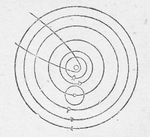
第十二図 コペルニクスの太陽系図。彗星の軌道をも示す。現時の知識に相当する第十三図と比較せよ。

第十三図 諸遊星とその衛星の運動方向を示す。太陽中心の北側の遠距離から見た形。真ん中が太陽、次が水星（Me）と金星（V）、それから地球（T）とその衛星（L）、その外側には火星（Ms）と二衛星、次には木星（J）とガリレオの発見した四衛星がある。近代になってから木星を巡る小衛星が更に三つ発見された。すべてこれらの天体は一番外側のものを除いては矢の示すように右旋すなわち時計の針と反対に回っている。一番外側に示すのは土星（S）でこれは九つの右旋する衛星――図にはただ一つを示す――と逆旋する一つの衛星、それはピッケリングの1898年の発見にかかるフォエベ（Phoebe）がいる。なおこの外にはハーシェルとルヴェリエとの発見した天王星と海王星がある。この二星の太陽からの距離は土星までの距離の約二倍と、三倍余とである。天王星には四つの衛星があるが、その軌道は黄道面にほとんど直角をなしている。その上に逆旋である。海王星には逆旋の衛星が一つある。天王、海王二遊星は右旋である。また火星と木星の軌道間にある多数の小遊星もやはり右旋である。
彼は、諸天体は無限に広がる透明なる流体エーテルの海の中に浮んでいると説いた。この説のために、またモーゼの行った奇蹟も実はただ自然の法則によったにすぎないと主張したために、とうとうヴェニスで捕縛せられ、ローマの宗教裁判に引き渡された上、そこでついに焚殺の刑を宣告された。刑の執行されたのはブルノが五二歳の春二月の一七日であった。当時アテンにおけると同じような精神がローマを支配していて、しかもそれが一層粗暴で残忍であったのである。要するにブルノの仕事の眼目はアリストテレスの哲学が科学的観照に及ぼす有害な影響を打破するというのであった。
宗教裁判の犠牲となって尊い血を流したのはこれが最後であって、これをもって旧時代の幕は下ろされたと言ってもよい。ケプラーまた特にガリレオの諸発見によって我々の知識は古代とは到底比較にならないほど本質的に重要な進歩を遂げるに至ったのである。
通例コペルニクスの考えは古代における先輩の考えとは全く独立なものであったように伝えられているが、これが間違いだということは、彼自身に次のように述べているのでも明らかである。すなわち、『私は
コペルニクスの死後間もなくティコ・ブラーヘ（Tycho Brahe）がショーネン（Schonen）の地に生れた。彼は若いときから非常な熱心をもって天文学を勉強していたが、あるとき日食皆既に遭って深い印象を受けたために更に熱心の度を加えるようになった。しかして多数の非常に綿密な測定を行った（主にフウェン Hven 島のウラニーンブルク Uranienburg の観測所で）。この測定はまた後日彼の共同研究者であったケプラー（Kepler）の観測の基礎を成したもので、また後世ベッセル（Bessel）をしてティコ・ブラーヘを『天文学者の王』と名付けさせた所以である。ティコはもう一遍地球を我々の遊星系の中心点へ引き戻した。しかして地球の周囲を太陽太陰が回るとし、また後には諸遊星も同様であると考え、恒星は緩やかに回る球形の殻に固着されているものと考え、そうして地球は二四時間に一回転すると考えたのである。このティコがいかに当時行われていた謬見にとらわれていたかということは、彼が人と決闘して鼻の尖端を切り落されたときに、これは彼の生れどきに星がこうなるべき運命を予言していたからだといってあきらめてしまったという一事からでも明らかである。また地球は恒星や諸遊星よりももっと粗大な物質からできている、そのために遊星系の中心に位しなければならないというその説もまた彼の考え方に特異な点である。しかし、コペルニクス系が、既に当時でも、ティコ・ブラーヘのそれに比して明らかに優っているものと考えられたことは、デカルトが特に力を入れて強調している通り『この方が著しく簡単で、また明瞭である』からである。いかに優れた観測の天才をもっていかに骨を折ってみても、理論上の問題に対して明晰で偏見なき洞察力が伴わなければ、比較的つまらない結果しか得られないものだということは、このティコが一つの適例を示すであろう。ティコは一六〇一年にプラーグで没した。
ティコ・ブラーヘはあらゆる先入謬見を執拗に固執しながら、また一方先入にとらわれない批判的検索を行うという、実に不思議な取り合わせを示している。惜しいことに彼の方法は古代バビロニア人の方法に類していて、結局古い不精密な観測を新しい未曾有の精密なもので置き換えたというだけで、それから何ら理論上の結論をも引き出さないで、それ切りになってしまったのである。彼はコペンハーゲン大学における彼の大演説の中で占星術に関する意見を述べているが、これは古代バビロニア流の占星術の面影を最も明瞭に伝えるものであり、我々には珍しくもまた不思議に思われるものであるから、有名なデンマークの史家トロェルス・ルンド（Troels Lund）の記すところによってここにその演説の一部の抜粋を試みようと思う。
ティコはこう言った。『星の影響を否定する者はまた神の全知と摂理を抗議するものでもあり、また最も明白な経験を否認するものである。神がこの燦然たる星辰に飾られた驚嘆すべき天界の精巧な仕掛けを全く何の役に立てる目的もなしに造ったと考えるのは実に不条理なことである。いかに愚鈍な人間のすることでも何かしら一つの目的はあるのである。これに対してある人は、天界はただ年月を知らせる時計にすぎないと答えるかもしれない。しかしそれだけならば太陽と太陰とだけあればたくさんである。それならば一体いかなる目的のために他の五つの遊星が各自別々の圏内に動いているのであろうか。歩みの遅い土星は一周に三〇年を要し、かの光り瞬く木星の軌道は一二年を要する。また二年を要する火星水星、それから太陽の侍女としてあるときは宵の明星あるときは暁の明星として輝くかの美しい金星などは何のためであるか。その上にまだ恒星の天圏が八つもあるのは何のためであろうか。またこれらの無数の恒星の中で最小なものでもその大きさは地球の若干倍、大きいものはその一〇〇倍以上もあることを忘れてはならない。しかもこれが何の考えも何の目的もなく神によって創造されたというのであるか。』
『諸天体はそれぞれある力の作用をもち、それを地球に及ぼしているということは、経験によって実証される。すなわち、太陽は四季の循環を生じる。太陰の盈虚に伴って動物の脳味噌、骨や樹の髄、蟹や蝸牛の肉が消長する。太陰は不可抗な力をもって潮汐の波を起こすが、太陽がこれを助長するときは増大し、これが反対に働くときはその力を弱められる。
『さて、星は人間にもまた直接の影響を及ぼすものであろうか。これはもちろんのことである。人間の体躯はかの四元素から組成されたものだから当然のことである。一人の人間の本質中に火熱性の元素、寒冷性、乾燥性、湿潤性等の元素がいかに混合されているか、その程度の差によってその人の情操、根性が定まり、また罹りやすい病もきまり、生死も定まるのである。このいろいろな混合の仕方は、出生の瞬間における諸星の位置によってその子供の上に印銘されるもので、一生の間変えることのできぬものである。子供の栄養と発育によって成熟はするが改造はできない。ある混合の仕方では生活が不可能になるような場合さえもある。そういう場合には子供は死んで産まれる。たとえば、太陰と太陽の位置が不利で、火星が昇りかけており、土星が十二獣帯の第八宮に坐するという場合には、子供はほとんどきまって死産である。一般に、太陽と太陰の合の場合、ことに太陰が太陽に近よりつつあるときに生れた子は虚弱で短命である。この厄運は他の星の有利な位置によって幾分か緩和されることはあるが、結局は必ず良くないにきまっている。このことは一般に周知のことであって既にアリストテレスが、太陽太陰の合に際して生れた者の身体は虚弱だと言っているのみならず、経験のある産婆や母親は、こういう場合に子供が生れると、その子の将来必ず虚弱であることを予想して不安な想いをするのである。この理由は容易に了解される。すなわち、人の知る通り、太陰はある異常な力をもっていて、生れた子供の体内の液体を支配する。それでもし太陰が生れたものの身体にその光を注いでやらないとその体内の液体が全く干上ってしまわなければならない。そうして多血性の性情とその良い効果はほとんど失われてしまわなければならないということは明らかである。またこの結果としてはいろいろの病気、たとえば
『身体の各部分は一つ一つ特別な遊星に相応していて、たとえば温熱の源たる心臓は太陽に相応し、脳は太陰に、肝臓は木星に、腎臓は金星に、また黒い胆汁を蔵する脾臓は憂鬱の支配たる土星に、胆嚢は火星に、肺臓は水星に相応している。』
ティコ・ブラーヘは占星術の反対者に対して最期まで闘った。『これらの人々、特に神学者や哲学者らを寛恕すべき点があるとすれば、それは彼らがこの術（占星）について絶対に無知識であるということと、彼らが常識的な健全なる判断力を欠いていることである』と言っている。
以上は、中世を通じて行われ、ごく近いころまでもなお折々行われてきた目的論的の見方を筋道とした論法の好適例である。
ティコの観測の結果から正しい結論を引き出す使命はケプラー（Kepler 一五七一―一六三〇年）のために保留されていた。彼は諸遊星は各々楕円を描いて太陽の周囲を運行することを証明し、またその速度と太陽よりの距離との関係を示す法則を決定した。彼は初め当時全盛のワルレンスタインのためにその運勢を占う占星図を作製したのであるが（第十四図）、後にはついに占星学上の計算をすることを謝絶するに至ったということはケプラーのために特筆すべき事実である。それにかかわらず一方ではまた彼は自分の子供らの運勢をその生誕時の星宿の位置によって読み取ろうとしているのである。ケプラーの家族はプロテスタントの信徒であったためにいろいろの煩累に悩まされなければならなかった。
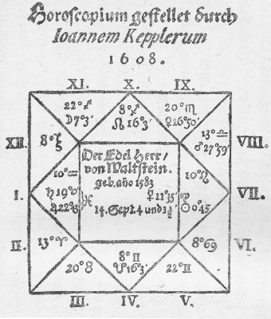
第十四図 ケプラーの作ったワルレンスタインの運勢を占う占星図。
ケプラーの研究によって、天文学はアリスタルコス以来初めての目立った一大進歩を遂げたが、これは更にまたかの偉大なガリレオ（Galilei 一五六四―一六四二年）の諸発見によってその基礎を堅めるようになった。ガリレオはケプラーと文通していたのであるが、一五九七年のある手紙に自分は永い以前からコペルニクスの所説の賛成者であるということを書いている。一六〇四年に彼はオランダで発明された望遠鏡の話を聞き込んだ。そうして自分でそれを一本作り上げ、当時の有力な人々から多大な賞賛を受けた。そこでこの器械を以て天界を隈なく捜索して、肉眼では見られない星を多数に見付け出した。これで覗くと遊星は光った円板のように見えた。一六一〇年には木星を観測してこの遊星の衛星中の最大なもの四個を発見した。そうしてあたかも遊星が太陽を回ると同様な関係に、木星に近い衛星ほど回転速度が大きいことを見た。彼はこれらの衛星をトスカナ（Toscana）に君臨していた侯爵家の名に因んで『メディチ（Medici）の星』と名づけたのであるが、この衛星の運動の仕方が正しくコペルニクスの所説の重要なる証拠となることを認めた。彼はまた土星の形がときによって変化すること（この星を取巻く輪の位置による変化）、また金星（水星も同様であるが）が太陰と同様に鎌の形に見えることをも発見した。また太陽の黒点をも発見し（一六一一年）そうしてその運動の具合から、太陽もまた自軸のまわりに自転するものであると結論した。これらの発見は当時僧侶学校で教えられていたようなアリストテレスの学説とはすべて甚だしく相反するものであった。それでガリレオはローマへ行って親しく相手を説き付けるのが得策であると考えた。ところが相手の方では科学上の論議では勝てないものだから、ガリレオの説は犯すべからざる聖書の教えと矛盾するものだという一点張りで反対した。
ガリレオが公然とコペルニクスの信奉者であるということを告白しているのは太陽黒点のことを書いた一書において初めて（一六一三年）見られる。教会方面の権威者らも初めのうちは敢て彼に拘束を加えるようなことはなかったが、一六一四年に至って『神聖会議』の決議により、地球が公転自転と二様の運動をするというコペルニクスの説は聖書の記すところと撞着するということになった。もっともこのコペルニクスの説を一つの仮説として述べ、それを科学上の推論に応用するだけならば差支えはないが、しかしそれを真理と名付けることは禁ずるというのであった。
今日から考えるとこういうことは想像もし難いようであるが、その当時ではこれは全く普通のことであった。自分の主張していることを自分で信じているのではないとごく簡単に証言すればよいのであった。しかし実際は信じているのだということは誰でも知っていたのである。最も著しい例は、三〇年後（一六四四年）にデカルト（Descartes 一五九六―一六五〇年）が次のような宣言をしていることである。『世界が初めから全く完成した姿で創造されたということには少しも疑わない。太陽、地球、太陰及び諸星もそのときに成立し、また地上には植物の種子のみならず植物自身ができ、またアダムとイヴも子供として生れたのではなく、成長した大人として創造されたに相違はない。実際キリスト教の信仰はそう我々に教え、また我々の自然の常識からも容易に納得されるのである。しかし、それにもかかわらず、植物や人間の本性を正当に理解しようとするには、これらが最初から神の手で創造されたと考えてしまうよりも、種子からだんだんに発育してきたと考えてその発達の筋道を考察して見る方がはるかに有益で便利である。それで、もちろん実際は万物は上に述べたようにして成立したものだということをちゃんと承知しているとして、もし若干のごく簡単で分りやすい原理を考え出し、その助けによって星や地球やその他この世界で見られる万物が、すべて種子から発育してできたかも知れないということを示すことができたとしたならば、その方が、これら万物をただあるがままに記載するよりもはるかによく了解することができるだろう。今私はそういう原理を見付けたと信じるから、ここで簡単にそれを述べようと思う。』
当時の宗教裁判は蚤取眼で新思想や学説が正統の教理と撞着する点を捜し出そうとしていたから、その危険な陥穽を避ける必要上から、こういう不思議な態度をとるのもやむを得なかったのである。それでガリレオも七年間はおとなしくいたが、しかしとうとうジェシュイット教父のグラッシ（Grassi）と学説上の論争に引っかかった。グラッシはちゃんと正当に彗星を天体であると考えていたのに、ガリレオの方はこれが地上のものだという旧来の考えを守っていたのである。それでついにジェシュイット教徒はガリレオを告訴するに至ったので、彼は一六三三年に老齢と病気のために衰弱していたにかかわらずローマへ召喚され、宗教裁判の訊問に答えなければならなかった。彼はできる限り論争を避けようと務めたが結局やはり不名誉な禁錮の刑を宣告され、その上に地動説の否定を誓わさせられた。しかしてそれ以来、太陽系中における地球の位置に関するコペルニクス、ケプラー及びガリレオの著書は最高神聖の法門の権威によって禁制され、それが実に一八三五年までつづいたのである。
ガリレオはその著書の中でピタゴラス及びアリスタルコスが地球は太陽のまわりを回ると説いたことを引用している。彼は物体の運動に関する学説を発展させ、物体に力が働けばその運動に変化を生ずることを立証した。何らの力も働かなければ運動は何らの変化もなく持続するというのである。アリストテレスは墜落しつつある物体の背後には空気が押し込んできて物体の運動を早めると考えたが、ガリレオはこれに反して、空気はただ落体運動を妨げるだけだということを証明した。
コペルニクスの学説に対する教会の反抗はしかし結局は無効であった。デカルトは一刻も狐疑することなくコペルニクスの考えに賛成した。もちろんそのために彼は敵を得たが、しかし新教国たるオランダ及びスウェーデンに安全な逃げ場所を見出した。惜しいことには彼はスウェーデンへ来ると間もなく罹った病気のために倒れたのであった。コペルニクスの説いた通りすべての遊星は、太陽の北極の方から見ると右から左へ回っている。それと同様にまた太陰は地球を、ガリレオの発見した木星の衛星は木星を、また太陽黒点は太陽を回っている。その上にまたこれらのものはほとんど皆黄道の平面の上で回っている。この規則正しさを説明するためにデカルトは、ブルノと同様に、一種のエーテルの海を想像し、その中に諸遊星が浮んでいると考えた。デカルトはこのエーテルが太陽を中心としてそのまわりに渦巻のような運動をしており、そして諸遊星はこの運動に巻き込まれて、ちょうど枯葉が渦に巻かれて回るように回っているのだと信じていた。この考えは、諸遊星を神性あるものによってその軌道の上を動かされているというケプラーの考えに比べれば疑いもなくはるかに優れたものである。彗星は遊星とは違った運動をするが、これについてのデカルトの説は、これらもやはり天体であって、土星よりも外側を運行しているものだというのである。ところがティコ・ブラーヘは、彼の観測の証するところでは彗星は太陰軌道の外側を動きはするがしかし時々は金星や水星よりも遠くない距離に来ることがあると言っている。これについてデカルトは、ティコのこの観測はそういう結論をしてもいいほどに精確なものではなかったと主張している。
デカルトはモルス（Morus）への手紙の中でこう言っている。『我々は宇宙に限界があるということを観念の上で了解することができないから、宇宙の広がりは無限大だと言う。しかし空間の無限ということから時の無限ということの推論はできない。宇宙に終局があってはならないとしても神学者らはそれが無限の昔に成立したとは主張していない。』宇宙は物質を以て充たされている。それゆえにすべてのものは円形の環状軌道の上を運行しなければならない。神は物質とその運動とを創造した。宇宙には三つの元素がある。その第一は光の元素でこれから太陽と恒星が作られた。第二は透明な元素でこれから天が作られた。第三は暗く不透明でしかして光を反射する元素で、遊星や彗星はこれからできている。第一の元素は最小な粒子から、第三のものは最も粗大な分子からできている。
初めには物質はできるだけ均等に広がっていた。それが運動するためにいくつかの中心のまわりに環状軌道を描くようになり、その中心には発光物質が集まり、そのまわりを上記の第二第三の物質が旋転するようになった。それらの暗黒な物体の中で若干のものは運動が烈しく質量が大きくてこの旋渦の中心から非常に遠く離れてしまって、そのためにいかなる力もそれを控えることができなくなってしまった。こういうものが一つの渦から他の渦へと移ってゆく、これがすなわち、彗星である。これよりも質量が小さくまた速度の小さいもののうちで、同様な遠心力を有するものが一群となって、それが前記の第二の要素の一つとなった（この中で質量の最小な群が一番内側へ来た）。これがすなわち、遊星である。これら遊星の運動とはちがった運動をする物質粒の運動のために、遊星は西から東へ回るような回転運動を得た。
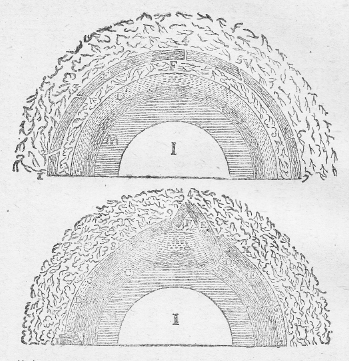
第十五図及び第十六図 デカルトによる、地球半球の横断様式図。Ｉは地心で太陽と同じ物質でできている。初め地球は全部この物質でできていた。この物質の周囲を包んで太陽黒点に相当する。しかしもっと厚い殻Ｍがある。これができたために地球は光らなくなって一つの遊星となり太陽系旋渦に巻き込まれた。日光の作用によって空気Ｆと水Ｄとが分れ、最後には空気の中に石、土、砂等の固形の皮殻Ｅを析出した。これが現在の地殻である。この殻が図の２、３、４のようなところで破れて落ち込み、しかして下の図にあるような状態になった。それで水がしみ出して図の右と左の部分に示すように大洋を生じた。他のところでは１や４の示すように山岳を生じた。空気の一部分は山と地殻の下（たとえば図のＦ）に閉じ込められた。
最小な粒子の運動によって熱が生ずる。それは、一部は、日光がこの物質粒子に衝突するために生じ、また一部は、他の方法でもできる。この熱は我々の感覚に作用する。太陽や恒星に黒点が増すとその光は暗くなり、反対にこの黒点が消えると明るくなる。黒点の強さが消長すると一つの星の光力は減ったり増したりする、というのである。この、種々の星の光力の変化に対する説明は、ごく最近まで多数の天文学者によってそのままに受継がれてきたものである。
ときにはまた一つの恒星の周囲を回る上記第二種及び第一種の粒子から成る旋渦が、その近くにある他のいくつかの渦に吸込まれることがある。そのときにはこの渦の中心の恒星も一緒にもぎ取られて他のどれかの渦に引き込まれ、その中の彗星かあるいは遊星となるのである。
デカルトは、このように恒星から遊星に変る過渡の段階については、地球に関する記載中にこれよりも一層詳しく述べている。すなわち、地球も初めには第一種の元素からできていて、強大な渦に取り巻かれた太陽のようなものであったのが、だんだんに黒点に覆われ、それが一つに繋がって一種の皮殻となった。それで地球の灼熱した表面が冷却すると、もう渦の外の方の部分へ粒子を送り出すことができなくなるので、従ってこの渦動が次第に衰える。すると今までは灼熱した地球から出る粒子のために押戻されていた近所の他の渦からの粒子が押寄せてくる。そのために、この光の消えた地球は近所の太陽旋渦の中へ引込まれ、そうして一つの遊星になったのである。地球の心核はしかし灼熱状態を持続しながら第三種の粒子から成る固形の殻で包まれている。この殻の中には気層と水層とがありその上を固体の地殻が覆っている（第十五図及び第十六図）。この殻がしばしば破れて下の水層中に落ち込み、そのために水が地表に表われて大洋を作り、また破れた殻が山岳を生じる。水は脈管のように固体地殻の中を流動しているというのである。この考えは後にまた幾分敷衍された形でバーネット（Burnet）が説述した（一六八一年）ものである。
これが宇宙系に関するデカルトの考え方の大要である。諸恒星は我々の太陽系を取り巻く諸渦動のそれぞれの中心であるが、その距離が莫大であるために、それが運動していても、地球に対する位置は変るように見えないのである。
当時化学の進歩はまだ極めて幼稚なものであった。物体の種々な性質はそれを構成する最小粒子の形状によるものと信じられていた。デカルトはこれら粒子が大きいか小さいか、軽いか重いか丸いか角張っているか、卵形か円形か、あるいはまた分岐しているか平坦であるかによって、どういうふうに物の性質の相違が起るかということを、真に哲学者らしく徹底的細密に記述しているが、こういう事柄の煩わしい記述のために、せっかく彼の構成した系統の明瞭さがかえって著しく弱められているのである。
ニュートン（Newton）と同時代の偉人で、また彼の競争者であったライブニッツ（Leibniz 一六四六―一七一六年）は当時の科学雑誌『アクタ・エルディトルム』（Acta Eruditorum）誌上で一六八三年に発表した論文『プロトガィア』（Protogaea）中に地球の進化を論じているが、その所説は現今定説と考えられているものとかなりに一致している。当時一般に信ぜられていたところでは、既に昔の北国民の考えていたと同様に、地球はその最後の日には灼熱状態となって滅亡するだろうということになっていた。多分太陽が他の天体と衝突でもすればそうなるであろうと思われるのである。ところが、ライブニッツはデカルトと同様に地球の初期もまた強く灼熱された状態にあったと考えた。これが――ライブニッツの言葉によれば――燃料の欠乏のために消燼して地球はガラス状の皮殻で覆われ、そうしてそれまで蒸発していた水はその後にようやく凝結して海となった。このガラスのような皮殻から砂ができた。しかして――水と塩類との作用を受けて――その他の地層ができた。海は初め全地球を覆っていたから今日至る所で古昔の貝殻が発見される。地殻の陥落のために表面の高低ができて、その最も低い部分を大洋が占めることになったのである。
有名なデンマーク人ステノ（Steno 一六三一―一六八六年）の業績は、いったん世人から忘れられていたのを、一八三一年に至って初めてエリー・ド・ボーモン（Elie de Beaumont）によって紹介された。このステノの意見によると、水平な地層、特に水産動物の化石を含有するものは、もと水中で沈積したものと考えられなければならない。こういう地層がしばしばもとの水平な位置から隆起しているところから見ると、これは何か外力の作用によって起ったことに相違ない。ステノはその外力のうちでもなかんずく火山作用が最も著しい役目をつとめたものと考えた。
当時一般の考えでは地球の内部は水をもって満たされ、それが脈管を通じて大洋と連絡していると思われていた。デカルトの説の中にも既にそういう意味のことが暗示されている。この誤った考えの著しい代表者はウドワード（Woodward 一六六五―一七二二年）とウルバン・ヒエルネ（Urban Hj
rne 一七一二年）であった。この後者の説では地心の水は濃厚で濁っていて、しかして沸騰するほど熱いということになっている。デカルトの考えは当代から非常な驚嘆をもって迎えられた。そして諸大学におけるアリストテレスの哲学に取って代ろうとする形勢を示した。この説はまたウプザラにおいても盛んな論争を惹起し、それが多分スウェーデンで科学の勃興を促す動機となったようである。宗教方面の人々はこの新説を教壇で宣伝することを妨圧しようと努めたが、これに対する政府の承認を得ることができなかった。
このデカルトの学説から強い刺激を受けた若い人々の中に、スウェデンボルク（Swedenborg）がいた。彼はデカルトの宇宙生成説にある変更を加えた。彼の説では太陽系のみならず原子までも、すべてのものが渦動からできているとする。万物はすべて唯一の様式に従って構成されているのであって、最も簡単な物質粒子は非物質的な点の渦動によって成立すると考えるのである。この考えは甚だ薄弱である。なぜかといえば、広がりをもたない一つの点がたとえどれほど急速に渦動をしても、それによっていくらかの空間を占有することはできないからである。スウェデンボルクは恐らくこの仮説によって、宇宙が虚無から成立したことを説明しようと試みたものらしい。彼は数学的の点は永劫の［＃「永劫の」は底本では「永却の」］昔から存在しているという意味のことをしばしば言っているが、しかしこの点について徹底的に一貫してはいないで、ある箇所ではまたこれが創造されたものだとも言っているのである。スウェデンボルクの宇宙生成説がデカルトのと異なる主要な点は、遊星が外から太陽系の渦動中に迷い込んだものだとしないで、反対に太陽から放出されたものだとしたことである。スウェデンボルクの想像したところでは、太陽黒点がだんだんに増してついには太陽の光っている表面全体を暗くしてしまった。中に閉込められた火は膨張しようとして周囲の外殻を伸張したためについに殻が破れた。そうしてこの暗黒な外皮が太陽赤道のまわりに環状をなして集まった。渦動は止みなく旋転を続けているうちにこの固態の輪は破れて小片となり、それらが円く丸められて各々球形の質塊となり、種々の遊星、衛星（並びに太陽黒点）となったものである。このようにして一つの太陽がその殻を破裂させるとこれが急に我々の眼に見えるようになる。これがいわゆる『新星』の出現に相当するものであるとスウェデンボルクは考えた。
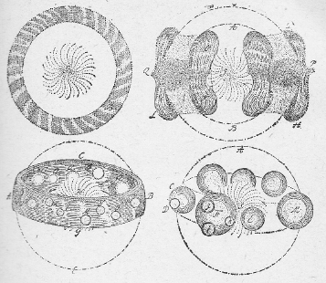
第十七、十八、十九及び第二十図 スウェデンボルクの考えた、太陽旋渦から遊星系の生成。第十七図Ｓは太陽旋渦、ＡＢＣはそれを囲む球状の固形皮殻。これが破れて（十八図）渦の極からそれの赤道の方に落ちて赤道のまわりに一つの帯を作る（十九図）。ＯＩＫＬＭ等は太陽物質より成る。最後にこの帯が破れてその部分から球状の遊星ＣＦＭ等また衛星Ｄｇｈｋができる。遊星はＳのまわりの渦動につれて旋転しているうちにあるところまで来ると周囲と均衡の位置に達する。
遊星や衛星は渦動につれて動いているうちにある位置に達するとその周囲を包んで回っているエーテルと釣合いの状態になる。ここまで来ると、この距離でほとんど円形の軌道を描きながら運行する。この関係はあたかも、空気中を上昇する軽い物体が、その周囲が自分と同じ比重であるようなところへ来て初めて落ち付くのと全く同様である。それでスウェデンボルクの考えに従えば一番比重の大きい遊星が一番内側に来るわけであるが、デカルトの考えだと最大質量を有する遊星が一番外側に来ることになるのである。
この二人の考えは、いずれも、いくらかはあたっているが、しかし全く正しくはないということは次の表（アメリカ人シー See の計算による）を見れば分る。
天体 半径 質量 平均距離 比重
太陽 109.100 332750.0000 0.00 0.256
水星 0.341 0.0224 0.39 0.564
金星 0.955 0.8150 0.72 0.936
地球 1.000 1.0000 1.00 1.000
太陰 0.273 0.0123 1.00 0.604
火星 0.536 0.1080 1.52 0.729
木星 11.130 317.7000 5.20 0.230
土星 9.350 95.1000 9.55 0.116
天王星 3.350 14.6000 19.22 0.390
海王星 3.430 17.2000 30.12 0.430
太陽 109.100 332750.0000 0.00 0.256
水星 0.341 0.0224 0.39 0.564
金星 0.955 0.8150 0.72 0.936
地球 1.000 1.0000 1.00 1.000
太陰 0.273 0.0123 1.00 0.604
火星 0.536 0.1080 1.52 0.729
木星 11.130 317.7000 5.20 0.230
土星 9.350 95.1000 9.55 0.116
天王星 3.350 14.6000 19.22 0.390
海王星 3.430 17.2000 30.12 0.430
スウェデンボルクの著述中には概して我々今日の科学者には諒解し難いような晦渋曖昧な点が甚だ多い。彼は自分の書いていることを十分によく考え尽くしたのではあるまいという感じを読者に起させるのである。彼の『プリンキピア』（Principia）の終りにはこの渦動を数学的に表象している――すなわち、ここでは完全な明瞭を期待してもいいはずである。この渦の外側には自ら他の渦と区別するに足るべき判然たる境界があることになっている。ところで、スウェデンボルクは、この渦の外側の境界からの距離が１と２の比にあるような二つの遊星の速度の比は１と２でなければならない、と主張している。これから推論すると、遊星を中心に引く力は、この渦の外郭から遊星への距離に正比例し、太陽から遊星への距離に反比例することになる。しかしこの力は正しくニュートンの導いた通り太陽から遊星への距離の自乗に反比することいわゆる重力であるべきであって、すなわち、スウェデンボルクの所説は全く事実に合わないのである。しかしスウェデンボルクはニュートンの仕事を良く承知していたはずで、自著の中の所々で彼に対する賛美の辞を述べ『いくら褒めても褒め足りない』と言っている。それでスウェデンボルクは自説と、一般によく事実に相当するものと認められたニュートンの説との折合をつけるために、こう言っている。すなわち、この渦動が渦の外縁の方に行くほど増加するものとすれば、ちょうどニュートンの説のようになるというのである。しかしこれではニュートンの法則に従う遊星の運動とは全く合わないし、要するに全く不可解である。
スウェデンボルクの著書中に暗示されているところによると、彼の考えでは、銀河が眼に見える星の世界に対する役目は、あたかも太陽の回転軸が遊星系に対するのと同様である。従って数多の太陽は各自の遊星系を従えてこの銀河の真ん中を貫く大宇宙軸のまわりに群を成している。それで銀河は実は輪状であるがちょうど天上に半円形の帯のように見えることになる。このようにして、スウェデンボルクの考えたように、この銀河系をその唯一小部分とするような更に大なる系を考えることができるのである。後にライト（Wright）がまたこれと同様な考えをまとめ上げた（一七五〇年）。彼は多分スウェデンボルクの考えの筋道は知らなかったらしいが、銀河を太陽系に相当するものだと考えた。カント（Kant 一七五五年）も同様であったが、ライトの所説以上には大した新しいものは付加えなかった。またラムベール（Lambert）も同様であったが、彼は太陽がいくつも集まって星団となり、星団が集まって銀河その他になると考えた（一七六一年）。
そこで我々は、スウェデンボルクがニュートンを賛美しながら、なにゆえに彼の驚天動地の発見を自分の体系中に取り入れなかったかを疑わなければならない。これに対する答はこうである。すなわち、スウェデンボルクの頭には、宇宙間の万物は、大きいものも小さいものも、すべて画一的な設計に従って造られたものだという考えがすっかりしみ亘っていた。彼には天体相互の間に距離を隔てて働く作用を考えることは明らかに不可能だとしか思われなかった。それは、我々はどこでもそういう作用を経験しないからである。実際この点についての論難は種々の方面からニュートンの大発見に対して向けられ、ニュートン自身もまたそれに対して全く無関心ではなかったのである。そこでスウェデンボルクはデカルトの渦動説を取って自分の宇宙生成説の基礎としたのであるが、スウェデンボルクは自分の仮定が物理学的に不可能なこと、特にそれがニュートンの法則と全然相容れないものだということには少しも気が付かなかったように見える。これは実にスウェデンボルクの体系の重大な欠点であるが、しかし彼のこの体系の中には若干の健全な考えが含まれていて、これが後日他の人によって敷衍され発展されるようになったのである。
その中で特に著しいものは、遊星の生成は太陽に因るものであり、従って遊星は本来から太陽系に属するものだという仮定である。この考えは通例はカントのだとされているものである。しかしまた銀河は一つの大きな恒星系だという考えも、スウェデンボルク自身はわずかしか発展はさせなかったけれども、これもかなりに価値のあるものである。彼の考えの筋道の中で独特な点は、我々の太陽の近くに存する多くの太陽系の軸はすべてほとんど同じ方向を指していなければならない、としたことである。しかしこの方向が銀河の軸と並行でなければならないとしたのは必ずしも事実と合わない。それでも近ごろボーリン（Bohlin）の研究によると、我々に近い二重星の軌道面や、最大の（すなわち、最も近い）星雲の平均の平面が黄道とほぼ並行しているということが、ある度までは確からしい。ライト及びラムベールの考えたように銀河系の諸太陽についてもまた同様な規則正しさが存すると期待してもよいかも知れない。
ピタゴラスは彼の弟子たちに対して、他の遊星にもまた地球と同様に生息者がいると言明したと伝えられている。吾人の地球は宇宙の中心点ではないとするコペルニクスの学説が一般に承認されるようになってからは、当然の結果として他の世界もまた我々のと同様に生息者を有すると見なされるようになった。
ジョルダノ・ブルノもまたこの説を熱心に唱道した。この説は当時の神学者から見ると非常な危険思想であってその罪を贖うにはただ焚殺の刑あるのみと考えられたのである。ガリレオ及び他のコペルニクス説の［＃「コペルニクス説の」は底本では「コペルニスク説の」］信奉者等に対して教会を激昂させたものもやはり疑いもなく主として正にこの説のこの帰結であったのである。それにかかわらず、この説が普及してしまったころには、今度はまた反対の極端に走ってしまって、すべての天体には生物がいると考えられるようになった。そうしてそれら天体の上で物理的条件がはたして生物の生存に適するかどうかを深く追究しようとはしなかった。当時月の世界の住民に関するいろいろな空想が流行したと見えて、そういうものが通俗的な各種の描写の上に現われている。かの偉大な天文学者ウイリアム・ハーシェル（William Herschel）でさえ、太陽には住民があると信じ、また太陽黒点は、太陽の空に浮ぶ輝く雲の隙間から折々見える太陽の固形体の一部だと信じていたくらいである。この種の空想の中でも最も著しいものは恐らくスウェデンボルクの夢みた幻想であろう。スウェデンボルクは異常に正直な人であったので、彼が主張したことを実際に確信していたということには少しも疑いはないのである。彼の言うところによると、彼は他の世界の精霊や天使と交通していて、それらと数日、数週、ときとしては数ヶ月も一緒にいた。『私は彼らから彼らの住む世界についていろいろのことを聞いた、かなたの風俗習慣や宗教に関すること、それから他のいろいろな興味ある事柄の話を聞いた。このようにして私の知り得たすべてを私自身に見聞したことのような体裁で記述してみようと思う。』『このように大きな質量を有し、そのあるものは大きさにおいて我が地球を凌ぐようなこれらの遊星は、単に太陽のまわりを周行しその乏しい光でたった一つの地球を照らすというだけの目的で造られたものではなくて、外に別な目的があるであろうということを考えるのは合理的な結論である。』この考えをスウェデンボルクは他の世界の精霊から伝えられたことにしているが、これはしかしかなりに一般的な考えであって、天文学が他の学問よりも多く一般の興味を引くゆえんは疑いもなくまた主としてこの点に関係しているかと思われる。スウェデンボルクの精霊はまたこう言っている。『遊星は自軸のまわりに回転するために昼夜の別を生ずる。多くはまた衛星を伴っていてこれがちょうど我々の太陰が地球のまわりを回るように、遊星のまわりを回っている。』
遊星のうちでも土星は、『太陽から一番遠く離れていて、しかも非常に大きい輪をもっている。この輪がこの遊星に、反射された光ではあるが、多くの光を供給する。これらの事実を知っていて、そうして合理的にものを考える能力のある人ならば、どうしてこれらの天体に生住者がいないと主張することができようか。』『この精霊や天使等の間では、太陰やまた木星土星を巡る月、すなわち、衛星にも住民がいることは周知のことである。』その住民というのは知恵のある、人間と類似の存在であるとして記載されている。『誰でもこの精霊たちの話を聞けば、これらの天体に生息者のあることを疑うものはあるまい。なぜかといえば、これら天体は皆「地球」であり、そうして「地球」がある以上はそこに人間がなければならない。地球の存在する最後の目的は結局人間だからである。』スウェデンボルクはこのようにして、単に我々の太陽系に属する諸遊星に関してのみならず、また眼に見える宇宙の果てまでの間に介在する他の太陽を取り巻く生住者ある世界に関する知識を得た。彼の肉体がこの地球に止まっている間に彼の霊魂がそういう他の世界に行ってきたのである。また彼は我々の太陽が天上の他の諸太陽よりも大きいということを悟った。すなわち、彼が他の世界の遊星の一つから空を眺めたときに他の星よりも大きい一つの星を認め、そうして、それが我々の太陽だということを『天から』教えられたからである。彼はまたあるとき宇宙系中で最小だと称せられる遊星に行ったことがあるが、その周囲はわずかに五〇〇ドイツ哩（三七六〇キロメートル）にも足りなかったそうである。彼はまたしばしば他の遊星の動植物のことについても話している。
このごとき記述はスウェデンボルク時代の教養ある人士の間で一般に懐かれていた宇宙の概念の特徴を示すものと見ることができる。上記はプロクトル（Proctor）の著から引用したのであるが、この人も注意したように、この概念は現代の見方とは大分懸けはなれたものである。現に我々の太陽は確かにすべての恒星中の最大なものではない。またスウェデンボルクの挙げた遊星は決して宇宙間で最小のものでもない。紀元一八〇〇年以来発見された七〇〇の小遊星の中で最大なセレスは周囲二〇〇〇キロメートルであった。ヴェスタとパルラスはその半分にも足らず、またその光度から判断して最小のものとして知られているのは、周囲わずかに三〇キロメートルにも足りないらしいのである。
それにしてもスウェデンボルクが二九ヶ年交際していた精霊たちが誰一人これら小遊星のことを知らなかったというのはよほど不思議なことである。また彼らが土星を最外側の遊星だとしたのも間違っている。それは、その後に天王星と海王星（一七八一年と一八四六年）とが発見されたからである。もっとも天王星は実は一六九〇年、すなわち、スウェデンボルクの生れたころ（一六八八年）に、既にフラムステード（Flamsteed）によって観測されていた。それは肉眼にも見えていたので疑いもなく多数の人の眼に触れていたのであろうが、ただハーシェル以前には誰もそれが遊星であるとは思わなかったのである。
また、水星では太陽からの輻射が酷烈である（地球上よりも六・六倍ほど）のにかかわらず、その住民が安易な気候を享有していると主張しているのも大いに注意すべき点である。その理由は雰囲気の比重が小さいからだというのである。しかして稀薄な雰囲気が冷却作用をもつことを、スウェデンボルクは、高山では、たとえ熱帯地であっても、著しく寒冷だという事実から推論している。そういうことをスウェデンボルクが水星の住民に話してやったことになっている。彼らは余り知恵のない住民として記されているのである。今日我々の考えでは、水星の上で生物の存在は到底不可能としなければならない。
これから見ると、スウェデンボルクがその幻覚中に会談したと信じていた精霊や天使たちも、結局彼自身が既に知っていたことか、または確からしいと考えていたこと以外には何も教えることができなかったということが明白に分る。それで、この啓示によって授かった知識を現代の考えに照らしてみたときの誤謬は、そのままに当時の宇宙に対する全体の知識の誤謬を示すものである。それで私がここで精霊の所説に関するスウェデンボルクの報告を列挙したのは、ただ当時の学者が宇宙系をどういうふうに考えていたかを示すためであって、この顕著な一人物の深遠な、そして彼自身の信じるところでは、超自然的な方法で得た知識の概観を示そうとしたわけではないのである。
カントでさえ、多分スウェデンボルクの先例に刺激されたと見えて、その著『天界の理論』（Theorie des Himmels）中で、他の遊星にいる理性を備えた存在の属性に関して長々しい論弁を費やしているのもまた当時一般の傾向を示すものとして注意するに足りるのである。もっとも彼はただ太陽系だけを取り扱っている。しかして『この関係はある度まで信じるに足るものであって、決定的に確実という程度からもそれほど遠くないものである』と言っているが、これは遺憾ながら、彼には往々珍しくない批判力の鋭さの欠乏を示すものである。
すなわち、彼の説によると、諸遊星のうちで、太陽に近いものほど比重が大きいので（この仮定が既に間違っている）、太陽から遠い遊星であればあるほど、その遊星の生住者もまたその動植物も、それを構成する物質の性質は、それだけ、軽く細かなものでなければならない。同時にまた、太陽からの距離が大きいほど、これらのものの体躯の組織の弾性も増し、またその体躯の構造も便利にできていなければならない。同様にまた、これらのものの精神的の性能、特にその思考能力、理解の早さ、概念の鋭さ活発さ、連想の力、処理の早さ等、要するに天賦の完全さは、彼らの住所が太陽から遠いほど増加するはずである、というのである。
木星の一日はわずかに一〇時間である。これは『粗末な本性』を有する地球の住民にとっては十分な睡眠をするにも足りない時間である。そういう点から考えて彼は、上記のことは必然でなければならないとした。またスウェデンボルクのみならずカントの考えでも、太陽系の外方にある遊星に多数の衛星のあるのは、つまりそれら遊星の幸福な住民を喜ばせるためである。それはなぜかと言えば、彼らの間では恐らく美徳が無際限に行われていて、罪悪などというものはかつて知られていないからだというのである。
このようなことを書いているのを見ると、当代で最も偉大であったこの哲学者でも、なお同時代の学者間に一般に行われていた幼稚な形而上的でかつ目的論的な考え方から解放されることができなかったのである。すべてのものに便利ということを要求する目的論的の見方では、スウェデンボルクの言葉を借りて言えば、『人間が目的物であって、それぞれの地球はそのために存在する』ということになるのである。
［＃改ページ］
遊星運動の法則に関するケプラーの発見によって諸遊星の位置をある期間の以前に予報することができるようにはなった。しかしまだこれでは、いわば進歩の大連鎖の一節が欠けているようなものであった。しかしてそれを見付けるのにはニュートンを待たなければならなかった。彼はケプラーの三つの法則が、ただ一つの法則、すなわち、今日ニュートンの重力の法則としてよく知られている法則から演繹され得ることを証明した、この法則に従えば、二つの質量間に働く力はこれら質量の大きさに比例し相互距離の自乗に反比例するのである。当時既にガリレオ（Galilei）及びホイゲンス（Huyghens）の周到な計測によって地球表面における重力の大きさがよく知られていた。ニュートンの考えに従えば、これと同じ力、すなわち、地球の引力が太陰にも働き、そうしてそれをその軌道に拘束しているはずであるから、従って、太陰の距離における重力の強さは算定され、またそれを太陰軌道の曲率を決定するに必要な力と比較することができるはずである。それでニュートンは一六六六年にこの計算を試みたのであるが、余り良い結果を得ることができなかった。
ニュートンは――フェイー（Faye）も言っているように――この計算の結果がうまくなかったために重力の普遍的意義を疑うようになったではないかということも想像されなくはない。とにかく彼が、それきり一六八二年まで再びこの計算を試みなかったということは確実である。しかし、この年になって彼は地球の大きさに関する新しい材料を得たのでこれを使って計算を仕直し、そうして望み通りの結果を得た。当時この発見が現われるべき時機が熟し切っていたと思われるのは、ニュートンの同国人が四人までもほとんど彼に近いところまで漕ぎ付けていたことからも想像される。そのためもあろうが、とにかくこの発見はニュートンの同時代の学者のすべてから盛んに歓迎された。もっとも、遠距離にある物体間に力の作用があるということ、また遊星が真空の中を運行しているということを心に描くのはなかなか困難であった。しかしまた一方で、遊星の運動が非常に規則正しいから、いくら稀薄であるとしてもガス状のものの中を通っていると考えることは不可能であると思われた。のみならず空気の密度が高きに登るほど急激に減ずるということが気圧計の観測によって証明されたのであった。従って最早デカルトの渦動説は捨てなければならないことになった。すべての天体は、あの、円形とは甚だしくちがった形の軌道をとるために、甚だしくデカルトを困らせた彗星でさえも、すべてが厳密にニュートンの法則に従った軌道を運行していることになったのである。
遊星系内に行われている著しい規則正しさが強くニュートンの注意を引いた。すなわち、当時知られていた六つの遊星もまたその一〇個の衛星もいずれも同じ方向にその軌道を運行し、その軌道は皆ほとんど同一平面、すなわち、黄道面にあって、しかもいずれもほとんど円形だということである。彼は天体を引きずり動かす渦動の存在は信じなかったから、こういう特異な現象を説明するに苦しんだ。特に困難なのは、やはり太陽の引力によって軌道を定められているはずの彗星が、往々遊星と同方向には動かないということであった。それでニュートンは（何ら格別の理由はなかったが）遊星運動の規則正しさについては力学的の原因はあり得ないだろうという推定を下した。そうしてこう言っている。『そうではなくて、このように遊星が皆ほとんど円形軌道を運行し、そのために互いに遠く離れ合っていること、また多くの太陽が互いに十分遠く離れているために彼らの遊星が相互に擾乱を生ずる恐れのないこと、こういう驚嘆すべき機構は、何ものか一つの智恵ある全能なる存在によって生ぜられたものに相違ない。』ニュートンの考えでは、遊星はその創造に際してこうした運動の衝動を与えられたのである。この考え方は、実は説明というものではなくてその反対である。これに対してライブニッツは強硬に反対を唱えたが、それかと言って、彼もこの謎に対して何ら積極的の解答を与えることはできなかった。
これに対する説明を得んとして努力したらしい最初の人は『博物史』（Histoire naturelle 一七四五年）の多才なる著者として知られたビュッフォン（Buffon）であった。ビュッフォンはデカルトやスウェデンボルクの著述を知っていた。そうしてスウェデンボルクの考えたような太陽からの遊星の分離の仕方は物理的の立場から見て余り感心できないということを、正当に認知し、そうして別に新しい説明を求めた。彼はまず第一に、諸遊星の軌道面と黄道面との間の角が自然に、全く偶然に、七度半以内（すなわち、最大可能の傾斜角一八〇度の二四分の一）にあるという蓋然性は非常にわずか少なものであるということを強調した。
このことは前に既にベルヌーイ（Bernoulli）が指摘している。一つの遊星について偶然にこうなる確率はわずかに二四分の一である。それで当時知られた五個の遊星がことごとくそうであるという確率は24-5すなわち、約八〇〇万分の一という小さなものである。その上でまだ、当時知られていた限りのすべての衛星（土星に五個、木星に四個、それに地球の月と土星の輪がある）もまた黄道からわずかに外れた軌道を運行している。それでどうしても、何か必然そうなるべき力学的の理由を求めないわけには行かなくなってくるのである。
ビュッフォンは遊星の運動を説明するために次のような仮定をした。すなわち、これら遊星は太陽がある彗星と衝突したために生じたものである。その衝突の際に、太陽質量の約六五〇分の一だけが引きちぎられて横に投げ出され、それが諸遊星とその衛星とになった、というのである（第二十一図）。このようにほとんど切線的な衝突が実際に起り得るものだということは次の事実からも考えられた。すなわち、一六八〇年に現われた彗星の軌道をニュートンが算定したところによると太陽の輝いた表面からわずかに太陽半径の三分の一くらいの距離を通過した。それで予期のごとくこの彗星が二二五五年に再び帰って来るときには太陽の上に落ちかかるであろうということも十分に可能であると思われたからである。
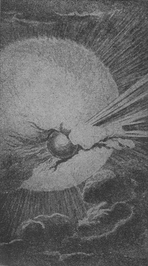
第二十一図 太陽と彗星の衝突（ビュッフォンの博物史中の銅版画）
この説に対して、それら衝突によって生じた破片が再び元の所に落ちはしないかという抗議があるかも知れない。これに対するビュッフォンの答は、彗星が太陽を横の方に押しやってしまい、また投げ出された物質の初めの軌道は後から投げ出された破片のために幾分か移動するから差支えはないというのである。後にこのビュッフォンの仮説を批判したラプラスはこの逃げ道を肯定している。ビュッフォンの考えは全く巧妙である。仮に一つの円い木板があるとして、これに鋭利な刃物を打ち込んで、第二十二図に示すように削り屑を飛び出させるとすれば、木片は矢で示す方向に回転するであろう。
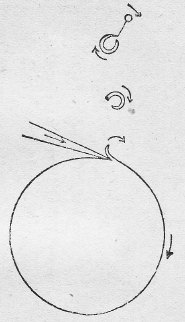
第二十二図
打ち出された削り屑もまた同じ方向に回転する、のみならず、刃物との摩擦のために右方に動く、すなわち、板の赤道の運動方向と同じ方向に並行して進む。大きな屑の破片と見なされる小破片は、もしその小破片と細い繊維ででも繋がっていればその周囲を同じ方向に旋転しなければならない。これと全く同様に、彗星が太陽の面に斜めに入り込んだ際に分離した太陽の破片はすべて同じ方向に回り、衝突後の太陽の赤道と同じような軌道を描くはずである。ビュッフォンは太陽を灼熱された固体であると考え、また地球と同じように雰囲気で囲まれていると考えた。小さい屑を大きい屑に繋ぐ繊維に相当するものが重力である。
ここまでは至極結構である。しかしビュッフォンは更に一歩を進めて次のように推論した。すなわち、比重の最小な破片は最大な速度を得る、従ってその軌道を曲げるような抑制を受けるまでには太陽から最も遠い距離まで投げ出されるというのである。彼は土星の比重が木星のよりも小さく、また木星のが地球のよりも小さいことを知っていたので、そこからして、遊星の比重はそれが太陽に近いほど一般に大きいと結論した。この結論はスウェデンボルクもしたものであり、また後にカントも再びしたものであるが、しかし我々の今日の知識とは全く合わないものである。また太陽から分離するときに最大な赤道速度を得たような破片は、また最も小破片すなわち、衛星を投げ出しやすいはずである。これはその当時の経験とは一致するが、今日の知識とは合わない。当時知られていたのは、ただ、木星の赤道速度が地球のそれよりも大きく、地球のが火星のよりも大きいということだけであった。当時木星の衛星四個、地球のが一個知られていたが、火星のは一つも知られていなかった。それで、五個の衛星を有する土星は最大の赤道速度をもつべきはずであると考えられた。しかるに今日では赤道速度による順位は木星、土星、地球、火星となり、それら各々の衛星の知られている数は、それぞれ七、一〇、一、二ということになり、従ってビュッフォンの言う順位はもはや適用しない。
ビュッフォンの考えでは、遊星は、衝突の際発生した多大の熱のために一度液化したが、その体積の小さいために急激に冷却したものであって、同様に太陽もまたいつかは冷却して光を失うであろう。種々の遊星はその大きさによってあるいは永くあるいは短い期間灼熱して光を放っていたものであろう。それで種々な大きさの鉄の球を灼熱してその冷却速度を測ってみた結果から、彼は次の結論を引き出してもいいと信じた。すなわち、地球が現在の温度まで冷却するには七五〇〇〇年を要し、太陰は一六〇〇〇年、木星は二〇万年、土星は一三一〇〇〇年を要した。太陽が冷却するまでには、木星の場合よりも約一〇倍の時間を要するであろう、というのである。
遊星が分離する際に太陽の雰囲気の中を通過している間に、そこから空気と水蒸気を持ち出した。そうしてこの蒸気から後に海ができた。地球の中心は速くに灼熱の状態を失っていなければならない。なぜかと言えば地心の火を養うべき空気が侵入することができないからである（この点はデカルト及びライブニッツと反対である）。しかしそれにかかわらず、ビュッフォンは、地球の温熱のただ二パーセントだけが太陽の輻射によって支給され、あとは皆地球自身の熱によるものと信じていた。地球は全部均等な比重を有しなければならない、さもなければその回転軸が対称的の位置になり得ない――しかるに地球の形は、地球と同じ回転速度を有する液体の球が取るべき形と全く同じ形をしているのである。地球はまた中空ではない、もしそうであったら、高山の上での重力は通常よりも大きくなければならない。
投げ出された破片の平均比重は太陽の比重とほとんど同じである。何となれば、この破片の総質量の大部分（約七五パーセント）を占める木星の比重はほとんど太陽のと同じで、その大きさにおいてその次に来る土星のは少し小さいのである。それ以内にある諸遊星の比重はこれに反して太陽のより少し大きい。これらの事実が彼の説を確かめるものと彼には思われた。しかし以上の二つの点に関して次のようなことを指摘することができる。すなわち、まず、もし地球内部の比重がその中心からの距離に応じて定まったある方式に従って内部に行くほど大きくなっているとしても、その回転軸はやはりその中心と両極を通るのである。それで地球の内部の比重はその外層のよりも大きいと仮定しても、それに対する反証は何もない。実際――今日我々の知る通り――この比重の比は二と一の割合になっているのである。次に、地球の冷却が、特に良く熱を導く鉄の球の場合のように急速であると考えるべきはずはない。それで地球内部には、何らの燃焼過程が行われなくとも、今でも灼熱状態が存していると考えることができる。最後に、今日我々の知るところでは、太陽も、また多分、木星以外の外側の諸遊星も、それから、内側の諸遊星の内部も、いずれもガス体であって、ビュッフォンの信じたように固体ではない。このような次第で、彼の論証の一部は根拠を失ってしまった。しかし後にカントの提出した説に比べるとこれでもまだ比較にならないほど良いのである。
ビュッフォンは真個の科学者自然探究者であって、その考察様式は今日の科学者のそれと同じである。彼は不幸にしてラプラスから、当を得ない批判を受けたために、彼の名の挙げられることはまれであり、これに反してカント、ラプラスの名のみが常に先頭に置かれている。しかし私の見るところでは、ビュッフォンの研究は、ことにそれがラプラスのよりも約五〇年ほど早かったことから言っても、とにかくもラプラスのと同等の価値を認めてもいいと思われる。そしてこのラプラスの方がまた彼のケーニヒスベルクの哲学者のよりははるかに優れているのである。
ビュッフォンは彼の時代の、筆数ばかり多くて一向要領を得ない宇宙創造論者に対して次のような言葉で、かなり辛辣なしかも当を得た批評をしている。『私でも、もし上に述べた意見をもっと長たらしく敷衍しようと思えば、バーネット（Burnet）やウィストン（Wiston）のように大きな書物を書けば書けないことはない。また一方で彼らのしたようにこれに数学的の衣裳を着せて貫目を付けようと思えばできないこともない。しかし仮説というものは、たとえそれがどれほど確からしいとしても、こういう何となくこけおどしの匂いのする道具で取扱うべきものではないと思う。』
ラプラスがこの系統に対して与えた批評には正当なものがある。そのためにビュッフォンの仮説が信用を失ったのは疑いもないことである。ビュッフォン自身こう言っている。もし地球上の一点から弾丸を打ち出すとすれば、それが閉鎖した曲線軌道を描く場合ならば再び元の出発点に帰ってくるであろう。すなわち、ただ短時間だけ（せいぜい一周期だけ）地球から離れていることになる。同様に太陽から飛び出した削り屑も太陽に戻らなければならない。それがそうならないのはいろいろな付加条件のせいである。これについて天体力学の方面における一大権威者たるラプラスはこう言っている。『種々の破片はそれが墜落する際に互いに衝突し、また互いに引力を及ぼすためにそれらの運動方向に変化を生じ、そのためにそれらの近日点（すなわち、軌道の上で太陽に最も近い点）は太陽から遠ざかることがあり得る。』それでここまではビュッフォンの考えは正しい。『しかし』と、ラプラスは続けて言う。『それならばそれらの軌道の離心率は甚だ大きいものでなくてはならない。少なくともそれらがすべてほとんど円形軌道をもつという蓋然性は非常に少ないであろうと思われる。』ビュッフォンも遊星軌道がほとんど円形であるということは多分知っていたに相違ないが、しかしこの規則正しさについては何の説明も与えていない。それで彼の系統を事実に相当させるためには著しい変更を加えなければならない。それにしてもラプラスが、ビュッフォンは彗星軌道の非常に離心的で細長いことを説明することができなかったろうと言っているのは了解に苦しむことである。実際ビュッフォンは決して（後にカントがしたように）彗星が太陽系に属するものとは仮定しなかったので、むしろラプラスと同様に外側の空間から迷い込んできたものと考えていたのである。そうだとすれば、ラプラスが証明したようにその軌道は著しく離心的でなければならないはずである。ビュッフォンはこの問題については余り深入りはしていない。しかしこれは彼の説の不完全な点であるとしても誤謬とすることはできないのである。
次にカントの仕事について述べようと思う。彼はビュッフォンより一二歳若く、しかもビュッフォンに刺激されてやった仕事であるが、ビュッフォンのとは到底比較に堪えないものだということは以下に記すところから分るであろうと思われる。カントは一七五五年に『自然史及び天界の理論』（Naturgesch chte und Theorie des Himmels）という一書を著したときは、わずかに三一歳の若者であって、哲学者としての光輝ある生活はまだ始まらないころであった。この書において彼はニュートンの研究の結果を応用して上記の問題を論じている。彼の考えによると天の空間は真空であって、遊星はデカルトの考えたように、一つの渦動に巻き動かされるということはない。その代りこれら遊星はいったん運行を始めれば、この真空な空間の中では何の動力を与えてやらなくてもその運行を続けるであろう。
それで、かつて一度は渦動が存在したが、それが諸遊星の運行を始めさせた後に消滅したと考えても差支えないではないか。カントはこういうふうに考えを進めて行った。これは良い考え方であって、ややアナキシマンドロスの考えに似たところがある（九八頁参照）。
カントはこう言っている。『それで私はこう仮定する。すなわち、現在、太陽、諸遊星及び彗星となっているすべての物質は、最初には、これら諸天体の現に運行している空間の中に拡散していた。』この微塵のような物質の中点、そこは今太陽のある点であるが、この点へ向けて残りの微粒子の引力が働いた。それでこの物質微粒子は、間もなく微塵体の中心に向かって落下し始める（この粒子を、カントは、固体か液体であると考えたようである。その中で比重の最大なものが太陽に落下する確率もまた最大であると言っているのである）。その墜落の途中で時々相互間の衝突が起り、そのために横に投げ飛ばされる。従って中点を取巻くような閉鎖軌道を運行するようになる。こういう軌道を動いている物体が更にまた幾度も互いに衝突する。そのために段々に軌道が整理され、その結果はすべてが円形軌道を同じ方向に同じ中心のまわりに回ることになる。また中心に向かって落下する一部の物体も、やはり同じ回転方向をもっているために、その衝突の結果として太陽もまた同じ方向に、自転するようになったのである。
しかし中心のまわりの分布が最初に均等であったのに、どうして最後に右から左へ回るような運動を生じたか、左から右へ回っても同じでありそうなのに、どうしてそうはならなかったか。昔アリストテレスは地球のまわりを諸天体が左から右へ回ると考えたのであるが、彼の考えではこの回転方向の方が典雅であり神性にふさわしいものと思われたためであった。カントもまたこの二つの方向の中で一方が優勢であるというふうに考えた。これはデカルトの仮定したように諸質点が当初からある特定の一点のまわりに一定の方向に渦動をしていたという場合に限って言われることである。カントはこの仮定はしなかったのであるから、彼の学説では特に一方に偏した回転方向をもつような遊星系の生成は不可能である。妙なことにはカントから一〇〇年後にかの大哲学者スペンサーがまたこれと同じ誤謬を犯しているのである。
更に、カントの考えでは、いったん渦動を始めた物質の中でも一番重いものが中心へ向かって一番早く落ちてくるので、結局の円運動をするようにならないうちに中心近くまで来てしまうという確率が一番大きい。こういう理由で、太陽に最も近い遊星の比重が最大でなければならぬというのである。これはスウェデンボルクもビュッフォンも唱えたことであるが、しかしこれは事実に合わない。カントはまた中心にある物体の比重はそのすぐ近くを回っている物体のそれよりも小さくなければならないと主張している。しかし実際は太陰は地球よりも比重が小さい。カントはもちろんこれを反対に考えていたのである。
そこでこのように太陽のまわりを回っている流星微塵環の中に所々に比重がよそより大きいところがあると、各環内の他の場所の物質がだんだんそこへ集中してくるはずである。このようにして遊星や彗星ができたのであろう。もしも、このようにだんだんに集団を作るような部分が完全に対称的に配置されているならば、これらが皆同一平面上にある以上は、すべての遊星が皆完全な円形軌道を取るようになるはずである。それでカントの考えでは、遊星軌道が円形でなくまた黄道面に対して傾斜しているのは、一番初めから対称の欠陥があったとして説明することができるというのである。しかし将来太陽となるべき中心点の周囲に物質が均等に分布していたという前提をしたのであるから、最初からこういう対称の欠乏がどうして存在したかを説明することはできない。また一方では、他の場所でこういう意味のことも言っている。すなわち、重力の弱いほど、すなわち、太陽から遊星までの距離が大きいほど、その遊星の軌道の離心率も大きくなければならないというのである。これは、カントの例証した通り、土星、木星、地球及び金星については適合する。しかし彼は水星と火星のことは何とも言っていない。ところがこの二星は、小遊星は別として、最大の離心率を有しているので、従って彼の系統には全く合わない。カントは、デカルトと同様に、彗星は土星の外側に位するものとし、その離心率の大きいのはそのためであると考えた。
この考えは、しかし、既に前にニュートン並びにハレー（Halley）も示したように全然事実と適合しないものである。それは、カントの考えに従えば彗星もまた土星よりも比重が小さくなければならないからである。（これは少なくとも彗星の中核については多分事実でない。）
以上述べたところから考えてみてもカントの宇宙開闢説の基礎には実際の関係とは一致しないような空想的な仮定がたくさんに入っていることが分るであろう。まだこの外にも同様な箇条を挙げればいくらも挙げられるのであるが、しかしそうしたところで別に大した興味はないからまずこのくらいにしておく。ただ一つ付記しておく必要のあることは、フェイー（Faye）が証明したように、もし一つの遊星がカントの言ったようにして一つの輪から変じて団塊となったとすればその回転方向は太陽のそれとは反対にならなければならず、従ってすべての（カント時代に知られていた）遊星に特有な回転方向は逆にならなければならない、ということである。
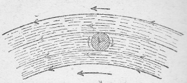
第二十三図 遊星Ｐが、Ｐの下方にある或る中心点のまわりに回転する流星の流れから生成されんとしているさまを示す様式図である。中央の四つの矢はこの流れの中の各所の速度を示す。これは図のごとく下から上へ行くほど小さい。Ｐの下方の回転速度は上よりも大きいからいくつかの輪の流星が一所に集まってしまう場合には下の方の輪の速度が上の方のに勝つから従ってＰは流星環の方向（右から左へ）とは反対の方向に（左から右へ）回転しなければならない。
第二十三図がこのような輪を表わすものとすると一番外側の微塵物質は、遊星運動の法則に従って内側にある太陽に近いものよりも小さな速度で通行する。従ってもしこのような微塵が集まって一団塊となるとすれば、その内側すなわち、太陽に面した方が、外側よりも急速に右から左へ動かなければならない。換言すればその遊星は左から右へ、すなわち、太陽並びに当時知られていた諸遊星と反対の方向に回ることになるのである。
カントは土星の輪の生成に関する力学的説明を与えているのであるが、それが我々の遊星系の生成に関してラプラスの与えた説明とかなりまで近く一致しているのは注意すべきことである。すなわち、始めに土星の全物質が広い区域に広がって、しかして軸のまわりに回転していたという仮定から出発している。それが次第に収縮していくうちにある微粒子は余りに大きな速度を得るために表面まで落下することができなくなる。そのために途中に取り残され、そうして環状に集まった衛星群となるというのである。彼はまた土星の衛星も多分同様にして成立し得たであろうと考えた。彼が太陽系の発生を論ずる場合にこういう始めからの回転は仮定しないでおいて、ここでそういうものを仮定していることから見ても、彼の考察の行き届いていないことが分かるのである。また彼の考えでは黄道光なるものは太陽のまわりに生じた薄い輪である。――すなわち、彼の考えによれば、この輪の最も内側にある粒子は元は諸遊星の赤道付近にあったのが、そこから飛び出して、その速度をそのままに保ちながら現在の空際に上昇したというので、これは直接に重力の法則に背反する。こういう考えは薄弱と言われても仕方がないのである。次に彼は輪の回転周期からして土星の赤道における速度を計算し、その自転周期を六時間二三分五三秒としている。彼はこの結果に対してよほど得意であったと見えて、この結果は『恐らく正真の科学の範囲内でのこの種の予言としては唯一のものである』と言っている。しかし土星の自転周期は実際は一〇時間一三分である。これに連関してカントはまたノアの洪水の説明をしようと試みている。これは当時の科学者らの間に大分もてはやされた問題であったのである。カントの説によれば、モーゼの書の第一巻すなわち創世記に『天蓋の下なる水』と記されているのは、多分地球を取り囲む、あたかも土星の輪のごとき『水蒸気』の環状分布を指すものである。この地球の輪は地球上を照らす役目をつとめるものであるが、また人間がこの特権を享有する価値のないようなことをした場合にはそれが洪水を起して刑罰を課する役にも立つものである。このような洪水はこの輪が急に地球上に落下する際に起るというのである。このように聖書や古典書中の諸伝説を自然科学的に説明しようとする努力は当時の科学的研究の中にしばしば見出されるものである。
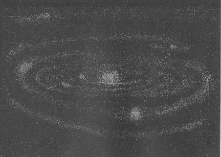
第二十四図 ラプラスの説によって星雲から輪の生ずる状を示す様式図。中心には中央体すなわち太陽があって星雲の冷却する際そのまわりに輪ができる。輪のある部分は破れている。またある輪では星雲物質の凝縮したところを示してある、これが後に遊星になるものである。「宇宙と人間」所載。
カントは一七五〇年にライト（Wright）の発表している一つの考えを採用した。それは、銀河の平均面は我々の遊星系の黄道面に相当するだろうということである。太陽のまわりを回る諸遊星が黄道の平面から余り遠く離れないと同様に、諸恒星も大多数は皆銀河の平均平面からわずかしか離れないような軌道の上を動いているであろう。これらの恒星は、その一員たる太陽をも含めて、皆一つの中心物体のまわりを運行しているはずであるが、その中心体の位置は未知である。しかしそれは多分観測によって決定することができるであろうというのである。ニーレン（Nyr
n）に従えば、ライトはこの説のすべての重要な諸点をカントと同じように明瞭に述べているそうである。最後にカントはまた太陽の冷却に関する説を述べている。すなわち、空気が欠乏するために、また、燃え殻の灰が堆積するためにこの燃焼している天体（当時は普通にそう考えられていた）の火焔が消滅するというのである。
燃焼している間に、太陽の組成分中で最も揮発性のもの、また最も精微なものが失われる。そうして、そういうものが集まって微塵となり、この所在が黄道光を示すものと考えられる。カントは甚だ漠然と次のようなことを暗示している。すなわち、彼の設定した『太陽の滅亡の法則の中には、四散した微粒子の再度の集合の萌芽を含んでいる。たとえこの粒子はいったんは渾沌と混合してしまったとしても』とこう言うのである。この言葉や、また後に述べようとする彼の他の叙述から考えてみると、カントは、物質には一つの輪廻過程があって、あるときはそれが太陽に近く集合し、またあるときは再び四散して渾沌たる無秩序に帰ると考えていたらしい（一〇二頁デモクリトスの説参照）。
カントの宇宙開闢論もやはり、遊星系が宇宙微塵あるいは小流星群から進化したとする諸仮説中の一つである。この考えは後にノルデンスキェルド（Nordenski
ld）及びロッキャー（Lockyer）によって採用され、そうしてダーウィン（Darwin）によって数学的に展開された。ダーウィンの示した結果によれば、こういう小さい物体の群は、いろいろの関係から見て、あたかも一つのガスの団塊と同様な性質をもっているのである。しかるにラプラスは、彼の『宇宙系』の巻末において太陽系の進化の器械的説明を試みるに当って以上の考えとは反対に、灼熱したガスの団塊を仮定して、そこから出発している。そうしてその団塊が初めから、その重心を通る一つの軸のまわりに右から左（北から見て）の方向に旋転運動を有したものと考えている。この点の相違は甚だ著しいものであるにかかわらずしばしば一般に観過されているのである。これは多分ツェルナー（Zllner）が『星雲説』に関して述べたことに帰因していると思われる。この著によって彼は『この仮説が、ラプラスではなくて、ドイツの哲学者たるカントによって基礎をおかれたものだという証拠を見せよう』としたのである。ラプラスはこういうふうにその説を述べている。『我々の仮説によれば、太陽の原始状態はちょうど星雲と同様なものであった。望遠鏡で見ると（この点に関するハーシェルの研究参照、一八二頁）星雲には幾らか光った中核がありその周囲を一種の霧のようなものが取り囲んでいる。この霧が中核のまわりに凝縮するとそれが一つの恒星に変るのである。』『太陽は無限大に広がることはできない。回転によって生ずる遠心力がちょうど重力と釣合う点がその限界を決定する。』太陽のガス塊が冷却するために徐々に収縮すれば従ってこの遠心力が増大する。ケプラーの第二法則に従えば、各粒子が一秒間に描く円弧の大きさはその太陽中心からの距離に反比例する。それで、収縮の際に、遠心力は中心からの距離の三乗に反比例するのに対して中心に向かう重力の方は同じ量の自乗に反比例する。その結果として、この灼熱ガス塊の収縮に際して一つのガス状の円板が分離し、それがちょうど同じ距離にある一つの遊星のように太陽のまわりを運行する。そこで、ラプラスはまた次のように仮定した。この円板はいくつかの灼熱したガスの輪に分裂しその各々が一つの全体として回転し、そうして、それが冷却して固体また液体の輪となったというのである。
しかし、これは物理学的に不可能である。冷却の際に微細な塵の粒が析出すると、それはガスの中に浮游するであろう。ガスの冷却凝縮が進行するに従って多分これらの塵はだんだんに集合してもう少し大きい集団を作るであろう。このようにしてちょうどカントが土星について考えたと同じように一つの微塵の輪ができると考えられる。そうして、それがもしかたまって遊星になるとすればやはり実際とは反対の回転運動をすることになるであろう。のみならず、ストックウェル（Stockwell）及びニューカム（Newcomb）が示した通り、このようにただ一つの大きな団塊のできるということはなくて、土星の輪の中で回っていると同様な小さな隕石の群しかできないはずである。更にまたキルクウード（Kirkwood）に従えば、海王星の輪が一つの遊星に凝縮するには少なくとも一億二〇〇〇万年かかるというのである。
更にまた彼の説に従えば、すべての遊星の軌道は円形で同一平面上になければならないことになる。もっとも、これについてラプラスは『言うまでもなく、各輪の各部の比重や温度に著しい不同があったとすればこの軌道の偏差を説明することができるであろう』とは言っているが、しかし恐らくラプラス自身にもこの原因については余りはっきりした確信がなかったらしいということは、後でまた次のように言っていることからも推察される。すなわち、彗星（彼の考えではこれは太陽系に属しない）が近日点近くへ来たときに、そこに今正にできかかっている遊星に衝突し、そのためにその遊星軌道の偏差を生じた。またある他の彗星は、ガス塊の凝縮がほとんど完了した頃に太陽系に侵入してきた。しかして著しく速度を減殺されたために太陽系中に併合されてしまったが、それでもその著しく円形とはちがった長みのある軌道を保っている、というのである。
ラプラスの仮説に対する最も重大な異義として挙げられることは天王星及び海王星の衛星がその他の遊星の衛星と反対の方向に回っているという事実である。一八九八年にピッケリング（Pickering）の発見した土星の衛星フォエベも、また木星の衛星の一番外側のものもまた同様である。ただしこの二遊星に属する衛星のうちで内側にある他のものは皆普通の方向に回っているのである。
このようにして、ラプラスは、ビュッフォンの仮説に免れ難い困難（すなわち、軌道が円形に近いことを説明する）を避けることはできたが、その代りにまたこれに劣らぬ他の困難に逢着した。しかしラプラスの仮説は土星の輪の生成については非常に明瞭な考えを与えたものである。
ラプラスと同時代に英国にはハーシェルが活動していた。彼は大望遠鏡で星雲を研究した結果としてこれらの星雲は一種の進化の道程にあるものだという意見に到達した（一八一一年）。彼の観測した星雲の中に極めて漠然とした緑色がかった蛍光様の光を放つものがあった、これが原始状態であると彼は考えた。そうしてスペクトル分析の結果は彼の考えを確かめた。後にこの発光体はガス体、それは主に水素とヘリウム並びによそでは見られないネビュリウムと称する元素から成立しているということが分ってきた。ハーシェルはまた他の星雲についてその霧のようなものの真ん中にいくらか光の強い所のあるのを観測した。また他のものでは中にちゃんとした若干の恒星があることを認めることができた、のみならずまたあるものでは霧のような部分はほとんど全くなくなって一つの星団となっているものもあった。
この簡単ではあるが内容の甚だ大きい観測の結果は、かつては非常な驚嘆の的となったラプラスの仮説よりも、ずっとよく時の批評に堪えることができたのである。もっともラプラス自身にはその仮説を彼の仕事のうちの重要なものとは考えていなかったらしいということは、それを彼の古典的大著『宇宙体系』（Exposition du Syst
 me du Monde）の最後に注のような形で出していることからも判断される。このことは彼のために一言断っておく必要があると思うのである。
me du Monde）の最後に注のような形で出していることからも判断される。このことは彼のために一言断っておく必要があると思うのである。この大著の中で彼は我々の遊星系の安定を論じて次の結論を得ている。『諸遊星の質量がどんなであっても、それらが皆同方向に、しかもまた相互にわずかにしか傾斜しないほとんど円形な軌道を動いているという、それだけの事実から自分はこういうことを証明することができた。すなわち、遊星軌道の永年変化は周期的であって、しかも狭い範囲内に限られているということである。従って遊星系はただある平均状態から周期的に変化してはいるが、しかしいつもほんのわずかしかそれから離れない。』彼はまた一日の長さが、耶蘇紀元前七二九年以来当時までの間に一〇〇分の一秒だけも変っていないということを証明している。
このごとくラプラスは、一部分はラグランジュ（Lagrange）の助けによって、太陽系の安定が驚くべく強固なものであるというニュートンの考えを更に深く追究し立証した。それでこの遊星系は永遠の存立を保証されたかのように見えるのであるが、しかしこの系においても、ともかくもある始めがあったということを仮定するとすれば、これに終りのないというのは、実に不思議なことと言わなければならない。
この点に関しては確かにカントの考えの方が正当である、それは少なくとも我々の現代の考えに相応するところがあるのである。
［＃改ページ］
ラプラスの前述の研究は我々の遊星系に限られていた。またスウェデンボルクやライトやカントもその他の天体についてはただ概括的な考えを述べているにすぎない。もっともライトが、銀河の諸星もまた我々の太陽も運動していると考えたのはなかんずく顕著なものであった。しかるにハーシェル（Herschel 一七三三―一八二二年）に至ってはばく大な恒星界全部を取って彼の研究範囲としたのである。これより先ハレー（Halley 一六五六―一七四二年）は彼の観測の結果から、若干の恒星は数世紀の間にはその位置を変ずること、そうしてわずかティコ・ブラーヘのときから一七世紀の終までの間にさえ既に位置の変化が認められるということを発見した。その後間もなくブラドリー（Bradley 一六九二―一七六二年）が従来には類のない精密な恒星表を編成した。ハーシェルはこの表の助けによって恒星の位置変化に関する研究をすることができたのであるが、その結果として、この位置変化がかなり著しい程度に生じていることを発見した。また諸恒星は天の一方の部分に向かって互いに近より、またそれと反対の点から互いに遠ざかるような運動をしていることを認めた。そうしてこの現象の説明として、物体の視角がその物に近寄る人にはだんだん大きくなり、遠ざかる人には小さくなるという事実を引用した。ここでその物体に相当するものは恒星間を連結する線なのである。ハーシェルはこの考えに基づいて太陽とこれに属する諸天体がいかなる点に向かって動いているかを決定することができた。
始めハレー、後にハーシェルによって認められた恒星のこの運動を名づけてその固有運動と称する。この運動を測定するには通例星空を背景としてそれに対する恒星の変位を測るのであるが、この際背景となる星空には非常に遠距離にあるたくさんの恒星が散布されており、それらの星の大多数はその距離の過大なためにその運動が認められないのである。
大発見というものは始めには大概抗議を受けるものである。人もあろうにベッセルのごとき人でさえ、ハーシェルの発見は疑わしいと言明した。これに反してアルゲランダー（Argelander）はハーシェルの説に賛同した。この人は、恒星の位置及び光度について綿密な測定をして偉大な功績を挙げた人である。そうして彼の説はこの方面におけるすべての後の研究者によって確かめられた。なかんずくカプタイン（Kapteyn［＃「Kapteyn」は底本では「Kap-teyn」］）のごときはその著しいものである。以下に述べるところも一部分はこの人の叙述によることにする。
一八八頁図（第二十五図）は天の一部分、すなわち、三角、アンドロメダ、牡羊、及び魚の各星座付近における恒星の運動を示すものである。
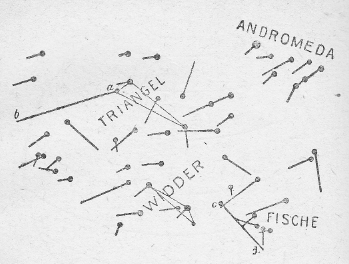
第二十五図
図の小黒圏は諸星の現在の位置を示す。この圏点から引いた直線はその星が最近三五〇〇年間に動いた軌道を示すものである。これから分る通り、三五〇〇年前にはこれらの星座はよほど今とはちがった形をしていたはずである。これら諸星の軌道は決して並行していないし、またその速度も決して一様でない。しかし、全体として見ると右上から斜めに左下に向かった方向が多いということだけは明らかに認められる。今これらのいろいろな方向の線を第二十六図のように、同一の点から引いてみると、この特に数多い方向が一層目立って認められる。この特異の方向を二重線の矢で示してある（第二十六図）。
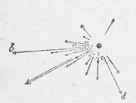
第二十六図
このような運動方向の『合成方向』を天球の上に記入すると第二十七図のようになる。これらの矢は皆天球上のある一点から輻射するように見える。この特殊な点を『皆向点』（Apex）と名付ける。この点は明らかに太陽の進行している目標点である。何となればすべての恒星はこの点から四方に遠ざかって行くように見えるからである。もっともこれはもちろん諸恒星の平均運動についてのみ言われることであって、各自の星の固有運動について言えばそれはこの平均とは多少ずつ皆違っているのである。これからも分る通り諸恒星もまた互いに相対的に運動しているので、恒星の群の中で特に太陽だけが運動しているのではない。
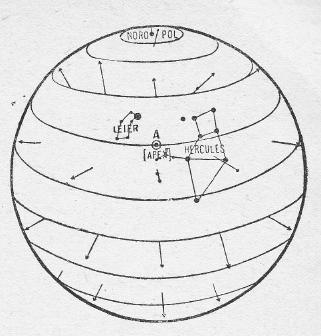
第二十七図
カプタインによるこの図は非常に明瞭な観念を与えるものである。これを見ればハーシェルの考えの正しいということは到底否定することができない。太陽は天上の（Ａ）点、すなわち、ヘルクレス星座中で、琴座との境界に近い一点に向かって進んでいる。そうしてこれと正反対の位置にある大犬星座から遠ざかりつつあるのである。
銀河中の諸恒星が――太陽系中の諸遊星のごとく――同一方向に動いているというライトの説は、シェーンフェルト［＃「シェーンフェルト」は底本では「シェーンフェルド」］（Sch
nfeld）並びにカプタインによって吟味せられた。しかしこのような規則的な運動をしているような形跡は見付けることができなかった。これに反してカプタインはこれとはちがったある規則正しさを認めた。すなわち、彼の見るところでは、これら恒星の固有運動は、二つの恒星群が存在することを暗示する。その一群はオリオン星座中のカイ（χ）星の方向に、他の一群はこれとほとんど正反対の方向に進んでいるように見えるというのである。なお、今後の研究によってこの規則正しさに関していろいろ新しい興味ある発見が現われることであろう。この現象が一層著しい興味を引くようになったというのは、これによって、恒星が天球上を一年間に動く見掛け上の速度からして、その星の太陽からの距離を決定することができるようになったからである。アリスタルコス及びコペルニクスの説の通り地球は空間を動いているのであるから、一年中のある季節には他の季節におけるよりもある特定の恒星に近くなっているはずである。従って上に述べたと同様な現象が、ただし周期的ではあるが、認められるだろうと予期してもいいわけである。すなわち、多くの星の大きさが毎年一回ずつ大きくなったり小さくなったりするように見えるであろうという見込をつけても不都合はないはずである。
しかしこの期待はなかなか安易には満たされなかった。既にアリスタルコスはこの変化の見えないという事実から、諸恒星の距離は余りに大きいために、それが無限大であるように見え、従って星座の視角の年変化が到底認め得られないのであると考えた。コペルニクスもまた同じ意見であった。しかしティコ・ブラーヘにはこの考えが信じ難く思われた。そうして彼はこの事実をもって、地球は静止し宇宙の中点にあるという説の論拠としたのである。しかしその後、天文学者等はこの期待された現象を発見しようとしていよいよ熱心に努力をつづけていた。そうして、ついに一八三八年に至って、ベッセルが白鳥星座の第六一番と称する星が一年の周期でわずかな往復運動をしていることを確かめることに成功した。この運動からこの恒星の距離を算定することができたが、それは実にばく大なものであって、光線がこの星から太陽まで届くのに一〇年掛るということが分った。それでこの距離を表わすのに一〇光年という言葉を使う。一光年の距離は9.5×1012すなわち、約一〇万億キロメートルであって、地球から太陽への距離の六三〇〇〇倍に当るのである。その後他の恒星の距離もますます精密な方法で測定されるようになった。ケンタウル星座のアルファ星が一番太陽に近いものとなっているが、それですら四・三光年の距離にある。シリウスも入れて八つの星の距離が一〇光年で、これらがまず近い方の星である。星空中で我々に近い部分では恒星間相互距離の平均は一〇光年より少し大きいくらいである。二〇光年以内の距離にある恒星が二八個、三〇光年以下のものが五八個だけ知られている。それで結局アリスタルコスとコペルニクスの考えが正しかったわけになり、従って地動説に対する最後の抗議が片付けられたわけである。さてこのようにして恒星の固有運動、すなわち、角速度が分り、また距離が分れば、それから容易にその実際の速度を計算することができる。ただし視線に対して直角の方向における分速度だけしか得られないのである。このようにして得られた速度の数例を挙げてみると、毎秒キロメートルを単位として、ヴェガが一〇、ケンタウル座のアルファ星が二三、カペルラが三五、白鳥座の六一番星が六〇、アルクトゥルスが四〇〇という数を示す。
それで、もし、視線の方向における恒星の速度をも知ることができれば、その星の運動を完全に決定することができるはずである。ところが、一八五九年以来応用され、恒星に関する天文学に根本的な改革を促したスペクトル分析は、またこの視線方向の速度の測定法を授けるに至った。これによって測定された上記五個の星のこの分速度は毎秒キロメートル単位で、−19，−20，＋20，−62，−5となる。ここで（＋）記号は星が太陽から遠ざかることを示し（−）記号は近づきつつあることを示す。これらの数値が示す通り、恒星間の相対速度にはなかなか大きいものがあるのである。――地球の軌道上の速度は毎秒約三〇キロメートルであるから、これと比較することができよう。
視線の方向における恒星の運動が分ると、太陽が天のどの点に向かって近づきつつあるかということを算出することができる。この方がいわゆる固有運動から算定するよりも一層容易である。キャムベル（Campbell）はこういう計算を行ったがそのために彼はこういう仮定をした。すなわち、比較の基準となる諸恒星は、平均の上では静止している、換言すれば、これらの星の中で太陽に近づくものもあればまた同じ速度で遠ざかっているものもあるとする。そうして計算すると、太陽は彼の恒星固有運動から計算された点とほとんど同じ点に向かって毎秒二〇キロメートルの速度で空間の中を飛行しているという結果になる。これでみてもこれらの観測された現象に対する以上の説明が正しいということはもはや疑う余地のないことである。次に起ってくる最も興味のある問題は、太陽が常に天上の同一の点を目掛けて動いているか、すなわち、一直線に動いているか、あるいは少し曲った軌道を動いているかということである。もしその軌道の曲率の大きさが分れば、それからして太陽の軌道がいかなる力によって支配されているかを算定することができるはずである。しかしこの種の観測が始まって以来まだ余り時日がたたないから、今のところこの非常に重要な問題に対して何らの解答を与えることはできない。
しかし、ライトやカントが考えたように、すべての目の届く限りの恒星がある共通の大きな中心体のまわりを、遊星が太陽を回るように、回っているのではなくて、諸恒星相互の運動はかなりに不規則なものであるというだけは確実である。してみると、太陽がそういう冒険的に旅行をしているうちに、いつか一度はある恒星かあるいは星雲と衝突するようなことがないとは限らない。ただし太陽が自分と同じくらい大きい光った恒星と衝突するまでには約一〇兆年の旅を続けなければならない勘定である。もっともことによると空間中には冷却して光を失った恒星が、光っているものよりもずっと多数にあるかも知れないので、そうだとすると、この無事な旅行の期間は著しく短縮されるかも知れない。しかるに太陽がある星雲の中に進入するという機会の方は非常に多い。なぜかと言えば空間中にある星雲の数はかなり多いのみならず、またそれが星天の中を占める空間はなかなか大きなものでこれに比べては恒星の体積などは全く無に近いと言ってもいいほど小さなものだからである。
太陽が運行中にこのような星雲に出会って進行を阻止され、そのために灼熱される、するとそれがいわゆる新星と称するものになる。たとえば一九〇一年にペルセウス星座に突然出現したようなのがそれである。こういう説がしばしば称えられたものである。
この考えは特にゼーリーガー（Seeliger）によって発展されたものである。この説は衝突する星雲が比較的局部に集中されたものであった場合には疑いもなく適合する。たとえば遊星状星雲の場合には多分そうであろうと思われる。しかしこの考えは一般にすべての新星には適用されないように見える。少なくも従来詳しく研究された若干の場合から見てそう思われる。ペルセウス星座の新星の場合にはその出現後に一つの星雲が発見されたが、しかしその直径の視角は三〇分以上もあり、従ってその大きさはばく大なものであった。これは疑いもなく非常に広く拡散した稀薄な星雲の部類に属するものである。
一つの太陽型の恒星がある稀薄な星雲中に突入したときに何事が起るであろうかということは、星雲中における侵入者によって生じた道筋を示すウォルフ及びバーナード（Wolf und Barnard）の写真（『宇宙の成立』中の第五四図と第五五図）を見ればおおよその概念を得ることができるであろう。このような太陽が毎秒二八・三キロメートルの相対速度（注）で星雲中に進入するとすれば、それはその途上のすべての物質を薙ぎさらっていくのみならず、約一五〇〇万キロメートル以内のすべての物を掃除してゆくはずである。つまりそれだけの半径の溝渠を穿つわけになる。また相対速度が遅いほどこの溝は広くなるのである。しかるにウォルフ及びバーナードの写真に撮った物はその距離が余りに遠いために上述のような溝があってもそれは到底写真には現われないはずである。しかし実際の写真に現われた『道筋』は非常に顕著なものであってその大きさは上記の幾百倍のものであるとしなければならない。またこの写真で見るとこの侵入者のまわりにはばく大な広がりをもったかなり不規則な形をした星雲が取り囲んでいることが分る（近所にある恒星の写真像が皆規則正しい円盤の形をしているのと比較せよ）。これで見るとこの侵入者はこの稀薄な星雲の一部を、集中的な規則正しい星雲塊に変ずるものと思われる。その変化の過程については次のような具合に考えることができる。すなわち、まず、この稀薄な星雲の密度が侵入者の軌道の各々の側で一様でないと仮定する。これはもちろん一般にそうあるべきである。この侵入者の後側へすべての方向から落下してくる物質は互いに衝突してその運動は大部分相い消却してしまうのであるが、しかし密度が非対称的であるために若干の運動が残留し、そのためにこの落下した物質は侵入者のまわりを楕円形の軌道に沿うて動くようになる。このようにして星雲物質が集積されるために一種の巨大な環状星雲ができる。これが侵入者の軌道の付近の稀薄な星雲を掃除するのに役に立つのである。このように中心物体から著しい距離に星雲物質が拘留されるために温度の過大な上昇が妨げられる。もしそうでなかったとしたらこの侵入者は多分、彼のペルセウス星座のと同様な新星として強い光輝を発したであろうと思われる。薄く拡散した星雲中の物質は非常に稀薄なものでたまたまその中に侵入する物体があってもそれを灼熱させることはむずかしいように思われる。
（注） この数値はそれぞれ周囲に対して毎秒二〇キロメートルの速度で動いている太陽と星雲との間の蓋然値として得られたものである。キャムベルの測定では星雲の速度は太陽のと同じくらいである。
ただ、太陽がある他の太陽か、あるいは多分星雲中の特に集中した部分に侵入する場合に限って、それが新星として現われ、その光度は衝突以前に比べてもまたその後に衰えたときに比べても数百倍あるいは数千倍大きいものとなるであろう。
しかるにまた、星雲は太陽相互の衝突を早めることもできるように思われる。すなわち、星雲中には星空の各方面から隕石や彗星や特に宇宙微塵などのような多数の物質が迷い込んできてその中に集積する。これら天界の放浪者の質量は微小なものであるために皆星雲中に捕えられて残り、そこで上に凝縮する星雲物質とともに次第に大きな物体に成長し、そしてそれが収縮するために熱を生じて小さな恒星として光り始める。そのうちに漂浪する太陽が近所にやってきて衝突すると、その太陽から多量なガスが放出され、これが太陽の速度を減少させ、また星雲中の運動に対する抵抗を増加する。このようにして、あるいはまた非常に広く広がった星雲中を長く続けて放浪するために、太陽は星雲に捕獲されてしまう。それでこのようにある星雲中に入り込んだ太陽は、他のほとんど真空な空間中の特定な軌道を進んでいるものに比べると、同じ星雲中に捕われた他の太陽と衝突する機会がはるかに大きいわけである。
これら種々の理由から、太陽が他と衝突することなく自由に天空を漂浪し得る期間はずっと短く見積らなければならないことになる。前に計算したものの一〇〇分の一、すなわち約一〇〇〇万億年と見ても長すぎはしないであろう。もちろんこの数字は余り当てにはならないものであってただ一つの天体の寿命の概略の程度を示すにすぎないのである。
我らの太陽ぐらいの大きさの天体が二つ衝突した場合におよそいかなる事柄が起るであろうかということについては、著者の『宇宙の成立』中に詳しく述べておいた。互いに衝突する太陽から二つの猛烈なガスの流れが放出され、これが空間中にばく大な距離まで広がって、そうして、星雲に特有な二つ巴のような二重螺旋形を形成する。その噴出物質は主として最も凝縮しにくいガス体、特にヘリウムと水素、並びにまたそれよりは凝縮しやすい物質の微粒子からできている。これらは皆噴出の際に過大の速度を得たために、中心体の引力の余り利かなくなるほど遠い範囲に逸出してしまう。同時にその速度を失ってしまうために、長い間ほとんど位置を変えずに、螺旋状の形を保っているのである。これに反して、もっと小さい速度で放出された物質は再び元の噴出の場所に帰ってくる。その途中で、その後に放出されたもの、特にガス体に出逢う。これらの物質全体は結局は、中心体のまわりに広く広がった、固体並びに液体の微粒に満たされたガス星雲を形成する。同時にこの中心体は（かつてビュッフォンが想像したように）衝突によって激しい回転を生じているのである。一番内部の中心体は強く灼熱され、衝突前に比べると、著しくその体積を増している。そうして外側へ行くに従って、これを取巻いて渦動するガス塊へと徐々に移りゆくのである。
ラプラスが太陽系の始源となった元の星雲に対して抱いていた考えは正にこの通りであった。それで実際観測された事実に応ずるように適当にラプラスの説を修正すれば、今新たに星雲中で太陽系の進化が始まるとしたときそれがいかなる経過をとるかということの概念を描き出すことができる。そうして得られた新しい説はビュッフォンの説とラプラスの説とを適宜に混合したものとも見られるのである。
光輝の強い恒星アルクトゥルス（Arkturus）の速度は最も大きく毎秒約四〇〇キロメートルの割合で進行している。この星は太陽から約二〇〇光年の距離にあり、その送り出す光は太陽の光と非常によく似ている。従ってこの星の大きさはばく大なものであって、計算の結果では、多分太陽の五万倍もあるだろうと言われるくらいである。このような巨星が二つあって、それがアルクトゥルスと同様に大きな速度で相互に衝突したとしたらその結果がどうなるかを考えてみよう。噴出されるガスは一つの渦動となって広がってゆくであろうが、それは多分ほとんど同一平面内ですべての方向に無限に伸びてゆくであろう。銀河は多分このようにしてできたものであろうとも考えられるが、しかしこの銀河系には中心物体となるべきものが知られていない（後述リッターの説参照）のがこの説の難点となるわけである。幾百万年経過する間にはこのような巨大な星雲中に多数な小恒星が集積され、それらがまた互いに衝突して、そうして新しい渦動を生ずるはずである。ほとんどすべての新星は銀河の近くに出現するが、ここでは空間中の他の場所に比べると恒星間相互の距離が比較にならぬほど密接しているのである。新星が消えてしまった後では、ただ、一つのガス状星雲が見えるだけであるが、銀河付近にはこういうガス状星雲がやはり著しく集中しているのである。時の経過とともに星雲物質が、その中に入り込んだ微塵物質の上に再び集積されるとそれが星団になる。実際これも主としてこの同じ銀河区域に見られるのである。螺状星雲もそのスペクトルを検すると星団であることが分る。しかし距離が余り大きいためにその中の個々の星を認めることができないのである。この種の星雲は主に星の数の最も稀少な天の区域、すなわち、銀河からは最もはなれた銀河の極の方にある。この部分にはこの種のものが非常に多く、たとえば、ウォルフが、ベレニケ（Berenike）の髪毛と名づける星座の一局部を写したただ一枚の写真の中に一五二八個という多数の星雲を見付け出した。このうちの大多数は多分螺状星雲であると考えられる。
恒星の組成分に関する知識が得られるのは全くスペクトル分析のおかげである。その恒星という中には我々の太陽もその一つとして数えられているのである。ハーシェルは星雲をその外見上の進化の程度に従って分類したが、それと同様にして恒星もまず一番熱いもの（すなわち、輝線スペクトルを示すもの、従って、こういう星の前身と想像されるガス状星雲に最も近似したもの）から始めて、最後には既に消えかかっていると考えられる暗赤色のものに終るという等級を作ったのである。これらの光った星の次に来るのが暗黒な天体で、その中で最初に来るのはまだ固体の［＃「固体の」は底本では「個体の」］殻をもたないもの――木星は多分この種に属する――で、その次は地球のように固体の皮殻をかぶったものである（『宇宙の成立』一六七頁参照）。恒星中に最も多く現われる物質を列挙してみると次のようなものである。最も高温の星にはヘリウム、それに次いで高温で白色光を放つものには水素、中等程度の高温で黄色の光を放つ、たとえば我々の太陽のようなのではカルシウム、マグネシウム、鉄並びに他の金属元素が多く、最後に最も温度の低い赤色の星では炭素化合物なかんずくシアンが現われる。既に地球上で知られている組成物質以外のものはどの星にもないという説は当っていない。たとえばピッケリングはいろいろの星のスペクトルの中で、地球上のいかなる物質のそれとも違った線を発見した。もっともこの線は多分水素の出すものであろうという説があるが、しかし実験的に水素からこういう輻射を出せることはできなかった。太陽のスペクトル中にも従来知られた物質のスペクトル線のどれとも一致しない線がかなりたくさん見い出されている。やっと近ごろになって知られた線の中で最も重要なものはヘリウムの線である。そして多数の未知の線の中にはいわゆるコロニウムの線と称するのがある。これは太陽のコロナの内側の部分に特有なものである。しかし全体としてみれば星のスペクトル線の地上元素のそれとはかなりまでよく一致しているのは事実である。マクスウェルは一八七三年にこう言っている。『宇宙間にある恒星の存在を我々はその光の助けによって、そしてただそれによってのみ発見する。これらの星の相互の距離は余りに遠くていかなる物質的なものもかつて一つの星から他のものに移るということはあり得なかったであろう。それにかかわらず、この光の物語るところによってこれらの星が皆我々の地球上にあると同種の諸原子から成立っていることが分るのである。』
こう言っているこの学者が、しかも同じ年、星から星へ物質を輸送することの可能なある力――すなわち、輻射圧――の存在を予言しているのはいささか［＃「いささか」は底本では「いささかか」］奇異の感じがある。それから三年後にバルトリ（Bartoli）は、ただに熱線や光線のみならず輻射エネルギーのあらゆる種類のものは皆圧力を及ぼすということを証明した。しかしこの新しい普遍的な力によって宇宙物理学的諸現象の説明を試みようとする人は案外になかったので、一九〇〇年に至って始めて私がこの問題に手をつけて、従来不可解と考えられていた各種多様の諸現象が、これによって非常に簡単に説明されるということを示したのである。
太陽雰囲気中で凝縮した液体の小さな滴は輻射圧の作用で太陽から追いやられ、そうして光の速度の幾パーセントかの速度で空間中を飛んでゆく。太陽よりも、もっと輻射の強い恒星（多数の恒星は、太陽のような黄色光ではなくて、白色光を放っており、従ってそれだけ輻射も強いと考えられるから、一般にその方が普通と考えられる）の場合には、この細滴の速度は更に一層大きくなり得るであろうが、しかしいずれにしても決して光の速度には届かないわけである。このようにして多くの太陽は無限の過去以来微粒子を放出している結果として彼ら相互の間に不断に物質の交換が行われる。そのために、最初は組成分に多少の差別があったとしても、それはとうの昔に均等になっていなければならないはずである。この場合にも、一般自然界に通有であるように、低温な物質、ここでは低温な恒星、が高温なものの方から、また大きい方が小さい方から養われ供給されるのである。
前に『宇宙の成立』九八頁にも暗示しておいたように、別世界から折々おとずれてくる不思議な使者、いわゆる隕石なるものは、あるいはこのように宇宙間に駆り出された細滴から成立したものかも知れない。隕石は全く特殊な構造と成分をもっていて、あらゆる地球上で知られた岩石の類とは本質的な差違を示しており、地球内部の液体の固まってできたいわゆる火成岩とも、また海水の作用で海底に堆積してできた水成岩とも全くちがったものである。隕石中にしばしばガラス質の粒の含まれていることから見ると、急激な冷却を受けたことが分る。また他の場合には大きな結晶を含んでいるから、これは永い間均等な高温度に曝されていたであろうと考えられる。また同じ隕石の二つの隣り合った破片を比べてみると組成や構造の著しい相違を示すことがある。これは隕石の素材が非常に多様な来歴をもつものであることを証明する。水や水化物（水を含む化合物）は少しも含まれていない。隕石の粒が形成されたと思われる太陽の付近では酸素と水素はまだ水となって結合していないであろうから、これは当然である。これに反して炭素水素の化合物が含まれているが、これは光の弱い恒星やまた太陽黒点中にしばしば現われるものである。また地球上では不安定で、水素と酸素を含まない雰囲気中にのみ成立し得るような塩化物、硫化物、燐化物を含んでいる。また一方隕石中には、地上の火成岩中に頻出する鉱物、すなわち、石英、正長石、酸性斜長石、雲母、角閃石、白榴石、霞石を含んでいない。これらは地球内部から来る熔岩からいわゆる分化作用によって生ずるものである。
この分化作用の起り得るためには多量な熔融塊の内部で永い間持続的に拡散が行われるという条件が必要である。従って小さな滴粒の中ではこれはできない。隕石のあらゆる特性、なかんずくしばしば見られる微粒状のいわゆるコンドリート構造と称するものなども、これが小さな液滴からできたものとすれば容易に説明される。時としてまた大きな結晶のあるわけは、何かある溶媒（たとえば鉄やニッケルに対する酸化炭素のごとき）が存在したためか、あるいはそういう隕石が長い間高温度に曝されたためかであろう。彗星が太陽に極めて近い所に来たような場合にはそういう高温度にさらされるわけである。この方面に関するスキアパレリ（Schiaparelli［＃「Schiaparelli」は底本では「Schiapareli」］）の古典的な研究によると、彗星が分裂して隕石群に変るのは、特に近日点付近に多い現象だということが明らかになった。
太陽から放出された細滴は主に星雲の一番外側の部分に広く広がったガス体の中に集積し、そうして多くの場合に荷電されている宇宙微塵の作用で光を放つ、それが星雲に特有なガススペクトルを与えるのである。星雲内は至る所非常に寒冷であるので滴粒の表面には星雲ガス特に炭水化合物や酸化炭素の一部が凝縮する、そうして滴粒が互いに衝突するとそれが膠着してしまう。このようにして滴粒から次第に隕石に成長し、そうして空間中の旅を続けてゆくのである。
このように諸太陽は光圧のために微粒子を放出するために相互の物質を交換する以外に、また衝突の際に広く空間に飛散するガス塊の一部を互いに交換する。また星雲の外縁にあるガス分子が遠方の太陽から受取る輻射のために高速度を得てその星雲から離脱し空間に放出されるためにも諸太陽の間に物質の交換が起るのである（『宇宙の成立』一七五頁参照）。それで『物質的な何物も一つの恒星から他の恒星に移動することはできない』と言ったマクスウェルの言葉は、詳しい研究の結果から見ればもはや当てはまらなくなるものである。
最近二〇年間に熱輻射の本性に関する我々の知識は非常に豊富になった。その中でもステファン（Stefan［＃「Stefan」は底本では「Stephan」］）及びウィーン（Wien）の発見した法則は最も重要なものである。前者の法則によれば、外からの輻射を全く反射せずまた通過させない物体が自分自身で輻射する熱量はその物体の絶対温度（すなわち、摂氏零下二七三度を基点として数えた温度）の四乗に比例する。また後者の法則はこのような物体の出す全体の輻射が種々なスペクトルの色に相当する熱輻射のいろいろの種類からいかに構成されているかを教えるものである。前者の法則を使えば固体の皮殻をかぶっている遊星や衛星の温度を計算することができる。これを始めて計算したのがクリスチアンゼン（Christiansen）である。ある遊星あるいは衛星が太陽から受取っている熱量は知られている。しかして、これらの物体は固体の皮殻をもっているから、太陽から受取っているとほとんど同量の熱を天の空間に放散し、そうすることによってほとんど恒同な温度を保っている。しかるに、上記の法則によって物体の出す輻射とその温度との関係が規定されているから、従ってその温度を計算することができるわけである（『宇宙の成立』四二頁）。水星や太陰のように全く雰囲気をもたない遊星や衛星の場合にはこの計算によって完全に正しい数値が得られるのである。しかし、雰囲気の存在する場合にはこの関係はある点で少し変ってくるので、このことは既に十九世紀の初めにフリェー（Fourier）が指摘しているところである。その理由は、雰囲気がこれに入射する太陽の輻射を通過させる程度は暗黒物体の表面から出る熱輻射を通過させる程度と同一でなく、前者よりも後者が多いからである。これには雰囲気中の水蒸気と炭酸ガスが重要な役目をつとめるので、これについては既に各種の自著論文で詳細に論じておいた。大多数の地質学者の間で承認されている通り、過去の地質時代における生物の遺跡によって確証される地質時代の交代は主として大気中炭酸ガスの含有量の変化に帰因するものであって、これはまた当時における火山作用活動の強弱によって支配されたのである。
我々の遊星系に関する知識は、地球の重量の絶対値が測定され、それから容易にその比重が算出されるようになったために、更に著しく豊富の度を加えることとなった。この測定を最初に行ったのはキャヴェンディッシ（Cavendish 一七九八年）であった。彼は直径三〇センチメートルの大きな鉛の球が小さな振子の球に及ぼす引力を地球がこの振子球に及ぼす引力と比較した。その結果から出した地球の比重は五・四五となった。その後キャヴェンディッシの実験は多くの学者によって著しい改良を加えられて繰り返された。そうして最後の結果として得られた地球平均密度は五・五二である。しかるに地殻の外側の比重は約二・六（すなわち、普通岩石の比重）であることから考えると、地球の内部の比重はよほど大きいものとしなければ勘定が合わない。しかるに、
一六七五年に、パリで有名な天文学者カッシニ（Cassini）の助手を勤めていたデンマーク人ロェーマー（R
mer）が、天文学上重大な意義のある発見をした。すなわち、光の速度の測定を可能ならしめる一方法を案出した。彼はガリレオの発見した木星の衛星を観測した。この衛星は木星の陰影中に没すると暗くなるのであるが、この食現象は非常に精密に観測することができる。天体の一周行に要する周期は不変であるから、相次ぐ二つの食の間の時間は不変であるはずである。しかし実測の結果ではそうでないように見える。もし地球ができるだけ木星に接近した位置にあり、両遊星が静止していれば衛星の食は精密に同じ時間間隔たとえば一日と一八時間で繰返されるはずであるとする。そこでもし地球が一つの食の起った後直ちに地球軌道の反対の側に行ってしまったとすれば、当然また一日と一八時間後に起る食現象が、地球上でそれと認められるのは、ちょうど光が地球軌道の直径を通過するに要する時間だけ後れるわけである。これに要する時間は平均九九七秒である。これに対してロェーマーの実測した数値ははるかに大きなもの――一三二〇秒――であった。もちろん実際は一日と一八時間くらいの短時間に地球の進む道は所要の距離すなわち、軌道の半分に足りないことは明らかである。この地球半周行の間に、衛星自身の運動だけのためにも一〇五回の食が起るはずであるのを、その上に木星の運動があるために更に一一回余計の食が起る。しかし時間の差違の関係はこれでも同じことである。そこで、今もし、地球上で光の速度を測定することができれば、上記の食の時間の後れからして地球軌道の直径を算出することができるわけである。この種の測定中で最もよく知られたものは、フィゾー（Fizeau）、フーコー（Foucault）及びマイケルソン（Michelson）の実験である。これらの結果によれば、真空中における光の速度は毎秒三〇万キロメートルである。これから計算すると地球軌道の半径は一四九五〇万キロメートルとなる。一方で直接天文学的方法で測定された結果を比べるとほぼこれと一致するのである。ラプラス時代以来二大遊星、すなわち、天王星（一七八一年）と海王星（一八四六年）が発見されまた火星と木星との中間に多数の小遊星が発見された（現在では約七〇〇個知られている）。その中の最初のものセレス（Ceres）は一八〇一年の一月一日にピアッツィ（Piazzi）によって見付けられた。これらの運動は皆右回りで、その軌道の傾斜は甚だ多様である。傾斜の最大なのは三四・八三度である。また軌道の離心率も甚だまちまちである（最大〇・三八三）。
特に興味の深いものはいわゆる二重星である。これについては初めハーシェル（W. Herschel）次にストルーヴェ（W. Struve）近ごろではシー（See）によって熱心に研究されたものである。そして多くの場合にこれら恒星の共有重心のまわりの運動を測定することができた。その結果からしてまたこの星の軌道の離心率を算定することも可能になってきた。近ごろになって恒星のスペクトルの研究から、大多数の恒星はあるときは前進しあるときは後退する往復運動を示していることが分った。このような場合にその軌道の離心率を決定することのできる場合もしばしばあった。そうして、我々の遊星の軌道がほぼ円形であるのに反して、これらの星はよほど違った形の軌道を描いていることが分った。これら恒星軌道の離心率の直接に観測されたものは〇・一三と〇・八二の間にあり平均値は約〇・四五（シーによる）になる。
スペクトルによって観測される二重星の離心率はやや小さく、ニューカムの教科書『通俗天文学』に挙げてある一八個について言えば〇と〇・五二の間にあり、平均値は〇・一八（注）である。
（注） シーのその後の算定では、以上二種の二重星について各々〇・五〇と〇・二二となっている。
若干の二重星ではその二つの物体の質量を決定することができた。太陽の質量を単位とすると、ケンタウル星座のアルファ星については一と一、天狼星シリウスでは二・二と一、プロキオンでは三・八と〇・八、蛇遣い星座の第七〇番星は一・四と〇・三四、ペガスス座の第八五番では二・一と一・二である。これらの数値からわかる通りこれらの恒星はほとんどすべて我々の太陽よりは大きい。また『スペクトル二重星』の観測の結果もやはり同様である。多くの場合に二つの恒星の一方は光輝が弱くて認められない。そういうのを名づけて『暗黒随伴体』という。甚だ珍しいのは変光星アルゴールであってこの星の質量は比較的小さく、そして時々暗黒随伴体で掩蔽される。アルゴールの直径は二一三万キロメートル、その随伴体のが一七〇万キロメートルと算定されている。すなわち、太陽の直径一三九一〇〇〇キロメートルに比して両方とも著しく大きい。それにかかわらずその周期から計算される質量は太陽のそれの〇・三六と〇・一九である。従ってこれらの比重は太陽のそれの〇・一にすぎないのである。
また別の変光星、ヘルクレス座のＺ星は、ハルトウィク（Hartwig）の計算によると、二個の巨大な太陽より成り、両者は四五〇〇万キロメートルの距離を保って旋転しその直径はそれぞれ一五〇〇万キロメートル及び一二〇〇万キロメートル、その質量はそれぞれ太陽の一七四倍と九四倍を超過し、比重は〇・一三八と〇・一四六である。不思議なことには小さい暗黒な方の物体が大きい方とほとんど同じくらいの小さい比重をもっているのである。ペガスス座の二重星Ｕは、マイヤース（Myers）の研究によると、太陽の比重の〇・三くらいの平均比重をもっている。またロバート（Robert）の推算による、プッピス星座の二重星Ｖは太陽の三四八倍の質量をもっているが、その比重は太陽のそれのわずかに五〇分の一にすぎない。また有名な変光星、琴座のベータ星はマイヤースの計算では太陽の三〇倍の質量をもっているのにその比重は一六〇〇分の一にすぎない。
光輝の強いカノプス（これは天の南方にある）、リーゲル（オリオン座の）及びデネブ（白鳥座の）もまた太陽より数千倍大きいものと推定されている。
最近に発見された最重要な事実は、明らかに一つの団体に属すると思われる一群の恒星が天の一方にある共通な集合点に向かって、互いに並行な軌道を同様な速度で進行していることである。たとえばアルデバランと昴すなわちプレヤデスとの中にある牡牛座の多くの明るい星は互いに並行に東方に移動している。また同様に大熊星座のベータ、ガムマ、デルタ、エプシロン及びゼータの諸星は一群を成していていずれも同じ鳩座のガムマ星に向かって動いている。近ごろになってヘルツスプルング（Hertzsprung）はまた、これとは遠く離れた天空にある若干の恒星、なかんずくシリウスなどもやはり同一群に属するということを証明した。
このような『漂浪星群』についてその距離を算定することができる。すなわち、ポッツダムのルーデンドルフ（Ludendorff）は、上述の大熊星座の五星は太陽よりも六〇〇万倍の距離にあり、シリウスより一〇倍遠いという結果を得た。大熊星座の他の二つの明るい星、アルファとエータとは前とは別な天空上の一点（射手座の）に向かって動いているが、この二つの距離は前述の隣の諸星と同一である。これから計算するとこれらの星は平均して太陽よりも約八〇倍明るいということになる。その中最も明るいアルファ星は太陽の一二六倍に当る。この星は太陽と同じく黄色であってその大きさは太陽の約一〇〇〇倍に当ると思われる。しかし他の諸星はシリウスのように白色であって、到底上記の大きさには達しないであろうが、それでもとにかくシリウスよりは比較にならぬほど大きいものである。
これらの算定の結果はまだ全く決定的のものではないかも知れないが、しかしこれから明らかに次のようなことは証明される。すなわち、我々の太陽は質量から見ればむしろ恒星中でも小さい方であるということ、また太陽はその比重においてかなり高い程度に達しており、すなわち、星の進化の段階から見て比較的進んだ段階にあるということである。太陽が光輝の弱い星であるということは、諸恒星の距離が詳しく知られるにつれて明らかに認められてきた。もし太陽がアルクトゥルスあるいはベテルギュースと同じ距離にあったとしたら肉眼ではとても認められないであろう。一等星の距離の平均に相当する距離にあったとしたら、太陽はまず五等星くらい、すなわち、肉眼で見える中では最も光輝の弱いものに見えるであろう。
このように、我らの太陽がその同類中で比較的末席を占めているというのは、もちろん、我々が主として最も大きく最も光った星を調べたためだということにも帰因する。カプタイン（Kapteyn）はこの点を考慮に入れて釣合を取ろうと試みた。すなわち、彼は種々の光度――太陽の光度を単位として――の多数の恒星が、太陽を中心として五六〇光年を半径とする球内にいかに分布されているかを計算した。そうして次の結果を得た。
光度 星の数
一〇〇〇〇以上 一
一〇〇〇〇ないし一〇〇〇 二六
一〇〇〇ないし一〇〇 一三〇〇
一〇〇ないし一〇 二二〇〇〇
一〇ないし一 一四〇〇〇〇
一ないし〇・一 四三〇〇〇〇
〇・一ないし〇・〇一 六五〇〇〇〇
一〇〇〇〇以上 一
一〇〇〇〇ないし一〇〇〇 二六
一〇〇〇ないし一〇〇 一三〇〇
一〇〇ないし一〇 二二〇〇〇
一〇ないし一 一四〇〇〇〇
一ないし〇・一 四三〇〇〇〇
〇・一ないし〇・〇一 六五〇〇〇〇
この表は光力の減ずるに従って星の数が著しく増加することを示す。これから見ると暗黒な天体の数は光輝あるものの数をはるかに凌駕するであろうと考えないわけにはゆかなくなる。もっともこれらの暗い星は必ずしも質量が小さいとは限らないであろう。しかし最も明るい星はその容積が大きくまた高温度のためにその比重が甚だ小さいにかかわらず大きな質量をもつであろうと考えるのはむしろ穏当であろう。
二重星の軌道が遊星のそれとは反対に非常に離心的であるという事実は、我々の遊星系の著しい規則正しさがむしろ例外の場合だということの証拠とも見られる。しかしこれは決して必然な証拠にはならない。二星間の衝突の際に中心体の周囲に拡散する星雲状の円板は、一般には全質量のただの一小部分を成すにすぎない。中心体の外側の物質の大部分は、放出された微粒の速度のために、また一方高速度な分子の逸出のために空間に向かって飛散する、同時にこの旋転する円板は宇宙空間から輻射を受け取るために絶えず拡大される。今外部の宇宙空間から一物体がこの旋転する板中に陥入したとすれば、そこに二つの場合が起り得る。もしこの物体の質量が、たとえば彗星のように、板のに比べて小さいときには、物体は板によって円運動をするように強制される。そこで一つの遊星ができ、これはほとんど円形の軌道に沿って円板の平面内を運行するであろう。しかるに、もし侵入体が円板に比して大きい質量であった場合にはどうかというと、この物体の速度はやはり減殺され、そうして、ときにはこの星雲の中心体から再び離れ去ることができなくなる場合もあり得る。しかし円板物質のために侵入体の軌道はわずかしか変化しないから、その結果として軌道は甚だしく離心的となり、また軌道面の板面に対する傾斜角もいろいろ勝手になり得るわけである。この後の場合はちょうどラプラスの考えた太陽系に対する彗星の関係に相当する。これに反して上記二つの場合の最初のものでは新たにできた遊星の質量は比較的小さいからそれが冷却するために元来たださえ微弱な光力を速やかに減じ直接には認められなくなってしまう。また物体が小さいために光った中心体の運動に及ぼす影響も甚だ僅少であり、またこれのために生ずる往復運動もささいなものであって、それによって暗黒随伴星の存在を証し得るほどのものにはならないのである。こういう場合の方が、大きな天体の捕えられる場合よりも多数であろう。これは第一、小さな天体、たとえば彗星のようなものが比較的多数であることからそう思われる。『その数は海中の魚の数ほど多い』とケプラーが言っているくらいである。大きな天体はたいていの場合に星雲体を貫通して、しかも余り著しくその速度を減殺されずに更に宇宙の旅を続けることができるであろうと思われる。こういう普通の場合にはしかし我々の観測を免れるのである。大きな天体がその侵入によって生じた二重星の一員となるような場合には、それ以前から存在した遊星は多分非常に複雑な軌道を取るようになりがちであろうと思われる。
スペクトルの色と温度との関係を与えるウィーンの法則は恒星の温度の決定にも応用された。しかしこれを応用するには厳重な吟味をした上でなければならないというのは、我々の観測する星の光はその星の全輻射ではなくて、その外部雰囲気の吸収によって弱められたものだからである（『宇宙の成立』六四頁参照）。
星の温度は、また、その光のスペクトル線の強さからも判断される。ガスの吸収スペクトル中の多くの線は温度が昇るに従って強められ、またある他の線はかえって弱められる。ヘール（Hale）とその共同研究者等は、カリフォルニアのウィルソン山で金属のスペクトルを研究したが、それには一一〇ボルトの電圧で二アンペアと三〇アンペアと二通りの電流を通じた弧光の中でこれら金属を気化させた。この後者すなわち電流の強い方がもちろん温度が高い（その金属の尖端の間に通ずる火光放電の方が一層高温である）。それでこの方法によって温度の上昇に伴うスペクトル線の変化を確定することができた。その結果から、二つのスペクトルを比べると、どちらが高温に属するかということが言われるようになった。従ってたとえば一つの恒星あるいは太陽黒点上の光が太陽光面上に比べて高温であるかまた低温であるかを判断することができるようになったのである。ヘールの結果によれば、太陽黒点の光を吸収しているガスの温度は、太陽光面の光を吸収するものよりも低い。これは疑いもなく黒点上のガス体の密度が他所よりも大きいことによるのであろうが、しかしこれは黒点の基底の輻射層が、太陽の一体の光面の光を出す
英国人Ｇ・Ｈ・ダーウィン（G. H. Darwin）がその古典的名著中に述べたように、遊星系の進化には潮汐の作用が多大の影響を及ぼしたに相違ない。彼の証明したところによると太陰は昔は多分地球から著しい近距離にあってしかしてこの両者は一つの運動系として四時間足らずの周期で回転していたものである。これがために潮汐作用は非常に強かったので地球の回転周期は次第に延長され、その際に消失する回転のエネルギーの一部は、太陰を徐々に現在の距離に持ってゆくために使われた。これと同様なわけで、太陽もその進化の初期に、まだその直径がずっと大きかったころにはその潮汐作用によって諸遊星に甚大な影響を及ぼしたであろう。なぜかと言えばこの作用の強さは直径の三乗に比例するからである。
この作用のために太陽も諸遊星もその自転速度を減じ、また諸遊星と太陽間の距離も変ったであろう。火星の衛星のうちでフォボスと称するものはその軌道の周期が火星の自転周期よりも短い。これは特異な現象であるが、ダーウィンはこれを次のように説明した。すなわち、火星の自転周期は以前は――ラプラスの仮説の通り――フォボスの公転よりも短かったのであるが、しかし太陽の潮汐作用のために長くなって、今では二四時間三七分となり、フォボスの周期七時間三九分に対して著しい長さになったというのである。土星の輪についても同様なことが言われる。この輪の最内側の微塵環の回転周期は五・六時間くらいであるのにこの遊星自身のそれは一〇時間と四分の一である。普通の仮定からすると、土星の太陽からの距離は余りに大きすぎるので火星の場合と同様な説明はここには適用されない。しかし、この最内側の土星環はだんだん遊星に接近したためにその回転速度を増したということも可能ではあるまいか。もし遊星にわずかな雰囲気の残余があってこれと環物質との間に摩擦があるとすれば、こういうことになったかも知れない。これはラプラス自身既に暗示したことであるが、後にウォルフ（C. Wolf）がこの説を継承した。
前に述べた通り、ラプラスの仮説の当面の難点は、この説によると、カントの場合も同様に、諸遊星の回転方向が太陽のそれと反対になり、いわゆる逆転とならなければならないと言うことである。ピッケリングはこれに対して次のように考えた。すなわち、すべての遊星は初めには実際逆転をしていたが（注）、しかし太陽の潮汐作用のためにこの運動を減殺され、ついにはいつも同じ側を太陽に向けるように、すなわち、右回りの回転をするようになり、その自転周期は公転周期と同一になった。その後に諸遊星がだんだん収縮したためにその自転が加速されるに至ったというのである。最外側の二遊星海王星と天王星とは太陽から余りの遠距離にあるために太陽の潮汐作用も非常に弱く、従ってこの作用が十分の効果を遂げないうちに収縮してしまい、ついに全くこの作用を受けなくなってしまったものである。これらの遊星の質量はその次の遊星すなわち土星の約六分の一にすぎないくらいであるから、その冷却もまた土星に比べてはるかに急激であったはずである。そういうわけでこの二星は一般の規則に外れたものとなった。土星については、その衛星中九番目のものヤペツスまでは右回りである。これは土星から三五〇万キロメートルの距離にある。これに反して、ピッケリングによって発見された第一〇番目の衛星フォエベは、これよりも三倍半の距離にあってその回転は逆転である。ピッケリングは、この衛星は土星自身がまだ逆転をしていた時代にできたものであろうと考えた。しかしこれの離心率が大きいこと（〇・二二）から考えるとむしろこれはこの遊星系の彗星に相当するものであって、この付近の星雲物質が既によほど稀薄になった頃になって土星の引力の領域に入り込んだものであると、こう考えた方がもっともらしく思われるのである。木星の衛星でもやはり一番外側のは逆転であるがそれ以内の遊星の衛星はすべて一般の規則通りである。
（注） 我々の説からみれば、最初の回転方向は、外界から侵入した最初の凝縮核の運動次第で任意なものと考えられる。
この章で述べてきた諸発見の大部分は、我々の太陽系以外の天体に関するものであった。強度の望遠鏡が使用されるようになり、ことに分光器（一八五九年以後）の助けを得るようになってから始めてこれらの極めて遠隔した物象の特異な性質に関して立ち入った研究をすることが可能となったわけである。それだのにデモクリトスは紀元前四〇〇年の昔既に銀河の諸星は我らの太陽と同様なものだと考えていた。また近世の初期にジョルダノ・ブルノは恒星を太陽としてその周囲を回る遊星を夢想していた。彼らがこういう考えを抱くに至ったのは、すべての科学者の研究に際して指針となる信念、すなわち、比較的未知なるものも、根本的には、我々の手近で詳しく研究されたものと同様であるという信念に追従したまでである。その後の経験はデモクリトスとブルノの考えの正当であることを示すと同時に、また上記の自然科学根本原理が一般に正しい結論に導くものだということを示した。それで諸恒星は我らの太陽と同じようなものであるが、ただあるものは我らの日の星より大きく、あるものは小さくまたあるものはもっと高温、あるものは寒冷なのである。
しかし、ハーシェルの発見したように、彼の研究した星雲中の多くのものは種々な点、たとえばその光やまたその広がり方において太陽とは相違している。これらの星雲は遠く広がった稀薄なガス塊から成り立っているのであるが我らの太陽系にはこれに類似のものは一つも存在しない。しかし彼はこれら星雲を他の類似の形成物と比較研究した結果として星雲と太陽との間の過渡形式と見られるべきものの系列を発見し、そこから、これらの多様な形式は天体の変化における進化の段階を示すものであるという結論に達した。
ラプラスの有名な太陽系の起源に関する仮説はその基礎の一部を上記の研究においている。その後に得られた非常に豊富な観測資料はすべての主要な点についてハーシェルの考えを確かめると同時に天体の本質に関する我々の観念を著しく明瞭にした。
疑いもなく我々は現在でもまだわずかに星の世界の知識の最初の略図を得たにすぎない。それで我々もまたデモクリトス、ブルノ、ハーシェル、ラプラス等と同様に、まだ研究の届かぬ空間も、根本的には、完備した器械の助けによって既にある度まで研究の届いた空間と同様であると仮定する外はない。多分将来における一層深い洞察の結果も、あらゆる主要の点においては我々の考えを確かめるであろうと信ぜられるが、またそれは同時に今日我々の夢想することもできないような新しい大胆な観念構成の可能性を産み出すであろう。そうして我々の知識は絶えず完成され、我々の考え方は先代の研究者の見い出したものから必然的論理的に構成の歩を進めてゆくであろう。皮相的な傍観者の眼には、一つの思考体系が現われると、他のものが転覆するように見えることが往々ある。そのために、科学研究の圏外にある人々からは、明解を求めんとする我々の努力は畢竟無駄であるという声を聞くことがしばしばある。しかし誰でも発達の経路を少し詳しく調べてみさえすれば、我々の知識は最初は目にも付かないような小さな種子からだんだん発育した威勢の良い大樹のようなものであることに気が付いて安心するであろう。樹の各部分ことに外側の枝葉の着物は不断に新たにされているにもかかわらず、樹は常に同じ一つの樹として生長し発育している。それと同様にまた我々の自然観についても、数百千年に亘るその枝葉の変遷の間に常に一貫して認められる指導観念のあることに気が付くであろう。
［＃改ページ］
ラプラスが太陽系の安定に関する古典的著述を完成して満悦の感に浸っていたときには、太陽は未来永劫不断にそれを巡る諸遊星に生命の光を注ぐであろうという希望に生きていたことであろう。彼には太陽系内における状態は常に現在とほぼ同様に持続するであろうと思われた。この偉大な天文学者も、また彼と同時代で恐らく一層偉大であったハーシェルでも、太陽の強大な不変な輻射に対して何らの説明を下そうとも思い及ばなかったのである。
しかし太陽の高温また恒星の灼熱の原因が何であるかという問題は十分研究の価値のあることである。既にアナキサゴラスは恒星の灼熱はエーテルとの摩擦によるものという考えを出している。更にライブニッツ及びカントは太陽の熱が燃焼によって持続されていると言明しており、またビュッフォンは遊星が灼熱状態から冷却してしまうまでの時間について注意すべき計算をしている。ラプラス自身でさえ、遊星を構成する物質は始めは灼熱されていて後に冷却したものだと仮定しているくらいである。
しかし、この種の観察が一つの安全な基礎を得るようになったのは、熱に関する器械的学説が現われて、前世紀の中ごろ、自然科学の各方面で着々成功を収めるようになってからのことである。この学説によれば、エネルギーもまた物質と同様に不滅である。物質の量の不変ということは、昔から宇宙進化の謎について考察したほどのすべての人によって暗黙のうちに仮定されたことであったが、一八世紀の終りに至ってラボアジェーによって始めて完全に正当なものとして証明されたのであった。
太陽は生命を養う光線を無限の空間に放散しているから、これによるエネルギーの消費を何らかの方法で補充しているか、さもなければ急速に冷却しなければならないはずである。しかし地質学者の教うるところではこの後者の方は事実と合わない。すなわち、幾十億年の昔から今日まで太陽の光熱はほとんどいつも同じ程度に豊富な恩恵を地球に授けてきたに相違ないと説くのである。それで、マイヤー（Mayer）はエネルギーの源の一つを隕石の落下に求めようという最初の試みをした後に、ヘルムホルツ（Helmholtz）が現われてこのマイヤーの考えを改良した。ヘルムホルツの考えでは、太陽の各部は次第にその中心に向かって落下するのでそのために熱が発生するというのである。この考えはこの問題の答解として最良で最も満足なものと考えられてきたが、現代に至って地質学上のいろいろの発見から、このエネルギーの源では到底不十分であるということが明白に見すかされるようになった（『宇宙の成立』第三章参照）。
この物理学的の問題は次第に多く注意を引くようになった。物体、特にガス体の、圧力並びに温度の変化に対する性能が次第に詳細に知られてくるに従って、天体の温度とその容積変化並びにその受取りまた放出する輻射によるエネルギーとの収支の関係もまた次第に精細に研究されるようになってきた。この方面に関する研究の中で最も顕著なのはリッター（Ritter）のである。これについては更に後に述べることとする。
天体の問題について、温度並びに重力の及ぼす純物理学的の変化に関して憶測を試みる際に、また一方で天体の諸成分間に可能な化学作用に及ぼす温度の影響に関する我々の知識をも借りてここに利用すれば本質的な参考となるわけであるが、我々は今正にそれをしようとしているのである。ヘルムホルツはただ純物理学的な過程のために遊離発生する比較的僅少なエネルギーのみを問題として、これよりはるかに有力な化学的過程によるエネルギーの源泉を閑却したためにそこに困難が残されていたのであるが、しかしこの場合における諸関係を十分に研究すれば多分この困難からの活路を見出すことができるであろう（これについては次章で更に述べる）。
重力の法則と物理的過程に際するエネルギー不滅の法則とを応用してどこまで行けるかということは、リッター（A. Ritter）のこの二原理を基礎とした非常に行届いた研究によって見ることができよう。彼はまた普通のガス態の法則がこの際適用するものと仮定したのであるが、しかし熱伝導と輻射とは余り重要でないものと見なしている。もっとも彼より八年前にレーン（Lane）がほぼ同様な研究をしているがこれはそれほど行届いたものではない。その後にケルヴィン卿（Lord Kelvin）や、シー（See）やまた特にエムデン博士（Dr. Emden 一九〇七）がこの問題の解決について有益な貢献をした。なかんずくこの最後の人のは数学的にこの問題を取り扱った大著であって、将来この方面の研究をする者にとって有益な参考となるものであろう。しかし物理的の点では彼の考えは余りリッター以上には及んでいない。輻射の影響については近ごろになってシュワルツシルト（Schwarzschild）の研究の結果がある。しかしここではただリッターの研究の主要な結果を述べるに止めようと思う。
リッターの考えでは、彼の仮定したような法則に従うガス塊は、一般にある限界によってその外側を限られ、そこでは温度が絶対零度まで降下しており、そこから内側へ行くほどだんだんに温度が高まり、そうして各点における温度は任意のガス塊が前記の限界からその点まで落下したときの温度と精密に同一であるというのである。これを分りやすくするために地球雰囲気の場合を例に取って考えてみよう。今地球表面の温度を摂氏一六度（絶対温度の二八九度）とする。これは実際地球上の平均温度である。すると、リッターの仮定に従えば、雰囲気の高さは二八・九キロメートルということになる。なぜかと言えば、今一キログラムの水が一キロメートルの高さから落ちるとすればその温度は1000÷426すなわち二・三五度だけ上昇する。ところが空気の比熱は〇・二三五である。それで一キログラムの水を〇・二三五度だけ温め得る熱量は、一キログラムの空気ならば一度だけ温度を高めることができる。従って、一キログラムの空気が一キロメートルの高さを落ちるとその温度は一〇度高くなる（ここでは、リッターの考えに従って等圧の場合の空気の比熱を使って計算した）。それゆえに気温が絶対零度から二八九度まで昇るためには二八・九キロメートルの高さから落ちるとしなければならない。従って地球表面から測った雰囲気の高さはちょうどそれだけである、というのである。
雰囲気がもし水素でできているとしたら、その比熱は三・四二であるからその高さは四二一キロメートルとなるであろう。同様にもし雰囲気が飽和水蒸気とその中に浮遊する水滴とで成り立っているとしてもその気層の高さはかなり著しいものになるであろう。なぜかと言えば、こういう混合物の温度を一度だけ上昇させるためには、ただ蒸気を温めるだけでなく、その上に水滴の蒸発に要する熱を供給しなければならないからである。すなわち、あたかもこのような混合物の比熱が比較的大きいものであると考えればよいことになる。リッターも計算した通り、地面の温度が〇度であるとすると、水蒸気でできた雰囲気の高さは三五〇キロメートルとなる。それで実際の場合において空気中にはその凝縮し難い成分以外に水蒸気と雲とを含んでいるために雰囲気の高さは前に計算した二八・九キロメートルよりも二キロメートルだけ大きく取らなければならないことになる。
しかるに、リッターの言う通り、この結果は全く事実に合わない。隕石の観測の結果から見ると地上二〇〇キロメートル以上の高さで光り始める場合がしばしばある――この灼熱して光るのは空気との摩擦の結果である。北光の弧光は空気中における放電によるものであるが、これの最高点は約四〇〇キロメートルの高さにある。また近年気球で観測された結果では、約一〇キロメートルの高さから以上は気温はほとんど均等であって、上方に行くに従って毎キロメートル一〇度ずつの減少を示すようなことはない（注）。
（注） このように温度が均一になり始める限界の高さは赤道地方では二〇キロメートル以上、中部ヨーロッパでは一一ないし一二キロメートル、また緯度七〇度付近では八キロメートルである。
リッターは彼の計算と事実との齟齬の原因を説明するために、非常に高い所では空気のガスが、ちょうど下層における水蒸気のように、凝縮して雲となり、その結果として著しく雰囲気の高さを増しているものと考えた（注）。しかし今日では、この凝縮は零下二〇〇度以上では起り得ないことが知られている。すなわち、気球が到達し得られるような高さで、そして温度の上方への減少がほとんど分らなくなる高さなどよりははるかに高い所でなくては起り得ないはずである。気象学者の中でもこの現象の説明はまだ一致していない。私自身の考えとしては大気中の炭酸ガスと水蒸気またあるいはオゾンによる熱輻射とその吸収とがこの際重要な役目をつとめているものと信じている。
（注） ゴルドハムマー（Goldhammer）の計算によると、窒素では六二キロメートル、酸素では七〇キロメートルとなる。
リッターは、更に、地球を貫通する幅広い竪穴を掘ったとしたら地球中心での気温がどれだけになるかを計算した。もちろんその際重力は竪穴内の深さとともに変化し地球中心では〇となるということを考慮に入れて計算した結果は、竪穴内の地心における温度は約三二〇〇〇度ということになった。なお彼のその後の計算では地球中心の温度は約一〇万度となっている。これから見てもガス状天体では中心に近づくに従って温度が増すということが了解されるであろう。しかるに地球は表面から四〇〇キロメートル以上の深さではきっとガス態にあると思われるから、この場合のリッターの計算はある程度までは当を得たものと考えられる。もっとも地球内にあるガスの比熱は、リッターの計算に用いたガス比熱よりは著しく大きいに相違ないから、地心の温度は彼の得た値よりもむしろ低くなるはずであって、たとえ化学作用のことを勘定に入れてみても彼の値の半分にも達しないかも知れないのである。一方で地心における圧力はというと、それは約三〇〇万気圧と推定されている。
次に太陽に関する考察に移ることとする。太陽の最外層における重力は地球のそれの二七・四倍であるから、もし太陽の雰囲気が空気でできているとしたら、その温度は高さ一キロメートルを下る毎に二七四度ずつ増すはずである。しかるに太陽の外側の雰囲気は主に水素から成立し、しかも、地球上では水素原子が二つずつ結合して一分子となっているのに反して太陽では一つ一つの原子に分離されているのである。単原子状態にある水素の比熱は、太陽表面におけるような高温度に於ては約一〇ですなわち〇度における空気の比熱の四二・五倍と見積られている。従って太陽の最高層における温度は一キロメートル昇る毎に約六・五度ずつ降るわけである。ところが太陽の光を放出しているかの太陽雲の温度は約七五〇〇度と推定されているから、それから推算すると、この光った雲以上の雰囲気の高さは約一二〇〇キロメートルに達しなければならないはずである。それにもかかわらず、ジュウェル（Jewell）が、太陽光球雲外側のガスに於ける吸収スペクトル線の位置から算定した結果で見ると、これだけ高い雰囲気の及ぼす圧力はわずかに約五ないし六気圧しかないことになる。もしこれが地球の上であったとしたらこの圧力は二七・四分の一、すなわち約〇・二〇気圧となるはずである。それで、太陽の光雲以上のガスの質量は、地球表面から一二キロメートル、すなわち、一番高い巻雲の浮んでいるくらいの高さ以上にある空気の質量よりも大きくはないのである。
太陽上層のいわゆる
太陽の最外層の温度が零度あるいはそれ以下に降るであろうという仮定もまた妥当ではないと思われる。そこでは強い輻射を受けているからそれほどまで冷却するということは疑問であろう。太陽雰囲気のこの部分には凝縮によって生じた微粒が恐らく多量に存するであろうということは、太陽板面の周縁に近づくほど光輝が弱くなることから推定される。すなわち、縁に近いほどそれだけ厚い気層を光が通過してくると考えられるからである。これらの微滴粒は太陽体の輻射によって熱せられ、かくして得た高温度をその周囲のガスに付与するであろう。この点では地球の雰囲気にも同様なことがある、すなわち、多数の塵埃の粒が太陽からの輻射を吸収して約五〇ないし六〇度の温度となり、そうしてその温度をガスに分与するのである。それで両者いずれの場合でも、温度が高さとともに減ずる割合はリッターの計算したよりももっと少なくなるわけであり、従って雰囲気の高さもリッターの数字が示すよりも数倍高いのが本当であろうと思われる。
さて再びリッターの研究に立ち帰るのであるが、彼は球状のガス体星雲の表面から内部へ進むに従って温度、圧力及び比重がいかに変化すべきかを計算した。この計算をシュスター（A. Schuster）が少しばかり改算したものを、私は『宇宙の成立』の一七九頁に紹介しておいた。その結果によると、もし太陽内部が原子の状態にある水素ガスからできているものとすれば、その中心には約二五〇〇万度という温度が存することになり、そこの圧力は八五億気圧、比重は八・五（水を一として）となる勘定である。もっとも同書に掲げた表は、もし太陽が現在の半径の一〇倍を半径とする星雲に広げられたとしたらその中心点の温度が二五〇万度になるはずだということを示しているのであるが、しかしそういうものが太陽の実際の大きさまで収縮するとその重力は一対一〇〇の比に増大し従って深さ一キロメートルに対する温度増加率もまたこれに相当する割合で増すべきである。しかるに半径がもとの一〇分の一に減ずるからこの質塊の中心における温度はもとの値に対して一〇分の一の一〇〇倍となる。すなわち、星雲のときの一〇倍になるはずである。太陽の中心以外の他の点についても同様のことが言われるので、従って収縮の際における温度増加の結果として温度は半径に逆比例することになるのである。しかるに太陽を構成するガスは甚だしく圧縮された状態にあるのだから多分簡単なガス法則には従わないであろうと信ぜられるので、この理由から太陽内部の温度はリッターの考えたほど高いものではないと思われる。彼に従えば、もし太陽が鉄のガスでできていると仮定するとこの温度は一三億七五〇〇万度となるのである。太陽の収縮によって起る温度上昇の結果多量の熱を吸収するような化学作用が始まり、それによって再び温度の著しい低下が惹起されるのであろうと考えられる。それでまずざっと見積ったところで太陽の温度を平均一〇〇〇万度くらいと見てもよいかと思うのである（注）。
（注） しかしエクホルム（Ekholm）はもう少し小さい値五四〇万度を出した。
さて前述の星雲のようなガス団塊が収縮すると、前述の通りその温度が昇る。そうしてその上昇の際に、ヘルムホルツの考えたように収縮に伴って離遊してくる熱量の大部分は消費されることになる。仮に何らの化学作用が起らないとしてみても上記の値の八一％は加熱のために割当てられ、一九％だけがわずかに外方への輻射として残ることになる。もっともここでリッターは水素二原子より成るH2について計算したのであるが、もし単原子のＨだとすると輻射が五〇％に達することになる。この結果として言われることは、太陽は約五〇〇万年（後の場合ならば約一二〇〇万年）以上現在のままの輻射エネルギーを放出し続けることはできないということである。のみならず実際は太陽の輻射は過去において既に著しく減少したものと考えなければならない。もっともリッターももちろん地質学者の方では地球上における生物存在の期間に対してこれよりもずっと永い年数を要求しているということを承知していたであろうが、しかし彼もまた多くの物理学者と同様にヘルムホルツの考えた熱源が何よりも一番主要なものだと確信していたために地質学者らの推定の結果には余り重きをおかなかったのである。しかしその後に至って行われた諸研究の結果はかえって地球の年齢を地質学者の推定よりも更に長くするようなことになってきたのである。種々の地質時代に塩類の層が生成された際にそれがいかなる温度の下に行われたかに関するヴァントフ（van 't Hoff［＃「van 't Hoff」は底本では「vant Hoff」］）の研究があるが、その結果から見ても、またそれらの時代における珊瑚礁の地理的分布の跡から見ても、地球上の気温並びに太陽の輻射は当時と今とでそれほど目立つように変っていないということが証明される。それで太陽の収縮に際して生ずる熱よりも、もっと多量な、またもっと変化の少ない熱量を供給するような熱源をどこかに求めることがぜひとも必要になってきた。この熱源は多分太陽が徐々に冷却する際に起る化学作用に帰すべきであろう。この作用の過程は太陽星雲の収縮する際には逆の方向に行われたはずであるから、それから考えると、この後者の収縮はリッターが考えたよりももっと急速に行われたはずだということになる。太陽が他の太陽と衝突した後広大な星雲片から現状までに収縮するまでに要した時間は、もしその輻射が昔も今も同強度であったとすれば、やっと一〇〇万年足らずの程度になる。しかし太陽はそれがまだ星雲状の段階にあった際に外界からの輻射を吸収することによってばく大なエネルギーの量を蓄蔵したに違いない。後にこの太陽の平均温度が下降し始めるようになってからこのエネルギーが熱量の消耗を補給するために徐々に使用され、そのおかげで温度もまた従って大きさもまた輻射も非常に永い時間ほとんど不変に保たれてきたのであろう。これと同じわけでまた星雲状段階の継続時間もリッターの計算から考えられるよりもはるかに永いものであったということになるのである。
リッターは更に計算の歩を進めて次のような場合をも論じている。すなわち、ある我らの地球と同様に表面が固結した天体があって、その雰囲気の高さが甚だ高く、もはやその中での重力を至る所同大と見なすことができないような場合である。この場合の計算の結果は、その天体の固態表面の温度がある一定の値を越えるとその雰囲気はもはや一定の限界をもつことができなくなり、ガスは散逸してしまうということになる。この計算を水素ガスに適用した結果として、もし太陰に水素の雰囲気があるとすると、それはその温度が常に零度以下八五度よりも低い場合に限って保有され得るということになった。ところが太陰表面の温度は平均してほぼ地球のそれに等しくまた最も温かい所では一五〇度にも達するのであるから、従って太陰には水素雰囲気はあり得ないということになる。同様にしてまたリッターは太陰の表面には水も存在し得ないということを示した。同様なことはまた、太陰よりも著しく小さい小遊星についても当然一層強い程度に適用されるのである。
リッターのこの方面の研究には多数の後継者があった。中でもジョンストーン・ストーネー（Johnstone Stoney）とブライアン（Bryan）が最も顕著な代表者であった。彼らは分子の運動速度に関する器械的ガス体論の仮定を基礎とした。ストーネーの結果だと地球はその雰囲気中に水素を保有し得ないことになるが、これはあるいは正しそうにも思われる。しかし彼の意見ではヘリウムもまたその運動速度の過大であるために地球のような小さな天体には永住しかねるべきだというのであるが、計算の結果はストーネーのこの考えに余り好都合ではないように見える。もっともこれに対しては地球がはるかな過去のある時代に、今に比べてはるかに高温でありまた巨大であった時分に、ヘリウムが既に地球雰囲気から逸散してしまったであろうということも考えられないことではない。
衝突の効果に関するリッターの研究は甚だ興味のあるものである。既にマイヤー（Mayer）が示した通り、ある一つの隕石がたとえば海王星あたりの非常な遠距離から、初速零で太陽に向かって墜落してくるとすると、これが太陽表面に届いたときの速度は毎秒六一八キロメートルを下らず、しかしてそのために隕石の質量一グラム毎に約四五〇〇万カロリーだけずつのエネルギーを太陽に貢献する勘定である。従ってもしも二個の太陽が衝突するとすれば当然非常な熱量を発生する。そうしてこの熱がかくして生じた新天体の膨張に使用され得るわけである。リッターの計算によると、もし二つの同大の天体が初速度零で無限大の距離から相互に墜落すれば、その際に生じる熱はこの二つのガス団塊を元の容積の四倍に膨張させるに十分である。衝突後の膨張が甚だしくなれば全質量が無限の空間中に拡散されるのであるが、この程度の膨張を生ずるためには、この二つの各々の初速度が毎秒三八〇キロメートルの程度でなければならない。かような速度は恒星にしてはとにかく過大だと思われようが、しかしカプタイン（Kapteyn）が鳩星座中に発見したある小さな八等星の速度はこれより大きく毎秒八〇〇キロメートル以上にも達するらしい。またかの巨星アルクトゥルスの毎秒四〇〇キロメートルにしてもやはり前記の速度を凌駕している。それにしてもかような大きな速度はやはり稀有の例外であるかも知れない。しかるにもしも太陽が尺度の比にして現在の一〇〇倍の大きさであってこれが同様なガス球と衝突したのだとすれば、その初速が毎秒わずかに三八キロメートルだけあれば、その結果は全質量を無限の空間まで拡散させるに十分である。そうしてそれはリッターのいわゆる『遠心的』星雲を形成して次第にますます膨張を続けつつ徐々に空間中に瀰散するであろう。『かの螺旋形星雲と称せられ、通例斜向の衝突の結果生じたものとして説明されているものも、多分この遠心系の一種と見なしてもいいものであろう。』この天体は本来はすべての方向に無限に拡散すべきであったろう。しかしこれが拡散の途中で出遭う微粒子のために運動を妨げられ、そのために進行を止めてしまったであろうということも考えられなくはない。環状星雲の生成も多分これと同様なふうに考えてよいであろう。クロル（Croll）によると、二つの天体の衝突の際に太陽の場合ほどの熱の発生を説明するためには毎秒一〇〇マイル（七四二キロメートル）の速度を要することになっているが、リッターに従えば何もそれほどの速度の必要はない。これについては特に次の点を考慮してみれば分る。すなわち、太陽と同質量を有し、しかもその一〇〇倍の半径を有する一つのガス星雲があったとすれば、それは別の同様な天体と衝突しなくても、ただそれが現在の太陽の大きさまで収縮するだけで光輝の強い白光星となるに十分な高温度を得るということである。
さて、もしも二つの天体衝突の際における速度が前記の特別な値よりも小さかったとするとその場合にはいわゆる求心系が生じる。すなわち、生じたガス球は次第に収縮して一つの恒星に成るのである。リッターの説によると、このような星はある平衡の位置に対して周期的に膨張しまた収縮することがあり得るので、彼はこれによって変光星の光の周期的変化を説明しようとした。しかし、思うに、かような脈動は輻射放出の結果として多分急速に阻止されてしまうであろう。のみならず、かような星の光度の変化は通例リッターの計算から考えられるようなそう規則正しいものではないのである。それでこの点に関する彼の意見はついに一般の承認を得るには至らなかった。
リッターはまた遠心系中にも所々に密集した所はでき得るのであろうと考え、それらが小さな恒星として認められるようになるであろうと考えた。星団はこのようにしてできたかも知れないのである。実際またかの螺状星雲は大部分かような星団からできていると考えられる根拠はあるのである。最後にリッターの持ち出した問題は、銀河も恐らく同様に一つの遠心系から形成された星団でありはしないかということである。しかるにこれに対する彼の説では、もしそうであったとすると銀河系がその付近一体に存する物質の量の主要な部分を占めるということは不可能だということになる。すなわち、衝突後に一つの遠心系を生ずるために必要なような大きな速度を得るためには、彼の考えでは、この二つの互いに衝突するガス団はあらかじめそれよりもずっと大きな質量の引力を受けなければならなかったはずであり、またその後にもやはりその引力の範囲に止まっていなければならないのである。
リッターの研究によれば、二つの光を失った太陽が互いに衝突した際に遠心系が形成されるということは、双方の太陽が異常な高速度を有しているという稀有な例外の場合に限って確実に起るのである。ところが実際上、太陽系の一部分、多分はその小さい方の部分が遠心系を作り残る主要部分が求心系を作ったという考えに矛盾するような事実はどこにも見当らない。こういう経過の方が正常であるということは既にずっと前に特記しておいた通りである。すなわち、遠心系は求心系を中心として一つの螺旋形星雲を形成し、そうしてその求心系はちょうどラプラスがガス状星雲から遊星系への変化について詳細に考究したのと同じようなふうにして徐々に形成されてゆくのである。
リッターはまた我々の太陽くらいの大きさの恒星がその進化の種々の段階において経過してきた時間を計算した。それには四つの期間を区別した。その第一期は星雲期に相応するものである。従ってこの星の温度は比較的低くて初めはいわゆる星雲型のスペクトルを示し、次では赤味がかった光を放つ。ロッキャー（Lockyer）その他の諸天文学者も理論上の根拠からこの考えを共にしているが、しかし観測の結果はこれに相応しない。星雲は水素とヘリウムの輝線スペクトルを示す。しかしまた多くの恒星はこれらの輝線を示し、従ってこの星雲に近似しているが、ただしその色は赤ではなくて白光を呈している。それであたかも、リッターが必要と考えたような星雲と白光星との中間段階（赤色光を放つ星雲状恒星）が欠如していると言ったような体裁である。しかしこれは、たとえそういう過渡的の形式のものがあるにはあっても、それが非常にまれであるということかも知れない（『宇宙の成立』一六七頁参照）。リッターもまたこの中間期の長さが白光星から赤光星への過渡期に比べて比較にならぬほど短かったと考えている。――ベテルギュースのように著しく光の強い赤色の星もあるにはあるがしかしこの赤い色はこの星の雰囲気かあるいはその付近にある微塵の吸収によるものと想像される（『宇宙の成立』六四頁及び一六三頁参照）。――輻射がその最大値に達するまでの第一期間の長さは一六〇〇万年に亘ると考えられる。
その後にも温度は上昇してゆく――ただしその輻射面が急速に減少するために全体の輻射は温度が上ってもこれとともに増すわけにゆかない――そうしてついに最高温度に達する。この期間は比較的短くわずかに四〇〇万年である。第三期にはこの星の光力は続いて減じ温度は降るのであるがこの期間に三八〇〇万年が経過する。そうしてその次に最後の第四期としてこの星の光らない消えた状態が非常に永く継続するというのである。これらの計算はすべて、太陽の熱はその収縮によってのみ発生するという仮定に基づいたものであって、そうしてこの仮定は多分かなり本質的に事実に合わないものだと思われる。それは、この場合に一番重要な役目をつとめるものは恐らく収縮ではなくて化学的の過程であろうと思われるからである。
リッターの計算の結果では、太陽がある遊星と衝突しても、それが既に光の消えた状態にあった場合にはそれによって再び新生命に目覚めるということはできないことになっている。それで遊星が太陽に墜落衝突することによって太陽系が再び覚醒するというカントの詩的な夢想は実現し難いようである。この有名な哲学者はこう言っている。『燃えない、また燃え切ってしまった物質、たとえば灰のようなものが表面に堆積し、最後にはまた空気が欠乏するために太陽には最後の日がくる。そうしてその火焔が一度消えてしまえば今まで全宇宙殿堂の光と生命の中心であった太陽の所在は永遠の闇が覆うであろう。いよいよ没落してしまうまでにはその火焔は幾度か新しい裂罅を開いて再び復活しようとあせり、多分幾度かは持ち直すこともあるであろう。これは二三の恒星が消失したりまた再現したりする事実を説明するかも知れない。』『神の製作物の偉大なものにさえも無常を認めたと言っても別に驚くには当らない。有限なるもの、始めあり根源あるもののすべてはそれ自身の中にその限定的な本質の表徴を備えている。それは滅亡――終局をもたなければならない。神の製作の完全性に現われた神の属性を賛美する人々の中でも最も優れたかのニュートンは、自然界の立派さに対する最も深い内察と同時に神の全能の示顕に対する最大の畏敬をもっていたのであるが、そのニュートンですら、運動の力学によって示された本来の趨向によってこの自然の没落の日のくることを予言しなければならなかった。』『永遠なるものの無限の経過にも、ついにはこの漸近的な減少の果てに、すべての活動が終熄してしまう最後の日が来ないわけにはゆかない。』
『さらばと言ってある一つの宇宙系が滅亡してもそれが自然界における実際の損失であると考えるには及ばない。この損失は他の場所における過剰によって償われるのである。』すなわち、カントの考えでは、銀河の中心体付近にある諸太陽が消燼する一方で、はるかに離れた宇宙星雲から新しい太陽が幾つも生れるので、生命の所在たる世界の総数は絶えず増加しようとしているというのである。それでも、カントにとっては、太陽とそれを取り巻く諸遊星がこの銀河の中央で未来永劫死んだままで止っていると考えるのはやはり遺憾に思われた。それは合理的な天然の施設の行き方と矛盾するように彼には思われるのであった。『しかしなお最後にここにもう一つの考え方があって、それは確からしくもあり、また神の製作の記述にふさわしいものでもあって、そうしてこの考え方が許されるのであったならば、自然の変化のかような記述によって生じる満足の念は愉悦の最高度に引き上げられるであろう。渾沌の中から整然たる秩序と巧妙な系統を作り出すだけの能力をもった自然が、その運動の減少のために陥った第二の渾沌状態から前と同様に再び建て直され最初の組織を更生するであろうと信ずることはできないであろうか。かつて拡散した物質の素材を動かしこれを整頓したところの弾条が、器械の止ったために、いったんは静止した後に、更に新たな力で再び運動を起すということはできないであろうか。――これは大して深く考えるまでもなく次のことを考慮してみれば容易に首肯されるであろう。すなわち、宇宙構造内における回転運動が末期に至って衰退しついには諸遊星も彗星もことごとく太陽に墜落衝突してしまう。するとこれらの夥しい巨大な団塊が混合するために太陽の火熱は莫大な増加を見るべきである。ことに、太陽系中でも遠距離にある諸球体は、我々の理論の証明した通り、全自然界中でも最も軽くまた最も火の生成に効果ある材料を含んでいるからなおさらそうである。』このようにして、材料の追加によって養われたために非常な勢いで燃え上る新しい太陽の火熱は、カントの考えでは、すべてを最初の状態に引き戻すに十分であって、これによってこの新しい渾沌から再び新しい遊星系が形成せられ得るというのである。もしこういう芸当が幾度も繰返して行われるものだとすれば、もっと大きな系、それに比べて我々の太陽系はほんの一部分にすぎないような銀河系でも、やはり同じようにして、あるいは静止しあるいはまた呼び覚まされて荒涼な空間中に新生命を付与するようになるであろう。『このごとくその死灰の中から再び甦生せんがためにのみ我と我が身を燃き尽くすこの自然の不死鳥（Ph
nix［＃「Phnix」は底本では「Phonix」］）の行方を時と空間の無限の果まで追跡してみれば、これらのすべてを考え合わせるところの霊性は深い驚嘆の淵に沈むであろう。』当時はまだ器械的熱学理論は知られていなかった。それでカントはとうに太陽熱が燃焼（化学作用）によって保たれなければならないということをおぼろ気にでも予想していながら、一度燃え切ってしまった物質がまた何度も何度も燃え直して、幾度も新しいエネルギーを生ずるという仮定の矛盾には気がつかなかった。しかしこの美しい哲学的詩に物理学の尺度をあてがうのは穏当ではあるまい。カントでさえこの詩の美しさの余りにしばらくいつもの書きぶりを違えたのである。このカントの立派な創作は畢竟自然の永遠性に対する彼の熱烈な要求を表わすもので、しかもよほどまでは真理に近いものであるが、自然科学的批判の下にはいわゆる烏有に帰してしまうのである。我々がカントの宇宙開闢論の著述を賛美するのは物理学的見地から見てではなくて、むしろその企図の規模の偉大な点にある。この企図を細密に仕上げることはけだしカントの任ではなかったのである。
カントの考えをほとんどそのままに継承したのが心霊派哲学者のデュ・プレル（Du Prel［＃「Du Prel」は底本では「DuPrel」］ 一八八二年）である。彼はしかしこれをもう少しやさしい形で表現し、またカント以後における天文学の著しい進歩の成果をも考慮に加え、そうしてまたカントの素朴な目的論的の見方を避けた。しかし、消燼した太陽に遊星を墜落衝突させ、それによって太陽を復活させたことは同様である。彼はこう言っている。『冷却したこの宇宙の死骸が、ついにはエーテルの抵抗のために無運動状態に移りゆくべき中心系と合体するまで、空間を通して幽霊のような歩みを続けるであろうとは考えられない。むしろ星団形成の根原となるべき原始星雲は一つの星団のすべての星が合致したもので、それらの運動が熱と光に変化しその結果としてすべての物質が再び星雲状態となるような温度を生じたと考えた方がよい。――ここで我々は仏教徒のいわゆるカルパス（Kalpas）の輪廻を思い出さないわけにはゆかない。それは実に一〇〇万年の何十億倍というような永い期間であって、宇宙が一時絶滅しては幾度となく相い次いでそういう輪廻を繰り返すものである。』しかし、――デュ・プレルの説では――更に詳しく考究してみると、全宇宙が同時に静止してしまうということはないので、ある場所で生命の消滅した所があれば他のどこかでは見事な生命の花が咲き盛っているということが分る。『ペネロペが昼間自分の織った織物を夜の間に解きほごすと同様に、自然もまた時々自分の制作したものを破壊する。そうしてその織物を完成しようという意思があるかどうか我々にはうかがい知ることができない。』
『壊滅の後に各々の星では新しく進化が始まる。そうして、過去の彼方に退場する宇宙諸天体を引っくるめた全歴史は、地球上の我々の立場からは回想することもできぬ深い闇に覆われてしまう。そうしていつの日になっても、我々とは違った人種、我々よりももっと高い使命をもった生物が地球の遺産を相続するようなことはないであろうし、また人間のこれまでに成就した何物もそのままに他の者の手に渡ることはないであろう。』このデュ・プレルもまたメードラー（M
dler）と同様にプレヤデスの七星（Plejaden 昴宿）が、宇宙中心系であって、我が太陽はその周囲を回っているものとした。しかしこの考えは後にペータース（A. F. Peters）の研究の結果から全く捨てられなければならなかった。『このように、宇宙間には、重力による運動から熱へ、熱からまた空間運動へと無窮に変転を続けている。その変遷の途中のいろいろの諸相が相い並んで共存するのを見ることができる。すなわち、一方には火焔に包まれた天体の渾沌たる一群が光輝の絶頂で輝いているかと思うと、また一方では凋落しかかった星団があってその中に見える変光星は衰亡の近づいたことを示している。またその傍にはもう光を失った太陽が最後の努力でもう一度燃え上りそうして凍結の運命を免れようとしているのが見られる。またある場所では輪郭の明白な星雲球の中に、もう既に最初の太陽の萌芽が見え始めているかと思うと、他の方面では精緻な構造をもっていた諸太陽系が、再び不定型のガス団となって空間に拡散されている。しかも、この「自然」の仕事はちょうどかのシシフォス（Sisyphus）のそれのように、いつまでもいつまでも始めからやり直しやり直しされるのである。』
デュ・プレルは星雲から遊星系へ、また星団への進化を考究するに際してダーウィン流の見方を導入した。我々の遊星系の諸球体は実に驚嘆すべき安定度を享有している。それは彼らの軌道がほとんど同心円に近く、従って相互衝突の心配がないからである。しかしちょうどこういう都合の良い軌道の関係をもたなかった遊星があったとすればそれらは互いに衝突を来たし、その結果はもっと都合の良い軌道をもった新しい天体を作るか、さもなくば、結局また太陽に墜落し没入してしまったであろう。このようにして、衝突の保険のつかないような軌道を動いていた遊星はだんだんに除去され、そうして最後に現在の非常に『合目的』な系統ができ上った。この系統の余りに驚くべき安定度から、ニュートンは、何物か理性を備えたある存在が初めからこれらすべてを整理したものだという仮定を必要と考えたのであった。このデュ・プレルの思考の経路は甚だもっともらしく見えるのであるが実はカントの考えに近代的で、しかも特に美しく人好きのする衣裳を着せたにすぎないのである。
デュ・プレルの考えはまたルクレチウスが次の諸行を書き残した考えにも通じるものがある（『物の本性について』De Rerum Natura 巻一、一〇二一―一〇二八）。
『まことは、原始諸物資は何らの知恵ある考慮によってそれぞれ適宜の順序に排列されたものではなく、また相互の運動に関しても何らの予定計画があったわけではない。これらの多くのものは様々に変化し相互の衝突によって限りもなきあらゆる「すべて」に追いやられ結び合い、あらゆる運動あらゆる結合の限りを尽くしつつ、最後に到達した形態と位置が、今の眼前の創造物としての森羅万象の総和である。』
カントやデュ・プレルの考えたように諸遊星が将来その運動を阻止する抵抗のためにいつかは太陽に向かって墜落するものとしても、ローシュ（Roche）が証明したように、太陽からの距離を異にする各部分に及ぼす重力の作用の不同なために、たとえば太陽近くまで来るかのビエラ彗星（Bielas Komet）のごとき彗星と同様に破砕されるであろう。この破砕に当って疑いもなく猛烈な火山噴出が起りその結果として、当時太陽は既に消燼していてもそれにかかわらず、砕けた破片は一時灼熱状態に達するであろう。しかしこの灼熱による光は多分弱いものであって我々の遊星系外からは望見することのできない程度にすぎないであろう。しかしもしそのときに太陽がまだ光を失っていなかったとしたら、遊星は熔融して灼熱された粘撓性の質塊となるであろうから、余り激烈な変動を起さずに楽にその破片を分離することができるであろう。いずれにしても破砕された遊星は隕石塵のように静かに太陽に落下するので、そのために太陽の物理的状態に著しい変化を生じるようなことはないであろう。それで我々はカント並びにデュ・プレルの開闢論を嘆美はするが、その物理学的根拠を承認するわけにゆかない。彼らの体系は彼らが考えたとはどうにか違ったふうにして実現されなければならない。
［＃改ページ］
以上の諸章では主として科学的な方面の問題を論じてきたが、ここでは少し方面をかえて、哲学的の問題、ことに無限の観念について述べようと思う。この問題の解釈については従来哲学者の貢献も甚だ多いのである。今、たとえばシリウスのごとき恒星がどれほど遠距離にあるとしても、それよりもなお遠い恒星がやはり存在する。そうして、もしある恒星が最遠で最後のものであると考えるとしても、その背後にはやはり空間のあるという考えが前提となっている。これはどこまで行っても同じことである。それで空間の際限が考えられないと同様にまた時の限界も考えることはできない。どれほど遠い昔に遡ってみても、やはりその以前にも時があったと考える外はない。同様にまた時の終局というものも考えることができない。換言すれば空間は無限であり時は永久である。
しかるに我々の思考力では無限の空間や無限の時間という観念を把握することがどうしてもできない。それでこそ人間はしばしば宇宙を有限と考え、時には初めのあるものと考えようと試みたであろう。これについては古代バビロニア人の考え方を挙げることができる。
空間は無限なように見えるけれども実は有限であり得るという意見は奇妙にもこれまでいろいろの人によって唱道された。その中に有名な数学者のリーマン（Riemann）のごときまた偉大な物理学者ヘルムホルツのような優れた頭脳の所有者もいた。地球が球形をしているために海面が曲って見え、数マイルの沖にある島を対岸から見ると浜辺は見えないで、高い所の樹の頂や岩などが見えるだけだということはよく知られたことである。しかし折々は大気が特殊な状態になるために島の浜辺までも対岸から見えるようになることがある。これは空気の密度が上層から下層へ増すその増し方が急なために光線があたかもプリズムを通るときのように曲るためである。このように気層密度の下方への増加が、特別な場合にちょうど好都合な状態になれば、地面に平行に発した光線が屈折されながら絶えず地面に平行しつづけ、そうして海面と同じ曲率をもって進むようになることも可能である。そこで、もしある人が地平線の方を見ようとすればその視線はぐるりと地球をひと回りする。そうして、言わば自分で自分の背中を眺めることができるわけである。もちろん実際は自分の姿を見付けることはできないであろうが、しかしこの人にとっては地球は、あるいは正しく言えば海面は、全く平板な、そうしてすべての方向に無限の遠方に広がる面であるように見えるであろう。
ここで我々は次のようなことを想像することができる。すなわち、光線が空間を通る際になんらかの原因で屈折するとする。そうしてたとえば真上を見ようと思うときにその視線は真っ直ぐに無限の上方に向かわないで地球のまわりに彎曲するために地球の反対側を見るようになる。もちろんこの場合でも我々は実際視線上に地球を目撃することはできないであろう。なぜかと言えば地球の反対側からの光が、そうして我々の目に達するまでに経過する道程は、我々の見るいかなる恒星の距離よりも遠いからである。しかしともかくもこの際光線が描くと考えられる円上の最も遠い点よりももっと遠くにある恒星はいかにしても我々に見えないであろうということはこれで容易に了解されるであろう。
かように我々はある一定の距離――もちろん非常に大きいがともかくも有限な距離――以内にあるような宇宙の一部分だけを見ている場合でも、我々のつもりでは、地球上からすべての方向に真っ直ぐに無限の空間をのぞいているように思われるであろう。それで、我々は空間が無限であると主張することはできないはずである。少なくとも我々の知覚の可能の範囲内ではそんなことは言われないわけである。
ヘルムホルツの考えによればここに考えたような可能性が実存するかどうかは天文学者の手によって検査することができるはずである。しかもこの考えは実際上恒星の観測とは符号し難いのである。しかしこのような検査は初めから不必要であろうと思われる。地球上でその表面に沿って光線の屈曲するのは、温度分布の関係から視線の上と下とで空気の密度と屈折率の差違のあるために生ずる現象であるが、光を運ぶエーテルの場合にはその密度や屈折率が光の放射方向に対していかなる向きにでも、少しでも不同を示すであろうと考えさせるような確証は一つも考えられないのである。それで、空間中で視線が徐々に曲るであろうという仮定は全く不自然なものである。従って、この考えは前世紀の中ごろしばらくの間は非常な注目をひいたけれどもその後は全く捨てられてしまった。ことにこの考えは科学的見地から見て新しいものを生み出すという生産能力が欠けていたからである。これに関して興味をもつ人はデンマーク人クローマン（Kroman）、米人スタロ（Stallo）並びに有名な仏国数学者ポアンカレ（Poincar
）の著書を見ればこの問題に関する総括的批判的の研究を見い出すであろう。ここではただこの古い考えの筋道だけを述べるに止めておく。恒星の数が無限であるかどうかということも昔から論争の種であった。アナキシマンドロス、デモクリトス、スウェデンボルク及びカントはこれが無限であると考えた。しかしもし恒星がほぼ一様に空間中に分布されており、そうして我々の太陽付近に甚だしく集中しているのではないとしたらどうであるか、その場合には満天が恒星と同じ光輝で、多分太陽よりも強い光輝で照らされ、そうして地球上のすべてのものは焼き尽されてしまうであろう。我々の観測する諸恒星の温度は一般に太陽より高いのであるが、すべての天体の平均温度がそうであったとしたら、かくなる外はないのである。しかるに実際は地球が焼き尽くされないで済んでいるのはなぜか。この理由は二通りだけ考えられる。まず、恒星は我々の太陽の付近だけに集中していて、空間の彼方に遠ざかるほどまれになっているのかも知れない。不思議なことには、大概の天文学者はこの甚だ非哲学的な考えに傾いているように見える。しかしこの考えは輻射圧というものの存在が認められてからはもはや支持されなくなった。それは、たとえすべての太陽恒星がかつて一度はある一点、たとえば銀河の中心の付近に集中していたとしても無限な時の経過のうちにはこの圧力のために無際限の空間に撒き散らされてしまったはずだからである。
それでこの第一の理由がいけないとすればもう一つの仮定による外はない。すなわち、輻射線を発している諸恒星に比べて非常に低温度で、またばく大な広がりをもった暗黒な天体が多数に空間内に存在すると考える。すなわち、寒冷な星雲である。これは外から来る輻射熱を吸収して膨張し、そうして冷却するという奇妙な性質をもっている。膨張する際に最大の速度をもっているようなガス分子は弾き出され、その代りにこの星雲内部のもっと密集した部分からのガス質量が入れ代わる。このようにして外方へ流出するガスは付近にある恒星の上に集められ、エネルギーはだんだん多くこの流出ガスに集積され、同時にエントロピーは減少するというのである（［＃「（」は底本では「。（」］『宇宙の成立』一七五頁参照）。
それでもはや無限空間中における恒星の数は無限であると考えるより外に道はないことになる。ところが、暗黒体に遮られ隠されているもの以外のすべての星を我々が現在知っているかと言うと決してそうではない。光学器械の能力が増すに従って次第に常に新しい宇宙空間が新しい恒星の大群を率いて我々の眼前に見参してくる。もっともこれらの恒星の増加は器械の能力で征服される空間の増加と同じ率にはならないでそれよりも著しく少ない割合で増してゆく。これは多分、少なくも一部は、暗黒体の掩蔽作用によるかも知れない。
物質界が不滅あるいは永遠であるという考えが、原始的民族の間にもおぼろ気ながら行われていたということは、彼らの神話の構成の中にうかがうことができる。一般に永遠の昔から存在する渾沌、もしくは原始の水と言ったようなものが仮定されているのが常である。この考えのもう少し熟したものがデモクリトス並びにエムペドクレスの哲学の帰結に導いたのである、ところが中世の間に、物質界はある創造所業によって虚無から成立したという形而上学的の考えが次第に勢力を得てきた。このような考えはデカルト――もっとも彼自身それを信じていたかどうかは不明であるが――にも、かの不朽のニュートンにも、またかの偉大な哲学者カントにも、またずっと後代ではフェイー（Faye）にもウォルフ（C. Wolf）にもうかがわれる。しかしともかくも物質はその全量を不変に保存しながら徐々に進化を経たものであるという主導的観念はあらゆる開闢論的叙説に共通である。それが突然に存在を開始したという仮定には奇妙な矛盾が含まれている。一体宇宙に関する諸問題を総てただ一人の力で解決しようというのは無理な話である。それで、ラプラスが、自分はただ宇宙進化のある特別な部分がいかに行われたかを示すにすぎないので、他の部分は他の研究者に任せると言っている、あの言葉の意味はよく分っている。しかしこういう明白な縄張りを守ることを忘れて超自然的な解説を敢てした人も少なくない。そういう人々は自然法則の不変（六九頁並びに注参照）という明白なスピノザの規準を見捨ててしまっているのである。スペンサー（Spencer）もこの点についてははっきりしていて『この可視世界に始めがあり終りがあるとはどうしても考えることはできない』と言っている（六九頁参照）。
（注） 大哲学者スピノザは一六三二年にアムステルダムに生れ一六七七年に同市で死んだ。彼の生涯の運命は彼時代以来文明の進歩がいかに甚だしいものであるかを証明すると思われるからここに簡単な物語を記しておこう。彼の両親はもとポルトガルのユダヤ人で、宗教裁判の追及を逃れてオランダに来た。この異常な天才をもった青年は当時のユダヤ教の教理に対する疑惑に堪えられなかったので、そのために同教徒仲間から虐待されていた。とうとう彼らはたくさんな賠償金まで出してうわべだけでもユダヤ教理を承認するように無理に説得しようと試みた。しかし彼はこの申し出を軽侮とともに一蹴したので、彼らはついに刺客の手で片付けようとさえした。そうして彼をユダヤ教徒仲間から駆逐したのである。その後は光学用のレンズを磨いたりして辛うじて生計を営みながら、彼の大規模の哲学的著述を創造した。
スペンサーがこれを書いたときには、既にエネルギー（当時は力と言っていた）の不滅説も、またラボアジェー（Lavoisier）の実験によって証明された物質不滅の法則も十分に承知していた。この物質不滅という考えは実はあらゆる時代に行われてきたのであるがしかしもとよりこれに関して何ら明瞭な考えはなかったのである。過去一〇年の間に、物質（重量で測られる）が破壊されることもあるいは可能ではないかという疑問が折々提出された。これに関する主要な仕事としては、ランドルト（Landolt）の行った二、三の非常に精密な実験がある。それは二つの物体が相互に化学的作用をする際にその全重量が果して不変であるかどうかを験しようというのであった。ランドルトは若干の場合に僅少な、しかし実験誤差よりはいくらか大きいくらいの変化を認めたのであるが、更に繰返し実験を続けた末に、この重量変化は単に見掛け上のものであり、実は化合作用の間に起る温度上昇が緩徐に終熄するためにそうなるのである。という意見に到達した。それで我々は十分完全な根拠をもって、化学者の多様な経験の結果は物質不滅という古来の哲学者の考えを確証すると明言することができるのである。
開闢論に関する問題を論ずるに当って物質が突然に成立したものと仮定する学者たちがいずれもその物質系統に時間的終局を認めないのは妙なことである。これは実に了解し難い自家撞着である。たとえば黄道の北側にある恒星の数は無限だが南側のは有限だと主張するのと同じくらい了解しにくい考えである。これに対してあるいは次のような異議を称える人があるかも知れない。すなわち、ある種の概念ではある一点からある一つの方向には無限を仮定するが、同点から反対の方向には全く継続がないと仮定する場合がある。たとえば温度は絶対零度から上方へは無制限であるのに、零度以下すなわち反対の方には温度は存在しない、これと同じことではないかというのである。
これに対しては次のように言われる。まず、負の方向に無限大の温度が存在するという仮定を含めるような温度の尺度を作ることは決して不可能ではない。それにはたとえば、摂氏零下二七三度から数えた温度の対数を取って、これを温度の示度とすればそれだけでもよいのである。しかし、また一方から考えると、温度なるものは分子のある運動に帰因するものと想像されており、負の方向へのある運動は正の方向への同じ運動と完全に同価値としなければならないので、この理由からして、絶対的無運動よりも以下の状態となるということは不可能である。これはちょうど負の質量というものを考えることができないと同様である。しかるに負の時（すなわち、過ぎ去った時）というものは考え得られるのみならずむしろ考えないわけにはゆかない。それだから、物質の未来における永遠性を口にしながら、過去におけるそれを言わないのは自家撞着の甚だしいものだというのである。
前に引用したスペンサーの所論の中にも言ってある通り、物質の創造を考えることが不可能なのと同様にまたエネルギー（力）の創造を考えることも不可能である。この点についても、自然科学によって諸概念がまだ精算されなかったころの哲学者の頭には曖昧な観念が浮動していた。デカルト、ビュッフォン、カントのみならず大概の古の開闢論者の著述の中にはエネルギーの不滅に関する暗い予感の痕跡といったようなものが見出されるのが常である。デカルト並びにカントは、太陽の灼熱状態が持続されるためにはどうしても何らかの火の存在が必要であることを述べている。そうしてこの火を燃やすには空気が必要欠くべからざるものと考えられていたのである。ビュッフォンはまた『やはり灼熱している他の諸太陽は我々の太陽から取っていると同じだけの光熱を送り返している』とさえ考えていた。すなわち、彼は一種の熱平衡を考えていたのであるが、惜しいことには、この関係についてこれ以上に立ち入った研究はしなかった。
この関係について始めてこれ以上の深い省察を仕遂げたのは前世紀の初めに現われた天才サディ・カルノー（Sadi Carnot）である。しかし彼の夭死のために彼の著述は一部分しか出版されず従って世に知られるに至らなかった。そうしてエネルギー不滅の原理はその後マイヤー（Mayer）、ジュール（Joule）、コールディング（Colding）によって再び新生に呼び覚まされ、そうしてヘルムホルツによって追究され完成されなければならなかった。注意すべきことはこの五人の中で最後の一人は数理的科学の十分な教養をもっていたが、いずれもとにかく職業的専門科学者ではなかったことである。カルノーとコールディングは工学者、マイヤーとヘルムホルツは医者、ジュールは麦酒醸造業者であった。それでこの発見に導いた根拠をよくよく調べてみると、それは主に哲学的なものであった。しかもこれらの新原理の開拓者等はその余りに自然哲学的な考えのために厳しい攻撃をさえ受けなければならなかったのである。科学者等はずっと以前から、熱が物体最小部分の運動に帰因するものであると考えていた。この考えはデカルト、ホイゲンス、ラボアジェーとラプラス、またルムフォード（Rumford）とデヴィー（Davy）によって言明されている。この考えに対立して、また熱は物質的なものであるという意見があった。器械的熱学理論の創立者は既にある度までかなり明瞭にこの理論構成の第一段階を把握していたのである。しかしカルノーの研究では熱機関の本性に関する考察が主要な役目を勤めている。その熱機関では熱が高温の物体から低温の物体に移ることによって仕事が成される。カルノーに従えば、一定の熱量が移動する際に、それが最大可能な仕事をするような具合に移動する場合には、その熱を伝える媒介物が何であっても、それには無関係に、ただその高温体と低温体の温度が不変に保たれる限りは、成される仕事の量はすべての場合に同一でなければならない。この原理はまた、『永久運動』（Perpetuum mobile）をする器械の構成は不可能である、という言葉で言い表わしてもよい。この言葉の中には、仕事というものは無償では得られないものだ、ということに対するこの工学者の堅い信念が現われているのである。マイヤーの論文の中には『虚無からは虚無しか出てこない』と言ったような文句がうようよするほどある。彼は頭から爪先まで仕事の実体性という観念に浸されていたのである。またコールディングは次のように言っている。『私はこう確信する。我々がここで有機界にも無機界にも、また植物界にも動物界にも、同様にまた無生の自然界にも出会う諸自然力は宇宙の初めから成立したのみならず、また創成当時に定められた方向へこの宇宙を進展させるために不断に今日まで作用しつづけてきたものである。』ジュールはある通俗講演の中で次のように言っている。『活力（vis viva）mv2/2 の絶対的絶滅は決して起り得ないということは先験的に結論することができる。何とならば神の物質に付与したこれらの力が人間の手段で滅亡させられたりまた創成されようとは考えられないからである。』四、五年後れて現われたヘルムホルツの論文は今日から見れば実に物理学上の第一流の業績と見るべきものであるが、しかしその当時最高の専門雑誌であったところの『ポッゲンドルフス・アンナーレン』（Poggendorfs Annalen）へ掲載を拒まれた。これで見ると、当時の人がこの著述の物理学的の重要な意味を認めなくて、単に哲学的な論説としか見なさなかったことは明白である。ところが、この研究は最近半世紀の間において物理学のみならず化学更に生理学の方向においても行われた非常に多産的な革命の基礎となった。これによってエネルギーの不滅、永遠から永遠へのその存立ということは、あらゆる未来へかけて確立されたのである。
奇妙なことにはこの科学の一分派の発達はそれ自身の中に永劫の原理に対する否定の胚芽を含んでいるのである。熱学理論の帰結としては、熱は自分だけでは（すなわち、その際仕事が成されない限りは）いつでも高温物体から低温物体に移るはずである。従って、宇宙進化の徐々にたどり行く道程としては、あらゆるエネルギーが分子運動に変ってしまい、そうして全宇宙の温度差は全く平均されるような方向に向かわねばならないはずである。もしそうなってしまえば、分子運動以外のあらゆる運動は停止し、そうしてあらゆる生命は死滅してしまう。それこそインド哲学者の夢想した完全な涅槃である。クラウジウス（Clausius）はこの窮極状態を『熱的死』（W
rmetod）と名づけた。もし宇宙が真にこの熱的死に向かって急いでいたとすれば、無限の昔から成立していたはずの宇宙は、その無限の時間の間に、既にこの状態に達していなければならないはずである。しかるに我々の日常の経験するところから見るとこの現世界はまだこの悲運に出会っていない。それで当然の帰結として永劫観念は根拠のないものだということになり、宇宙は無限の過去から存在しているのではなくて、初まりがある、すなわち創成されたものでありその際に物質もエネルギーも成立したものであるということになるのである。ケルヴィン卿もまたこの熱的死の学説に重要な貢献をしたのであるが彼はこれをエネルギーの『散逸』（Zerstreuung［＃「Zerstreuung」は底本では「Zersteuung］ Dissipation）と呼んでいる。これは器械的熱学論の基礎を成している永劫観念に全然矛盾するものである。それで我々は何とかしてこの困難を切り抜ける活路を求めなければならない。宇宙がともかくもある進化をするということが疑いないことであって、しかもその進化が常に同じ方向に進行するとすれば、いつかはどうしてもその終局に達しなければならない。もし終局が来ないとすれば、それは、進化が最後の停止を狙っているのでなくて一種の往復運動のようなふうに行われているためだとする外はない。こういうふうな考え方の暗示のようなものが、もちろん甚だぼんやりしたものではあるが、既にデモクリトス（一〇三頁参照）にも、またカントにも見受けられる。カントは、燃え切った太陽が『渾沌と混淆する』ことによって、すなわち、太陽から放出された最も揮発性な最も微細な物質が、往昔の渾沌の死骸と思われる黄道光物質中に突入することによって『更新』するという考えを述べているのである。
カントは、次のような注目すべき考えを述べている。『もしもこのように創造物が空間的に無限であるとしたら、……、宇宙空間には無数の世界があり、そうして無終にこれらの住みかとなるであろう。』更にまた彼は、太陽が消燼してしまって、中心体（可視の星界にあると彼の仮定した）の周囲の諸世界は滅亡するが、ずっとそこから離れた遠方の所で再び生命を喚び覚まされ、かようにして生命の宿る世界の数は増すばかりであると言っている。『しかしかようにして死滅した世界の物質の始末は一体どうなるであろうか。かつて一度はこれほどまでに精巧な系統を整頓することのできた自然のことであるから、もう一度立上って、そうして、運動の消失したために陥ったこの新しい渾沌の中から甦生することも容易だろうと信じてもよくはないか。大して熟考するまでもなくこの考えは肯定されるであろう。』カントは、遊星並びに彗星が太陽に墜落衝突すればその際に生ずる高熱のために物質は再びあらゆる方向に放出される、そうしてその際に高熱は消失するので以前のと同種の新しい遊星系が形成される、というふうに考えた。これと同様にしていつか一度はこれより大規模な銀河系も衝突合体してそうして新たに作り直されるであろう。彼は、こういう過程は幾度となく繰り返され得るわけで、かくして『永遠な時を通じ、あらゆる空間を通じて至る所にこの驚異が行われるであろう』と信じていた。この大規模な空想には、しかし、物理学的の根拠が欠けている（二五一頁参照）。クロル（Croll 一八七七年）はこれに反して、原始的星雲が再生するためには消燼した二つの太陽が相互に衝突することが必要だと考えた。この考えはその後リッター、ケルツ（Kerz）、ブラウン（Braun）、ビッカートン（Bickerton）、エクホルム（Ekholm）等の諸学者によって追究されたのであるが、しかしこの考え方の帰結は、次のようになる。すなわち、全宇宙は結局『寒冷で暗黒なただ一塊の団塊になろう』としてその方へ歩みを進めているというのである。この必然の帰結を避けるためには、何か別に物質を離散させるような力を想像する必要がある。
この点について最も明瞭な意見を述べているのはハーバート・スペンサー（一八六四年）で、彼の考え方は次のようなものである。遊星系の進化には異種の力が協力していて、一方では物質を集合させ、他方ではこれを離散させようと勤めている。星雲から太陽、遊星及びその衛星へ推移するようなそういう特定の進化期間では、この集合させる方の諸力が勝っている。しかし、いつかある日には、この離散させる力の方が優勢を占めるようになり、そうして遊星系は、もともとそれから進化してきた昔の状態、すなわち稀薄な星雲状態に立帰るであろう。永い間集合的な諸力の支配を受けていた期間と入れ代って今度は離散的諸力の旺盛な永い期間が続く。『物質が集合すると運動の方は離散してしまう。運動が吸収され集積すると物質が飛散する。』『律動はあらゆる運動の特徴である。』スペンサーは明らかに、物質が集中する際はその相互接近のために位置のエネルギーが失われ、また物質が離散する際には再び位置のエネルギーが蓄積される。そうして運動のエネルギーではちょうどこれと反対の関係になると信じていたのである。ニーチェ（Nietzsche）もやはり同様な意見を述べたことがある。
スペンサーの所説は確かに大体においては正当である。しかし物理学者の方では、スペンサーの要求しているような離散的な力のいかなるものをも実際に見い出さなかったので、彼の言葉は誰も注意しないでそれ切りになっていた。しかし今日ではこういう力がよく知られている。すなわち、こういう力は主として爆発物類似の物体の中に蓄積されているのであって、こういうものが太陽内部の高熱高温のために形成されると考えられる。なおこれに加えて、星雲状態の時代においては稀薄なガス圏中の微塵が熱を吸収し、従ってその分子運動が増勢するためにこのガスは空間中のすべての方向に飛散する。そうしてそれが結局は近くにある重い質量、特に恒星のエネルギーを増すことになるのであろう。この過程は、何よりもまずいわゆるエントロピーの増大ということに主要な影響を及ぼすことになる。換言すれば、諸天体間での温度の平均を妨げ、そうして『熱的死』の到来を防御するという作用をするのである（『宇宙の成立』一七四―一九〇頁参照）。なおこれ以外にも、輻射圧なるものがあって、これも太陽から微塵を空気中に駆逐する作用をするのである。
エネルギー不滅という新しい概念を獲得した結果として科学者たちは全く新しいいろいろな問題を提供されることになった。まず、太陽が、あのようにエネルギーを浪費しているにも拘らず目立って冷却するような形跡を見せないのはなぜかという疑問を起さなければならなくなった。この疑問に対する答解としてマイヤーは早速、太陽の熱は太陽中に隕石の墜落することによって恒同に保たれるという仮定を出した。しかしこの勢力の源泉だけでは到底不十分であるということが、その後これに関して行われた討論の結果明らかになった（『宇宙の成立』六一頁参照）。ヘルムホルツはマイヤーの仮説に修整を加え、太陽の全質量がその中心に向かって落下する、すなわち、全体が収縮するために熱を生じると考えたが、これも同様に不十分である。このヘルムホルツの考えは通例、太陽が星雲のような状態から収縮してできたものであるというラプラスの仮説の最上の根拠とされているのである。しかしこの考えに従えば、太陽が現在のような強度で熱を輻射するようになって以来今日まで約二〇〇〇万年より多くは経過しなかったということになる。
しかしこれは、地質学者の推算に従えば、最古（カンブリア紀）の化石類が海底に沈積して以来今日までに経過したはずの時間と全然一致しない。すなわち、この方の推算では一億年ないし一〇億年かかったはずであり、そうして人類の出現以来約一〇万年たっているらしいのである。これが動機となって英国では地質学者と物理学者の間に激しい論争が起り、物理学者の中でも地質学者の方に加担する人々があった。この論争はしかし当然地質学者の勝利に終った。彼らがちゃんとした積極的な論拠を握っているのに対して、その反対者の方は、主として、太陽がかような事情の下にどこからどうしてそのエネルギーを得ているか了解ができないという消極的な論拠しか持ち出せなかったのである。私はこの問題に対する解釈の鍵として、一般化学作用はそれが高温で行われるほどますます多量の熱を発生し得るということを指摘しようとした。一例としてここに一グラムの氷の温度を零下一〇度から次第に高めてゆく場合にいかなる過程をとるかを考えてみる。零度になると融けて水になり、そのとき約八〇カロリーを消費する。一〇〇度では蒸発して約五四〇カロリーを消費する。更に高温になって約三〇〇〇度となると水蒸気は水素と酸素とに分解してそのために約三八〇〇カロリーの熱を使用する。しかるにこれだけでもう化学作用が終ったと考えるのは間違いであるかも知れない。何とならば、これ以上の高温度を得ようとしても我々の実験的手段では達することができないからである。しかし非常な高温度になれば水素も酸素も何十万カロリーを使用してそれぞれ原子状態に分解するであろうということは殆ど確実と思われるのである。そこで、原子というものはもはやそれ以上分解することのできないものである以上、これまでで、もうあらゆる化学的過程は終局したのだ、と多くの人は言うであろう。しかし科学はこれに答えて否という。原子はまた別に新しい結合を始めそうしてばく大の熱量を使用することになるかも知れない。ラジウムが不断に熱を発生するという事実をキュリー（Curie）が発見したのはようやく数年前のことであった。それ以来、ラジウム化合物はヘリウムを放出し、その際ラジウム一グラム毎に約二〇〇億カロリーの熱量を発生することが発見された。高温度においては、この過程がこれだけの途方もないエネルギーを消費して、逆の方向に行われなければならない。もっとも、この過程については極く最近にやっとその端緒を知ったばかりであるからこれに関してまだ十分明確なことは分っていないが、しかしともかくも、なお一層高温度においては、参与物質の毎グラムにつきなお一層著しく多量な熱量を消費するような化学作用が起るかも知れないということの蓋然性を否定するようなものは絶対に何もないのである。ラザフォード（Rutherford）及びラムゼー（Ramsay）の画期的な化学上の発見はこの方面の空想にかなり自由な余地を与えるものである。
放射性物質は常温では崩壊するが、高温度では、もしその崩壊によって生じた生産物が所要の分量だけ存在すれば、再びこれらの生産物から逆に合成される。温度が昇れば昇るほど、この崩壊の産物の量は減じ、そうして恰好な高温では殆どなくなってしまう。ストラット（Strutt）の研究によると、地表下約七〇キロメートルの深さにおいて達せられるくらいの比較的に低い温度において既にこういうことになるらしい。ストラットは地球の温度が内部に行くほど上昇する事実を、地球内に含有されたラジウムが徐々に崩壊することによって説明しようと試みた。彼は地殻を構成する普通の岩石中には一〇〇万立方キロメートル毎に平均八グラムのラジウムを含んでいるという結果を得た。そこで、もしも地球全体が平均してこれと同じ割合でラジウムを含んでいるとしたら、これが崩壊するために発生される熱は、地球が外方に熱を放出しているために失う熱の約三〇倍になる勘定である。ところが、ラジウムが地球の三〇分の一、すなわち七〇キロメートルの深さの最外層だけに含まれていると仮定するのもいかがわしいことである。それで、ずっと深い所へ行って、もしもそこにラジウムの崩壊産物が十分多量にあれば、それからラジウムが合成されるかも知れないという蓋然性も考慮に入れないわけにはゆかなくなる。上記の深さでは温度は約摂氏二〇〇〇度くらいである。もちろんまたある温度ではウラニウムもまたその崩壊産物――ラジウムもその一つであるが――から形成せられるであろう。こう考えてみると、摂氏六〇〇〇度以上の温度にある太陽の可視的な部分にラジウムの存在が見い出されないという事実もそう不思議とは思われなくなるのである。
ウラニウムは、常温では、その崩壊産物から目に見えるほど合成されるようなことはなくて、ラザフォードの測定した速度、すなわち、一〇億年で半減するような割合で崩壊してゆく。ラザフォードは、これから、一グラムのウラニウムから七六〇ミリメートルの圧力と零度におけるヘリウム一立方センチメートルを生ずるには一六〇〇万年かかるという結果を得た。ところがある鉱物フェルグソニート（Fergusonit）を調べてみるとその中に含まれたウラニウム一グラム毎に二六立方センチメートルずつのヘリウムが含まれている。これから計算してみると、この鉱物中のウラニウムは一六〇〇万年の二六倍、すなわち、四億一六〇〇万年の間崩壊をつづけてきたことになる。それでこの鉱物が地球内部から放出された灼熱した質塊から形成されて以来、これだけの長年月が経過したということになるのである（『宇宙の成立』三八頁参照）。
急激な噴火によって太陽から空間中に放出されそうして冷却した放射性物質の質塊は当然甚だ豊富にその放射線を発射するであろう。そうしてその中には非常に急速に崩壊するような、従って、もし地球上にかつてはあったとしても、もうとうに変化してしまったために、我々には知られていないような、そういう放射性化合物もあるかも知れない。新星の現われたときにその周囲にある星雲状の部分で著しい光線の吸収が観測されるが、これは単にその新星から放出された帯電微塵によるだけではなくて、このように急激に崩壊する放射性物質の輻射によるものであろうという想像は必ずしも蓋然性がないとは言われない。
新星が発光出現する際に形成される星雲は空間中の諸恒星からの輻射を吸収することによって、その中のヘリウムを失う、そうしてこのヘリウムは宇宙微塵に凝着して、再びもっと密度の大なる部分へと復帰してゆく。この部分では物質の密度を増すためにその温度が高まり、そうして強度な放射性物質が再び形成される。放射性でない、しかし爆発性の物質についても、これと同様なことが行われる。かようにして、星雲は単に輻射圧によって太陽から運ばれてそこに到達する微塵やその他一切の太陽から放出された物質を集積するばかりでなく、また同時に太陽が空間中に送出している一切の輻射のエネルギーをも収集する。この微塵並びにエネルギーの量はその後次第に星雲の中心体に最も近い部分、すなわち、その内部に集合して高温度をもつようになるであろう。そこでこれらのものは法外なエネルギーの放射性ないし爆発性物体に変化し、そうしてこの星雲が太陽に成って、周囲から受取るよりも多量のエネルギーを失うようになってくると、そのときにこれらの物体は温度が徐々に降るにつれてだんだんに崩壊してゆく。しかしそのエネルギーの貯蓄がばく大であるためにその冷却を適宜な程度に限定し、そうして一〇億年、あるいは恐らく一〇〇〇〇億年という永年月に亘ってほとんど不変な輻射を持続させるのである。
以上簡単に述べたような具合にして、宇宙間のエネルギーも物質も、ほんの露ばかりでも消失するということはない。太陽の失ったエネルギーは星雲に再現し、次に星雲がまた太陽の役目をつとめる順番が来る。かようにして物質は交互にエネルギーの収入と支出を繰返して止むときはない。これには星雲のうちで寒冷な部分にあるガス体と、そこに迷い込んできた太陽微塵とが、太陽の輻射で失われつつある莫大なエネルギーを取り込んでいればよい。最近数年の間に我々が放射性物質の性質について知り得ただけから考えても、極めて少量な物質の中にでも非常に多量なエネルギーを包蔵し得るものだということがわかるのである。
それで、太陽の内部はこの種の熱を貯蔵する非常に大きな倉庫であると考えなければならない。これが冷却している間は、それが収縮している際とは反対の方向の化学作用が進行し、毎グラムにつき幾万億カロリーという熱量を発生する。ところが太陽がその輻射によって一年間に失う熱量は太陽質量の一グラムにつき二カロリーの割合であるから、今後もまだまだ万億年くらいは現状をつづけるであろうし、また過去においても、地質学者が地球上における生物の存続期間と認めている一〇億年くらいの間には、太陽の輻射はいくらも目立って変るようなことなしに永く現状を続けてきたであろうということは明白である。従って、カムブリア紀の化石に痕跡を残している既知の生物中で最古のものは、今日とはそう大して著しくは違わない温度関係の下に生息していたに相違ない。しかもこれらの生物が既にあれほどまでの進化の程度に達している所からみると、始めて単細胞生物が地球上に定住して以来カムブリア紀までに経過した歳月は、少なくも同紀から近代までのそれと同じくらいであると考えても差支えはない。もっと古い地質学的の層位中に埋没された諸生物は、いかなる化石も保存されなかったほどに一時的なものであったか、それともまた、それらの地層が数百万年に亘って受け続けてきた高圧あるいは高温、もしくはその両方の作用の著しいために壊滅してしまったかであろう。
以上述べてきたようなわけで、宇宙進化の道程はただひたすらに避くべからざる熱的死を目指して進むのみだと主張するケルヴィン及びクラウジウスの考えとは反対に、宇宙を構成する各部分は周期的に交互に変転することができるということが分ったと思う。それで次には、最近にこの問題の討論に際して発表された若干の意見がいかなるものであるかを注目してみようと思う。これには下に述べるような図示的方法を利用することにする。また無限の宇宙全体に亘って考察を延長することはできないから我々の観察の届く限りの部分について考えることにする。もっとも部分と言ったところで、その大きさはばく大なもので、それが星雲、宇宙微塵、暗黒体、及び諸太陽から組立てられている有様は多分宇宙の他の等大の部分におけると大した相違はないと考えられる。それで、この部分について得た結論は、殆ど間違いなく宇宙の他の部分のどれにも、従ってまた無限空間全体にも適用して差支えはない。そこでまず考究すべきことは、今考えている空間中の温度がその平均温度からいかなる程度までの異同を示すかという全偏差の算定である。たとえば太陽の平均温度が一〇〇〇万度であるとする。そこで眼に見られる宇宙の部分内の物質の平均温度が一〇〇万度であるとすれば、この平均からの太陽温度の開き、すなわち偏差は九〇〇万度である。この数値に太陽の質量を乗じた積が、上記の全偏差への太陽の分担額である。しかし厳密に計算するためには太陽を二つの部分に分けて考えなければならない。すなわちその一つは内部でその温度は一〇〇万度以上であり、もう一つは外側の部分でこの温度はそれ以下である。そうして、この各々の部分につき、その質量と、平均温度（一〇〇万度）からの偏差の相乗積を求め、そうして、その二つの積の一つは正の量、一つは負であるが、それには構わずにその絶対値の総和を求めるのである。
星雲、たとえばオリオン星座の剣帯にある大星雲のようなものについても同様な計算をする。星雲は低温であるからこの場合には、上記の相乗積は疑いもなく負号をもつであろう。このような計算をすべての恒星、星雲、遊星並びに空間内に漂浪している微塵や隕石について行った後に、かくして得られた相乗積の総和を求める、この非常に大きい和をＡと名づける。挿図において０と記した点が現在を示し、従って過去への時間は負、未来へは正の値で表わされる。
そこでどういうことになるか。まずクラウジウス流の考え方を追究してみよう。エントロピーの法則によれば温度は不断に平均状態に近付こうとする傾向をもっている。換言すれば上記の全偏差は今日ではＡであるが明日はこれより小さくなり、そうしていつかは、たとえば一〇〇〇万年の後にはＢまで減ってしまう。その以後もその過程はますます進行するが、しかし現在に比べると温度差が小さくなっているためにこの均等への進み方は多分今よりは緩徐に行われるであろう。すなわち、時間とともにＡの変化する状を示す曲線はＢ点ではＡ点よりも緩い傾斜を示すであろう。しかしともかくもこの曲線は下降し、そうして平均温度からの全偏差はますます減少し、数学者の言葉で言えば漸近的に極限値の零に接近してゆく。十分永い時間さえたてばこの偏差は任意の小さな数値となることができ、換言すればこれは無限大の時間の後には零に等しくなるのである。
今度は時間を過去へ遡ってみる。前記の理由からＡ曲線は過去においては現在よりも急傾斜で上っていなければならない。ある特定な時期、仮に一〇〇〇万年前において全偏差の値がＣであったとする。それよりもまだまだずっと遠い昔に遡って考えれば、Ａより大きくて、およそ考え得られる限りの任意の大きい値に達するであろう。すなわち、数学者の言い方をすれば、無限大の時間以前には温度偏差は無限大であったと言われる。しかしそうであるためには、我々の可視宇宙の若干の部分が無限大の高温度をもっていたとする外はない。従ってまたその可視宇宙の平均温度も、更にまたそのエネルギーも無限大の時間の昔にはやはり無限大であったという結果になる。これはそれ自体において考え得べからざることである。のみならず一方で我々はこの宇宙の部分内のエネルギーがいかに大きくともともかくも有限な値をもっており、またこのエネルギーの量が不変であるということを知っている。それゆえに非常に永い過去にあらゆる任意の大数値以上であったというはずがないのである。
それでこの仮説は到底持ち切れないものである。二三の科学者は次のようにしてこの困難からの活路を求めた。すなわち、過去における温度の不同は現在よりは大きかったとしても、その不同の減じ方が今よりは緩やかであった、と言うよりもむしろあり得る限りの緩やかさであって、挿図の曲線のＤＡの部分に相当するものであったと、こう考えることもできはしないか。そうだとすると、温度偏差の速度は、最初のうちは無限に緩やかで［＃「緩やかで」は底本では「緩やで」］あるが、図のＤの所で曲線はその当初の有限値からやや急に降り始め、そうして現在では更に急速度で進行しそうして次第に零に近よるであろう。すなわち、この世界は無限に永い間死んだような状態にあったのが、地質学上地層堆積物によって見当のつけられるような時代至って急に目覚ましい速度で進化し、そうしてその後は徐々に再び永遠の死の静寂に沈んでゆくというのである。しかしこれは第一常識的にも考えられないことであるのみならず、またあらゆる科学的考察にも背反する。そうしてクリスチアンゼン（Christiansen）の挙げた次の例に相当する。すなわち、ここに一塊の火薬が、永い間、見たところでは何の変化もしないで置かれてある。そこで、誰かがこの火薬に火をもってくるかあるいは落雷のためにこれが点火する。するとこれは一度に燃え上る。そうして以前にはあれほど極端に緩徐に行われていた変化は高温のために著しく速度を増し一秒の何分の一かの間に非常に急激な変化を完了する。その後数分間は、燃焼によって生じた物が空気中の湿気に接触するために緩やかな化学作用が継続するが、それが済めばもうこの進化は見掛け上終局する。この火薬の燃え上る一秒の分数は永久に対しては殆ど無に等しいもので、これがちょうど、我々がいくらかでも知っている宇宙進化の期間に相当するというのである。しかし熟考の末にこの説に賛成する科学者は恐らく一人もないであろう。この説にはなお次の困難がある。すなわち、化学者の教うるところでは、火薬は低温で貯蔵される際にも緩徐な変化を受け、到底実現し難い絶対零度に至って始めてその変化がなくなるからである。そうかと言ってまた、往昔は平均温度が非常に低かったために宇宙進化が非常に緩やかであったはずだと考えるわけにもゆかない。こういう仮定は全然根拠がないものである。これがためには証拠の代りに、クリスチアンゼンの言った通り『宇宙進化には本性未知のある作用が行われた』と仮定する外はない。『かような可能性は全然我々の経験の範囲外のものである。』こういうものを当てにしているわけにはゆかないのである。
エントロピーについてもまた同様な議論をすることができるし、またこちらが一層科学的に厳密な証明をすることができるが、ただ少し常識的に分りにくいだけである。宇宙進化に関してこれから得られる結果が全く前と同じになるということは容易に見通しがつくであろう。すなわち、我々の観察する宇宙空間部分の平均温度からの偏差は時間の経過に対して多分殆ど不変の値を保有してきたと思われる。太陽ではこの偏差は次第に減少するが、しかしそれは、一方でまた、星雲が恒星に変る際に起る温度上昇によって補充されるのである、同様なことはまたエントロピーの値についても言われる。すなわち、全体としては、この量もまたほとんど不変の値を保有するはずである。一方では太陽から寒冷な星雲への輻射のためにこの量は不断に増加しているが、他方ではまた星雲ガス中で最大速度を有する分子がこのガス団塊から逸出し、そうしてそれがもっと［＃「もっと」は底本では「もつと」］密度の大きい物質集団の上に集積するために、不断に減少するのである。
上記のごとく限られた宇宙部分の中から更にまた太陽系のような一小部分だけを取り離してみると、その中での平均温度は決して恒同ではなくて、現在では降下の傾向をもっている。この降下は、最後に太陽が消燼してしまえば、非常に緩徐になるであろうが、いつかまたこの消えた太陽が衝突のために星雲に変るような日が来れば、そのときは今と反対に温度の上昇する状態に変り、その上昇は、新しい太陽期の成立後もなおしばらく継続するであろう。
それで、それぞれ個々の太陽系については、宇宙の進化は不断に前進また後退し、すなわち、周期的交代を示すというスペンサーの考えが適用される。もっとも、この交代し方は律動的とは名づけ難いかも知れない。それは、この太陽の世界における交代の周期は、分子の往復運動のそれと同じくらいに不規則だからである。この周期の長さ、またその変化の経路は、他の物体――太陽あるいは分子――との予測し難い偶然な衝突によって決定され、しかもその衝突の仕方によって、いちいちその後の進化が影響されるのである。
時間の概念の漸次に変ってきた道程は奇妙なものである。カルデア人が三、四万年の昔に既に天文学的観測を行ったはずだということをキケロが推算したのは前に述べたが、これから見ても、昔の人々は何の躊躇もなくこの世界が非常に古くから存立していたという仮定をしたことがわかる。インドの哲学でもやはり世界の存在に対して永い時間を仮定している。中世に至ってはこの考え方は全然すたれてしまった。ラバヌス・マウルス（Rhabanus Maurus）はその大著『宇宙』“De universo”（九世紀の始めころ）の中に次の意見を述べている。すなわち、今日山の上の高所に発見される化石類は三回の世界的大洪水に帰因するものであって、その第一回はノア（Noah）のときに起り、第二回目はオグ王（Og）の治下長老ヤコブ並びにその仲間の時代に起り、最後の第三回目はモーゼ（Moses）とその時代仲間のアムフィトリオン（Amfitryon）のときに起った、というのである（アムフィトリオンは伝説的人物でペルセウス（Perseus）の孫に当る）。すなわち、世界の年齢は甚だ少なく見積られているのである、スナイダー（Snyder）が『世界の機械』（“The world's machine”）の中に報告しているところによると、シェークスピア（Shakespeare）やベーコン（Bacon）と同時代の大僧正アッシャー（Usher）が、ユダヤの物語に基づいて算定した結果では、この世界は耶蘇紀元前四〇〇四年の正月の最初の週間に創造されたことになっており、この算定数は現に今日まで英国の聖書に印刷されているのである。ビュッフォンはまた、地球が太陽から分離したときの灼熱状態から現在の温度に冷却するまでの時間を約七六〇〇〇年と推定している。ところがバビロニアやエジプトからの発掘物を研究した結果から、これらの地方では西暦紀元前七〇〇〇ないし一万年ころに既にかなり広く発展した文明の存在したことが証明される。南フランスやスペインにおけるいわゆるマグダレニアン時代（Magdalenien-Zeit）の洞穴で発見された非常に写実的な絵画の類は約五万年昔のものと推定されている。そうして、確かに人間の所産と考えられる物での最古の発見物は一〇万年前のものと推定されている。第三紀の終局後ヨーロッパの北部を襲った氷河期よりも前、またその経過中において既に人類が生息していたことは確実である。そうして最後に地質学者等の信ずるところでは、約一〇億年以前から既にかなり高度の進化状態にある生物が存在していたのであり、また一番初めに生物が地球上に現われたのは多分それの二倍の年数ほども昔のことであろうというのである。それでインドの哲学者等が地球上における生命の進化について想像したような長い年数に手の届くのは造作もないのである。
ここで起ってくる最後の問題は、一般生命の存在を考えるに当って、この永劫の概念をいかに応用すべきかということである。一般の化学者の考えでは、生物は今日でも行われているような物理的並びに化学的の力によって地球上に生成されたことになっている。この点についてはこの多数の人の考え方は野蛮民の考え方（第二章参照）と格別違ったところはないのである。しかしまた生命は宇宙空間から地球上へやってきたものだという学説がある。この考えは既に北方伝説において多数の神々と一対の人間とがミーメの泉（Mimes Brunn）の側の林苑（すなわち、宇宙空間に相当する所）からこの地上に移住してきたという物語にも現われているが、この説には有名な植物学者のフェルディナンド・コーン（Ferdinand Cohn）やまた恐らく現代の最大なる物理学者ケルヴィン卿のような顕著な賛成者を得た。この説には従来確かに大きな困難が付きまとっていたのであるが、私は輻射圧の推進力によって生命の萌芽が宇宙空間中を輸送されたという考えを入れてこの困難を取り去ろうと試みた。この説にはまだまだ克服すべき多大の困難があるにもかかわらず、それが多数の賛成者を得るに至ったというのは、畢竟、ほとんど年々のように向う見ずの人間が現われて、萌芽なしに無生の物質から生物を作り出すことにとうとう成功したというようなことを宣言するものがある、それをその都度いちいちその誤謬を摘発し説明するのにくたびれ果ててしまったためと考えられる。この問題はちょうど半世紀前における『永久運動』の問題とほぼ同じような段階にある。それで現在の形における『原始生成』の問題は昔の『永久運動』と同様に多分科学のプログラムから削除されてしまうにちがいないと思われる。それで結局、生命は宇宙空間、すなわち地球よりも前から生命を宿していた世界から地球上に渡来したものと考え、また物質やエネルギーと同様に生命もまた永遠なものであると、こう考えるより外に道はほとんどなくなってしまう。しかし少なくも現在のままでは、この生命の永遠性の証明が困難であるというのは、物質やエネルギーの場合に比べて、一つの本質的の差別があるためである。すなわち千差万別の形における生命を量的に測定することができないからである。見ただけでは生命が突然死滅してもその代りの生命が現われたとは証明できないようなことが実際にあるからである。――ビュッフォンは『生命原子』の不滅性に関してこれとはまたちがった独特の意見を唱道した。
生命の量的測定と言ったような驚天動地の発見は恐らく将来もできないであろうが、しかし、もし、自然界の永久の輪廻の間には、いつでも、どこかに、生命に都合のよい、従ってともかくも生物を宿しているような天体があるであろうと考えれば、生命の永久継続ということの観念を得るのは容易である。この生命萌芽汎在説（Die Lehre von der Panspermie）はおいおいに勝利を博するに至るであろうと想像するが、もしそうなれば、それから引き出される種々の有益な結論は恐らく生物科学の発達上重要な意義のあるものとなるであろう。それはあたかも物質不滅の学説が近代において精密科学の豊富な発達に非常な重要な役目をつとめたと同様なことになるであろう。
この考えから今すぐにでも言われる重要な結論はこうである。すなわち、宇宙間のあらゆる生物は皆親族関係にあるということ、またある一つの天体で生命の始まる場合には、知られている限りの最も低級な形から始めて、そうして進化の経過につれて次第に高級な形に成り上ってゆくはずだということである。事情いかんにかかわらず生命の物質的基礎はたんぱく質であるに相違ない。それで、たとえば太陽の上にも生物があると言ったような考えは永久に妄想の領土に放逐されるべきである。
哲学者は一般に生命永久継続説の信奉者であり、自生説の反対者であった。これはよく知られたことである。それでここにはただ、自然科学のすぐ近くまで肉迫していたと思われるかの大哲学者ハーバート・スペンサーの前記の所説（六九頁参照）に注意を促すに止めておく。彼はこれと同様なことをまた別の所で次のように言い表わしている。『彼ら（生物は無生物体あるいは虚無から成立し得ると主張する人々）に懇願したいのは、一体いかなる筋道によって新しい有機物が成立するかを詳細に説明してもらいたい。しかも必ず納得のゆくように説明してもらいたいということである。そうすれば彼らは、そういうふうのことまではまだ考え尽くさなかったということ、また到底それはできないことに気が付くであろう。』
キューヴィエーは生命創造論ではあらゆる他の人よりも先へ踏み出している。すなわち、彼もドルビニー（d'Orbigny）と同様に、ある大規模な自然界の革命が、彼の考えでは火山噴出があってその際にあらゆる生物が死滅し、そうしてこの絶滅したものに代って新しい種類のものが創造されたと考えた。この考えは今では全く見捨てられてしまっているが、しかし近ごろフレッヒ（Frech）が指摘したように、この考えの中にもまた一つの健全な核がある。すなわち、火山噴出の代りにいわゆる氷河期と名づけられる大規模の気候変化を持ってくれば救われるのである。この時期に多種の動物や植物は絶滅したが、その後間もなく寒冷が退却したときに、その期間中に発達しあるいは生き残っていたような新しい形態のものが豊富に現われてこれに代ったのである。
有名なドイツ出のアメリカ人で生理学者のジャック・ロェブ（Jacques Loeb）は海水の塩基度について学者の注意を促し、ある地質学的時期にはこれが雑種生物の発生に強い影響を及ぼし、従ってまた、雑種から生成するものとしばしば考えられている新種の発生にも影響し得るということを指摘した。普通の海水中では Strongylocentrotus purpuratus と名づけられるウニの卵は Asterias ochracea という海盤車の精虫では受胎しないことになっている。しかし四パーセントの苛性ソーダ溶液を三―四立方センチメートルだけ一リットルの海水中に混ずると、その中では反対に雑種の生成が顕著に成功する。そこで、空気中の炭酸含有量が少ない時代には海水の塩基度は増すはずであるから、生物界が著しく衰退していた氷河期に新しい形態のものが生成されたであろうということは余り無稽な想像ではあるまい。このようにして、再び温暖な気候が復帰したときに、氷河期の退いた後に開放された生息所の上で、これら新種族間に言わば一種の生存競争場が開かれることになった。そうしてそのために生活に最も良く適応するような形態の著しい発達を促したことは言うまでもない。
生命萌芽汎在説の問題に筆をおく前に、ここでこれと連関して、最近の実験的研究によって釈明されるようになった若干の事柄に触れておくのも無用ではあるまいと思う。
生物が輻射圧の助けを借りて一つの遊星からずっと遠方に隔絶した他の太陽系中の一つの遊星に移るということが可能であるためには、太陽系の境界以外の宇宙空間が至る所低温であり、そのために生命の機能が著しく低下し、そうしてそのために幾百万年の間生命が保存されるということが必要条件である。マードセン（Madsen）とニューマン（Nyman）、またパウル（Paul）とプラル（Prall）とは、生命の消滅に対する温度の影響に関して多数の非常に注目すべき実験を行った。前の二人は種々の温度で脾脱疽菌の対抗力を試験したが、低温度（たとえば氷室の中）では幾日もの間貯蔵しておいても大してその発芽能力を失うようなことはないが、一〇〇度においてはわずか数時間でことごとく死滅してしまう。ここで注目すべき事実は、この場合における温度の影響は他の生活機能の場合とほとんど同程度であって、すなわち、温度一〇度を増す毎に変化速度は約二倍半だけ増すということである。前に私が低温度における発芽能力の寿命に関する計算をしたときにはこの関係を基礎としたわけである。
この実験は零度以上の温度で行われたのであるが、パウルとプラルの方の実験の一部は液体空気の沸騰点（零下一九五度）で行われた。そうしてスタフィロコッケン（Staphylococcen 一種の黴菌）の植物状のもの（胞子ではなく）を、十分乾燥された状態で使用した。これは室温においては、約三日間にその半数だけが死滅するのであるが、液体空気の温度では、その生活能力は四ヶ月たっても目に立つほどは減退しない。このことは実に、極度な低温（諸太陽系間の宇宙空間においてはこの実験よりも一層そうである）は生命の維持に対して異常な保存作用を及ぼすということの最も好い証拠である。
なお、永久運動と原始生成との比較は、もう一つの方面に延長することができる。経験的知識からの避け難い帰結として我々は、永久運動によって仕事をさせることは地球上並びに太陽系におけるような事情の下には不可能であると考える外はない。しかし同時にまた、マクスウェルの案出したこの規則からの除外例が、星雲という、ある点では諸太陽と正反対の関係にある天体では顕著な役目を勤めるということも考えないわけにはゆかない。それで、いかなる点から判断しても、原始生成は現在の地球上ではできないし、また多分かなりまで今と同様な条件を備えていたと思われる過去にもできなかったであろうが、しかしこの現象が宇宙空間中のどこかの他の場所で、著しく違った物理的化学的関係の下に起り得るかも知れないということも想像されないことはない。この測るべからざる空間の中には疑いもなくそういうところがあるかもしくはあったと考えられるのである。原始生成の可能な一点あるいは諸点があればそこから生命が他の生息に適する諸天体へ広げられたであろう。それでこの原始生成という観念も、こういうふうに考えさえすれば、無限に多数としか思われない諸天体の一つ一つに、それぞれに特有な生物の種子が皆別々に発生したと想像するよりはずっともっともらしくなってくるのである。
また一方ではこういうことも明白である。それは、宇宙はこれを全体として引っくるめてみれば、無限の過去から存在し、またすべて現在と同様な諸条件に支配されていたのであるから、従ってまた生命も、すべて考え得られる限りの昔においてもやはり存在していたであろうということである。
この最後の章で述べたことから分るように、科学上の諸法則（エネルギー並びに物質不滅則のような）が方式的に設定される以前既に、これらの法則は、それが意識された程度こそまちまちではあったが、いろいろの哲学者の宇宙観の根底となっていたのである。ここで多分こういう抗議が出るかも知れない。すなわち、そんなことならば、むしろ始めからこれらの哲学者の直観的な考えを無条件に正当として承認した方が合理的ではないか、それがあとから科学者によって証明されるのをわざわざ待たなくてもよいではないかというのである。それも一応もっともな抗議ではあるが、実際はこのように後日正当として確認された哲学的の主張と同時にまたこれと正反対の意見が他の主要な思索者等によって熱心に主張され抗弁されたのであるから、結局はこういう科学的の検証が絶対に必要であったのである。
のみならずこのような哲学的の考え方と、後日それから導かれた科学上の法則との間には実は大きな懸隔があるのである。たとえばエンペドクレスあるいはデモクリトスが、当時の一般の意見に反して、物質は不滅なりと説いてはいるが、しかしこれを、彼ラボアジェーの、ある金属が空気中から酸素を取って重量を増す際、その増加は精密に金属と結合した酸素の重量に等しいということを実証したのと比較すると、その間に非常な相違がある。のみならず、このラボアジェーの実験は化学者の日常不断の経験によって補足されるのであって、物質不滅の説から導かれた結論に頼ってさえいれば決して間違いの起る気遣いはないのである。
デカルト、ライブニッツ並びにカントが太陽の徐々に燃え尽くすことに関して行った哲学的考察も、やはりエネルギーは虚無からは生成し得ないという概念をおぼろ気に暗示してはいるが、これについても同様なことが言われる。しかしマイヤー並びにジュールの研究によって、ある一定量のエネルギー（たとえば仕事としての）が消失すると同時に必ず同一量がある他の形で（たとえば熱として）現われるということが実証されてからこそはじめて、太陽のエネルギーの量は輻射のために不断に減ずる。従って、もし何らかの方法で補給されない限り結局は全部消耗してしまうはずだということを、安心して主張することができるようになったのである。それより以前では、ラプラスやハーシェルのような明敏な人々でも、今日一般の人がただ日常の経験によって直観的にそう考えていると同様に、太陽の輻射は、何か変ったことのない限り、未来永劫今のままで減少することなく持続するはずだという考えになんらの矛盾をも感じなかったのである。宇宙過程の不断の革新に関するカントの意見は非常に賞賛すべきものである――一般にそういうことになっている――が、しかしその考えの筋道にはエネルギー不滅の原理に撞着するものがある。同様なことはまたデュ・プレルの甚だ興味ある仮説についても言われるのである。
宇宙の過程は繰り返すというこの観念は、カントの場合ではある倫理学的原理に基づいている。すなわち、彼はこの宇宙はいつまでもどこまでも生命ある有機物の住みかであるという観念の中に『安堵』を感じた。のみならず、彼の考えでは、太陽が永久に消燼してしまうということは円満具足の神の本性に矛盾すると思われるのである。――スペンサーはこれよりはもう少し客観的な見地から出発している。すなわち、宇宙進化の過程はある特定の規律に従って行われると仮定してかかった。彼は宇宙が無限の過去以来存在しており――カントは創造されたと信じたに反して――また終局をももたぬという近代的な見地に立っていた。彼が物質の集中する時期と散逸する時期とが交互に来ると考えたのはインドにおける静止と発達の両時期の考えを思い出させるものがある。スペンサーはこう言っている。『太陽系は可動的平衡状態にある体系であって、その最後の分布状態においては、かつて自身にそこから発生してきたようなもとの稀薄な物質になってしまうであろう。』しかし当時は拡散を生ぜしめるような動力としてはニュートンの重力以外のものは知られなかったのであるから、このような散逸がいかにして起ったかについては何も述べていない。もっとも、スペンサーも天体間の衝突に言及してはいるが、これがこの拡散現象に対して何らかの意義あるものとは認めていなかったのである。もし何らの斥力もなかったとしたら、すべてのものは集中してしまったであろう。
輻射圧の概念が導入され、またある特定の場合におけるエントロピーの減少が証明されるようになってから、そこで始めて、天体の発達に前進的と後退的の推移があるという、インドの哲学者等が悠遠な昔から既に夢みていた観念を徹底的に追究することが可能となったのである。
観念についても生物と同じようなことがある。たくさんの種子が播かれるがその中のほんの少数のものが発芽する。そうしてそれから発育する生物の中でも多数は生存競争のために淘汰されただわずかな少数のものだけが生き残る。これと同様にしてまた、自然界に最も良く適応するような考えが選び出されたのである。学説などというものはせっかくできてもやがてまた放棄されるにきまったものであるから、こういうものに力を入れるのは全然無駄骨折りであるというような説を時々耳にすることがあるが、そういう人は、ものの進化発達ということに盲目な人である。今日行われている諸学説も、以上述べたことから了解されるであろうように、往々最古の時代に既に存在したことの確証されるような意見に基づいていることがある。しかしこれらも、もとはおぼろ気な想像から徐々に発達して、次第にその明瞭の度と適用の正しさとを増してきたものである。たとえばデカルトの渦動説でも、ニュートンが出てきて、空間中には、あると言われるほどの分量の物質は存在しないということを明確に証明すると同時に見捨てられてしまったが、しかしデカルトの抱いていた考えのうちのいろいろのものが今日でもなお生存能力を保留している。たとえば太陽系の進化の出発点たる星雲の当初からの回転運動に関する考えなどがそれである。同様にまた遊星が空間中から太陽系に迷い込んできたものだという彼の考えは、迷い込んできた彗星が遊星の形式に参与しまた遊星の運行に影響したというラプラスの考えの中に認識され、また太陽星雲から諸遊星が形成される際にその牽引の中心となった物は外界から来たものだという前記の想像の中にも認知されるのである。
それで、開闢論の問題に関する理論的の仕事は無駄骨折りであるとか、あるいはまた、昔の哲学者のあるものの既に言明している意見がかなりまで真実に近づいており、従って近代の開闢論中に再現されているわけであるから、それ以上に進むことはないであろうとか、こういう臆断ほど間違ったものはないのである。それどころではない、最近におけるこの方面の研究の発達は正にいかなる過去におけるよりも急速度で進行した。科学研究は現在その盛花期にあって、いかなる過去における盛況でも到底これとは比較することさえできない有様であるから、これはもとより当然のことと言わなければならない。
顧みて過去数世紀の経過の間に人道の発達もまたますます急速な歩を進めてきたことを知るのは誠に喜ばしいことである。これについては既に少なからざる実例を挙げてきた。全体の上から見れば、万有を包含する自然界に関する諸概念は自由と人間価値とに関する諸概念と常に同時に進みまた停止したということは否み難い事実である。これは畢竟人類が進歩するにつれて、種々な方面の文化が全体にその領土を拡張するということに帰因するのはもちろんであるが、しかしまたここにもう一つの事情が関係している。すなわち、目の届く限りの過去において、一般に科学者というものが常に人道の味方としてその擁護に務めてきたからである。これは既に前に述べたファラオ並びに奇蹟を見せるその宮廷占星術者との伝説の中にも自ら現われているのである。
自然が我々に提供する進化の無限の可能性を曇らぬ目で認め得るほどの人々は恐らく、自分のため、またその近親、朋友、同志あるいは同国人のみの利害のために、詭計あるいは暴力によって四海同胞たる人類を犠牲にするようなことをしようとはしないであろう。
［＃改ページ］
スワンテ・アウグスト・アーレニウス（Svante August Arrhenius）は一八五九年にウプザラの近くのある土地管理人の息子として生れた。ウプザラ大学で物理学を学び、後にストックホルム大学に移ってそこで溶液の電気伝導度、並びにその化学作用との関係について立ち入った研究をした。一八八七年に発表した電解の理論は真に画期的のものであって、言わば近代物理化学の始祖の一人としての彼の地位を決定するに至ったその基礎を成したものである。その間にドイツやオランダに遊歴して、オストワルト、ヴァントフ、ボルツマンのごとき大家と共同研究を続行しながら次第にこの基礎を固めていった。ギーセン大学からの招聘を辞退して一八九一年故国スウェーデンに帰り、ストックホルム工科大学の講師となり、後にそこの教授となった。一九〇五年にはまたベルリンからの招聘があったがこれも断った。同年にノーベル研究所長となり、一九二七年一〇月二日の最後の日に至るまでその職を保っていた。これより先一九〇三年に彼はその業績のために化学に関するノーベル賞を獲たのであるが、その他にも欧米の諸所の大学や学会から種々の栄誉ある賞や称号を授けられた。
溶液の研究は言わば彼の本筋の研究であって彼の世界的の地位を確保したのもまたこの研究であったことは疑いもないことであるが、しかし彼の研究的の趣味は実に広くいろいろの方面に亘っていた。この訳書の原書に示された宇宙開闢論に関しては遊星雰囲気の問題、太陽系生成の問題、輻射圧による生命萌芽移動の問題、また地球物理学方面では北光の成因、気温に及ぼす炭酸ガスの影響、その他各種自然現象の周期性等が彼の興味を引いた。その外にも生理学方面における定量的物理化学の応用、血清療法の理論及び実験的研究などもある。思うに彼は学界における一つの彗星のようなものであった。
訳者は一九一〇年夏ストックホルムに行ったついでをもって同市郊外電車のエキスペリメンタル・フェルデット停留場に近いノーベル研究所にこの非凡な学者を訪ねた。めったに人通りもない閑静な田舎の試作農場の畑には、珍しいことに、どうも煙草らしいものが作ってあったりした。その緑の園を美しい北国の夏の日が照らしていた。畑の草を取っている農夫と手まねで押問答した末に、やっとのことでこの世界に有名な研究所の所在を捜しあてて訪問すると、すぐプロフェッサー自身で出迎えて、そうして所内を案内してくれた。西洋人にしては短躯で童顔鶴髪、しかし肉つき豊かで、温乎として親しむべき好紳士であると思われた。住宅が研究所と全く一つの同じ建物の中にあって、そうして家庭とラボラトリーとが完全に融合しているのが何よりも羨ましく思われた。別刷などいろいろもらって、お茶に呼ばれてから、階上の露台へ出ると、そこは小口径の望遠鏡やトランシットなどが並べてあった。『これで a little astronomy もできるのです』と言って、にこやかな微笑をその童顔に浮ばせてみせた。真に学問を楽しむ人の標本をここに目のあたりに見る心持がしたのであった。
この現在の翻訳をするように勧められたときに訳者が喜んで引き受ける気になったのも、一つにはこの短時間の会見の今はなつかしい思い出が一つの動力としてはたらいたためである。訳しながらも［＃「訳しながらも」は底本では「訳しながも」］時々この二〇年の昔に見た童顔に浮ぶ温雅な微笑を思い浮べるのであった。
この書の翻訳としては先に亡友一戸直蔵君の『宇宙開闢論史』がある。これは久しく絶版となっているのであるが、それにしてもともかくも現在の訳がいろいろな点でなるべくこの先駆者と違った特色をもつようにして、そうして両々相扶けて原著の全豹を伝え得るようにしたいと思って、そういう意識をもってこの仕事に取りかかった。
一番当惑したことは原著に引用されたインドや古典の詩歌の翻訳であった。原書のドイツ訳が既にオリジナルから必然的に懸け離れているであろうと思われるのを、更にもう一度日本語に意訳するのではどこまで離れてしまうか分らないであろうと思われた。それでできる限り原書ドイツ訳を逐語的に、そうしてできるだけ原書の詩一行分はやはり一行に訳するように努めた。その結果は見られる通りの甚だ拙劣で読みづらいものになってしまったのである。読者もしこの拙訳と同時にまた一戸君の書に採録された英訳や同君の達意の訳詩を参照されれば、より明らかに原詩の面影を髣髴させることを得られるであろうと思われるのである。
古事記や道徳教やの引用もわざとドイツ語をなるべく直訳した。そうした方が原著者の頭に映じたそれらの古典の面影を伝えるからである。訳しているうちに、時々『訳者注』を付加したいという衝動を感じた。一方では一般読者の理解を便にするための科学的注釈のようなものも付けたいのであるが、それよりも一層必要に感じたことは、原著の最後の改訂以来物理学天文学の方面における急速な進歩のために原著中の叙説に明らかに若干の修補を加えるか、少なくも注釈を付けなければならぬと思う箇所が気づかれるのであった。たとえば宇宙空間における光線の彎曲についてはアインシュタインの一般相対性原理の帰結について一言する方がよいと思われ、また宇宙の限界やエネルギーの変転の問題についてもその後に行われたいろいろの研究の大要を補った方がいいと思われるのであった。しかし熟考してみると、こういう注釈を合理的に全部に亘って遺漏なく付けるということはなかなか容易な業ではなく、また到底現訳者の任でもないことが分った。のみならずこの原著の本来の主旨が、著者の序文にも断ってある通り、歴史的の系統を追跡するにあるのであって、決して最新の学説を紹介するためではないのであるから、むしろここで下手な訳者注などを付けることは断念して、その代りにできる限り原著の面影をその純粋の姿において読者に伝えることに心を尽くした方が、少なくも現在の訳者には適当であると考えた次第である。しかし結果においてはやはり訳者の力の足りないために、この実に面白い書物の面白さの幾分をも伝え得ないであろうということを考えて切に読者の寛容を祈る次第である。
若干の訳述上の難点について、友人小宮豊隆君の示教を仰いだことについて、ここに改めて感謝の意を表しておきたいと思う。
昭和六年八月下旬 本郷曙町に於て
寺田寅彦